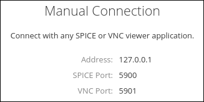
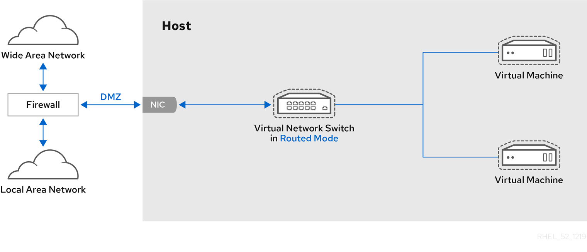
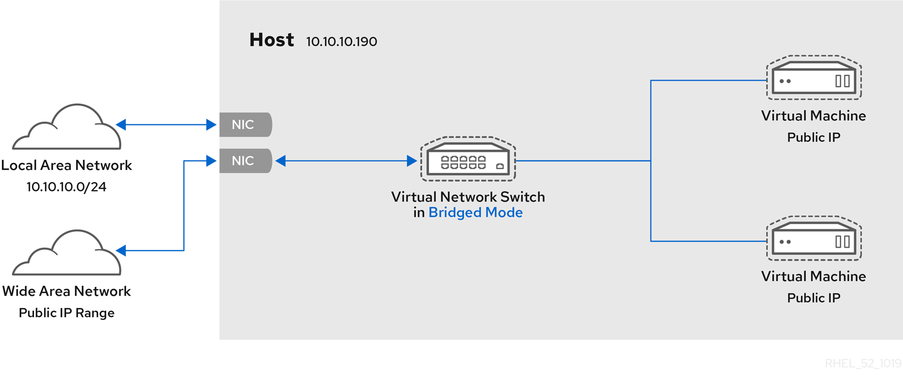
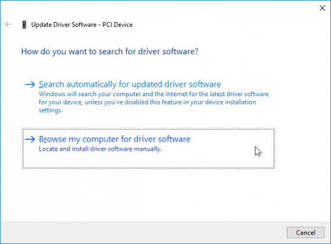
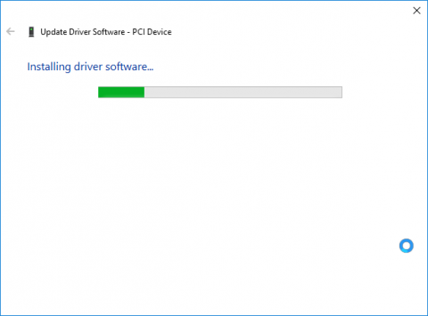
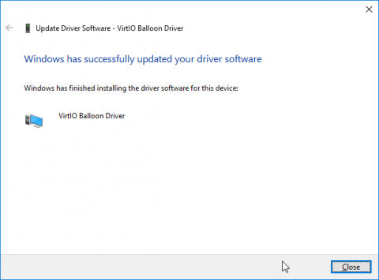

Configuring and managing virtualization
Setting up your host, creating and administering virtual machines, and understanding virtualization features in Red Hat Enterprise Linux 8
Abstract
Providing feedback on Red Hat documentation
We appreciate your input on our documentation. Please let us know how we could make it better. To do so:
For simple comments on specific passages:
- Make sure you are viewing the documentation in the Multi-page HTML format. In addition, ensure you see the Feedback button in the upper right corner of the document.
- Use your mouse cursor to highlight the part of text that you want to comment on.
- Click the Add Feedback pop-up that appears below the highlighted text.
- Follow the displayed instructions.
For submitting more complex feedback, create a Bugzilla ticket:
- Go to the Bugzilla website.
- As the Component, use Documentation.
- Fill in the Description field with your suggestion for improvement. Include a link to the relevant part(s) of documentation.
- Click Submit Bug.
Chapter 1. Virtualization in RHEL 8 - an overview
If you are unfamiliar with the concept of virtualization or its implementation in Linux, the following sections provide a general overview of virtualization in RHEL 8: its basics, advantages, components, and other possible virtualization solutions provided by Red Hat.
1.1. What is virtualization?
RHEL 8 provides the virtualization functionality, which enables a machine running RHEL 8 to host multiple virtual machines (VMs), also referred to as guests. VMs use the host’s physical hardware and computing resources to run a separate, virtualized operating system (guest OS) as a user-space process on the host’s operating system.
In other words, virtualization makes it possible to have operating systems within operating systems.
VMs enable you to safely test software configurations and features, run legacy software, or optimize the workload efficiency of your hardware. For more information on the benefits, see Section 1.2, “Advantages of virtualization”.
For more information on what virtualization is, see the Red Hat Customer Portal.
To try out virtualization in RHEL 8, see Chapter 2, Getting started with virtualization.
In addition to RHEL 8 virtualization, Red Hat offers a number of specialized virtualization solutions, each with a different user focus and features. For more information, see Section 1.5, “Red Hat virtualization solutions”.
1.2. Advantages of virtualization
Using virtual machines (VMs) has the following benefits in comparison to using physical machines:
Flexible and fine-grained allocation of resources
A VM runs on a host machine, which is usually physical, and physical hardware can also be assigned for the guest OS to use. However, the allocation of physical resources to the VM is done on the software level, and is therefore very flexible. A VM uses a configurable fraction of the host memory, CPUs, or storage space, and that configuration can specify very fine-grained resource requests.
For example, what the guest OS sees as its disk can be represented as a file on the host file system, and the size of that disk is less constrained than the available sizes for physical disks.
Software-controlled configurations
The entire configuration of a VM is saved as data on the host, and is under software control. Therefore, a VM can easily be created, removed, cloned, migrated, operated remotely, or connected to remote storage.
Separation from the host
A guest OS runs on a virtualized kernel, separate from the host OS. This means that any OS can be installed on a VM, and even if the guest OS becomes unstable or is compromised, the host is not affected in any way.
Space and cost efficiency
A single physical machine can host a large number of VMs. Therefore, it avoids the need for multiple physical machines to do the same tasks, and thus lowers the space, power, and maintenance requirements associated with physical hardware.
Software compatibility
Because a VM can use a different OS than its host, virtualization makes it possible to run applications that were not originally released for your host OS. For example, using a RHEL 6 guest OS, you can run applications released for RHEL 6 on a RHEL 8 host system.
NoteNot all operating systems are supported as a guest OS in a RHEL 8 host. For details, see Section 17.2, “Recommended features in RHEL 8 virtualization”.
1.3. Virtual machine components and their interaction
Virtualization in RHEL 8 consists of the following principal software components:
Hypervisor
The basis of creating virtual machines (VMs) in RHEL 8 is the hypervisor, a software layer that controls hardware and enables running multiple operating systems on a host machine.
The hypervisor includes the Kernel-based Virtual Machine (KVM) module and virtualization kernel drivers, such as virtio and vfio. These components ensure that the Linux kernel on the host machine provides resources for virtualization to user-space software.
At the user-space level, the QEMU emulator simulates a complete virtualized hardware platform that the guest operating system can run in, and manages how resources are allocated on the host and presented to the guest.
In addition, the libvirt software suite serves as a management and communication layer, making QEMU easier to interact with, enforcing security rules, and providing a number of additional tools for configuring and running VMs.
XML configuration
A host-based XML configuration file (also known as a domain XML file) describes a specific VM. It includes:
- Metadata such as the name of the VM, time zone, and other information about the VM.
- A description of the devices in the VM, including virtual CPUs (vCPUS), storage devices, input/output devices, network interface cards, and other hardware, real and virtual.
- VM settings such as the maximum amount of memory it can use, restart settings, and other settings about the behavior of the VM.
Component interaction
When a VM is started, the hypervisor uses the XML configuration to create an instance of the VM as a user-space process on the host. The hypervisor also makes the VM process accessible to the host-based interfaces, such as the virsh, virt-install, and guestfish utilities, or the web console GUI.
When these virtualization tools are used, libvirt translates their input into instructions for QEMU. QEMU communicates the instructions to KVM, which ensures that the kernel appropriately assigns the resources necessary to carry out the instructions. As a result, QEMU can execute the corresponding user-space changes, such as creating or modifying a VM, or performing an action in the VM’s guest operating system.
While QEMU is an essential component of the architecture, it is not intended to be used directly on RHEL 8 systems, due to security concerns. Therefore, using qemu-* commands is not supported by Red Hat, and it is highly recommended to interact with QEMU using libvirt.
For more information on the host-based interfaces, see Section 1.4, “Tools and interfaces for virtualization management”.
Figure 1.1. RHEL 8 virtualization architecture
1.4. Tools and interfaces for virtualization management
You can manage virtualization in RHEL 8 using the command-line interface (CLI) or several graphical user interfaces (GUIs).
Command-line interface
The CLI is the most powerful method of managing virtualization in RHEL 8. Prominent CLI commands for virtual machine (VM) management include:
virsh - A versatile virtualization command-line utility and shell with a great variety of purposes, depending on the provided arguments. For example:
-
Starting and shutting down a VM -
virsh startandvirsh shutdown -
Listing available VMs -
virsh list -
Creating a VM from a configuration file -
virsh create -
Entering a virtualization shell -
virsh
For more information, see the
virsh(1)man page.-
Starting and shutting down a VM -
-
virt-install- A CLI utility for creating new VMs. For more information, see thevirt-install(1)man page. -
virt-xml- A utility for editing the configuration of a VM. -
guestfish- A utility for examining and modifying VM disk images. For more information, see theguestfish(1)man page.
Graphical interfaces
You can use the following GUIs to manage virtualization in RHEL 8:
The RHEL 8 web console, also known as Cockpit, provides a remotely accessible and easy to use graphical user interface for managing VMs and virtualization hosts.
For instructions on basic virtualization management with the web console, see Chapter 5, Using the web console for managing virtual machines.
The Virtual Machine Manager (virt-manager) application provides a specialized GUI for managing VMs and virtualization hosts.
ImportantAlthough still supported in RHEL 8, virt-manager has been deprecated. The web console is intended to become its replacement in a subsequent release. It is, therefore, recommended that you get familiar with the web console for managing virtualization in a GUI.
However, in RHEL 8, some features may only be accessible from either virt-manager or the command line. For details, see Section 5.12, “Differences between virtualization features in virtual machine manager and the web console”.
The Gnome Boxes application is a lightweight graphical interface to view and access VMs and remote systems. Gnome Boxes is primarily designed for use on desktop systems.
ImportantGnome Boxes is provided as a part of the GNOME desktop environment and is supported on RHEL 8, but Red Hat recommends that you use the web console for managing virtualization in a GUI.
Additional resources
- For instructions on basic virtualization management using CLI and GUI, see Chapter 2, Getting started with virtualization.
1.5. Red Hat virtualization solutions
The following Red Hat products are built on top of RHEL 8 virtualization features and expand the KVM virtualization capabilities available in RHEL 8. In addition, many limitations of RHEL 8 virtualization do not apply to these products:
- Red Hat Virtualization (RHV)
RHV is designed for enterprise-class scalability and performance, and enables the management of your entire virtual infrastructure, including hosts, virtual machines, networks, storage, and users from a centralized graphical interface.
For information about the differences between virtualization in Red Hat Enterprise Linux and Red Hat Virtualization, see the Red Hat Customer Portal.
Red Hat Virtualization can be used by enterprises running large deployments or mission-critical applications. Examples of large deployments suited to Red Hat Virtualization include databases, trading platforms, and messaging systems that must run continuously without any downtime.
For more information about Red Hat Virtualization, see the Red Hat Customer Portal or the Red Hat Virtualization documentation suite.
To download a fully supported 60-day evaluation version of Red Hat Virtualization, see https://access.redhat.com/products/red-hat-virtualization/evaluation
- Red Hat OpenStack Platform (RHOSP)
Red Hat OpenStack Platform offers an integrated foundation to create, deploy, and scale a secure and reliable public or private OpenStack cloud.
For more information about Red Hat OpenStack Platform, see the Red Hat Customer Portal or the Red Hat OpenStack Platform documentation suite.
To download a fully supported 60-day evaluation version of Red Hat OpenStack Platform, see https://access.redhat.com/products/red-hat-openstack-platform/evaluation
In addition, specific Red Hat products provide operating-system-level virtualization, also known as containerization:
- Containers are isolated instances of the host OS and operate on top of an existing OS kernel. For more information on containers, see the Red Hat Customer Portal.
- Containers do not have the versatility of KVM virtualization, but are more lightweight and flexible to handle. For a more detailed comparison, see the Introduction to Linux Containers.
Chapter 2. Getting started with virtualization
To start using virtualization in RHEL 8, follow the steps below. The default method for this is using the command-line interface (CLI), but for user convenience, some of the steps can be completed in the the web console GUI.
- Enable the virtualization module and install the virtualization packages - see Section 2.1, “Enabling virtualization”.
Create a virtual machine (VM):
Start the VM:
Connect to the VM:
The web console currently provides only a subset of VM management functions, so using the command line is recommended for advanced use of virtualization in RHEL 8.
2.1. Enabling virtualization
To use virtualization in RHEL 8, you must enable the virtualization module, install virtualization packages, and ensure your system is configured to host virtual machines (VMs).
Prerequisites
- Red Hat Enterprise Linux 8 must be installed and registered on your host machine.
Your system must meet the following hardware requirements to work as a virtualization host:
- The architecture of your host machine supports KVM virtualization.
The following minimum system resources are available:
- 6 GB free disk space for the host, plus another 6 GB for each intended VM.
- 2 GB of RAM for the host, plus another 2 GB for each intended VM.
Procedure
Install the packages in the RHEL 8 virtualization module:
# yum module install virtInstall the
virt-installandvirt-viewerpackages:# yum install virt-install virt-viewerVerify that your system is prepared to be a virtualization host:
# virt-host-validate [...] QEMU: Checking for device assignment IOMMU support : PASS QEMU: Checking if IOMMU is enabled by kernel : WARN (IOMMU appears to be disabled in kernel. Add intel_iommu=on to kernel cmdline arguments) LXC: Checking for Linux >= 2.6.26 : PASS [...] LXC: Checking for cgroup 'blkio' controller mount-point : PASS LXC: Checking if device /sys/fs/fuse/connections exists : FAIL (Load the 'fuse' module to enable /proc/ overrides)If all virt-host-validate checks return a
PASSvalue, your system is prepared for creating VMs.If any of the checks return a
FAILvalue, follow the displayed instructions to fix the problem.If any of the checks return a
WARNvalue, consider following the displayed instructions to improve virtualization capabilities.
Additional information
Note that if virtualization is not supported by your host CPU, virt-host-validate generates the following output:
QEMU: Checking for hardware virtualization: FAIL (Only emulated CPUs are available, performance will be significantly limited)
However, attempting to create VMs on such a host system will fail, rather than have performance problems.
2.2. Creating virtual machines
To create a virtual machine (VM) in RHEL 8, use the command line interface or the RHEL 8 web console.
Prerequisites
- Virtualization must be installed and enabled on your system.
Make sure you have sufficient amount of system resources to allocate to your VMs, such as disk space, RAM, or CPUs. The recommended values may vary significantly depending on the intended tasks and workload of the VMs.
WarningInstalling from a host CD-ROM or DVD-ROM device is not possible in RHEL 8. If you select a CD-ROM or DVD-ROM as the installation source when using any VM installation method available in RHEL 8, the installation will fail. For more information, see the Red Hat Knowledge Base.
2.2.1. Creating virtual machines using the command-line interface
To create a virtual machine (VM) on your RHEL 8 host using the virt-install utility, follow the instructions below.
Prerequisites
An operating system (OS) installation source, which can be one of the following, and be available locally or on a network:
- An ISO image of an installation medium
- A disk image of an existing VM installation
- Optionally, a Kickstart file can also be provided for faster and easier configuration of the installation.
- Virtualization must be enabled on your host system.
Procedure
To create a VM and start its OS installation, use the virt-install command, along with the following mandatory arguments:
- The name of the new machine
- The amount of allocated memory
- The number of allocated virtual CPUs (vCPUs)
- The type and size of the allocated storage
- The type and location of the OS installation source
Based on the chosen installation method, the necessary options and values can vary. See below for examples:
The following creates a VM named demo-guest1 that installs the Windows 10 OS from an ISO image locally stored in the /home/username/Downloads/Win10install.iso file. This VM is also allocated with 2048 MiB of RAM and 2 vCPUs, and an 80 GiB qcow2 virtual disk is automatically configured for the VM.
# virt-install --name demo-guest1 --memory 2048 --vcpus 2 --disk size=80 --os-variant win10 --cdrom /home/username/Downloads/Win10install.isoThe following creates a VM named demo-guest2 that uses the /home/username/Downloads/rhel8.iso image to run a RHEL 8 OS from a live CD. No disk space is assigned to this VM, so changes made during the session will not be preserved. In addition, the VM is allocated with 4096 MiB of RAM and 4 vCPUs.
# virt-install --name demo-guest2 --memory 4096 --vcpus 4 --disk none --livecd --os-variant rhel8.0 --cdrom /home/username/Downloads/rhel8.isoThe following creates a RHEL 8 VM named demo-guest3 that connects to an existing disk image, /home/username/backup/disk.qcow2. This is similar to physically moving a hard drive between machines, so the OS and data available to demo-guest3 are determined by how the image was handled previously. In addition, this VM is allocated with 2048 MiB of RAM and 2 vCPUs.
# virt-install --name demo-guest3 --memory 2048 --vcpus 2 --os-variant rhel8.0 --import --disk /home/username/backup/disk.qcow2Note that the
--os-variantoption is highly recommended when importing a disk image. If it is not provided, the performance of the created VM will be negatively affected.The following creates a VM named demo-guest4 that installs from the
http://example.com/OS-installURL. For the installation to start successfully, the URL must contain a working OS installation tree. In addition, the OS is automatically configured using the /home/username/ks.cfg kickstart file. This VM is also allocated with 2048 MiB of RAM, 2 vCPUs, and a 160 GiB qcow2 virtual disk.# virt-install --name demo-guest4 --memory 2048 --vcpus 2 --disk size=160 --os-variant rhel8.0 --location http://example.com/OS-install --initrd-inject /home/username/ks.cfg --extra-args="ks=file:/ks.cfg console=tty0 console=ttyS0,115200n8"The following creates a VM named demo-guest5 that installs from a
RHEL8.isoimage file in text-only mode, without graphics. It connects the guest console to the serial console. The VM has 16384 MiB of memory, 16 vCPUs, and 280 GiB disk. This kind of installation is useful when connecting to a host over a slow network link.# virt-install --name demo-guest5 --memory 16384 --vcpus 16 --disk size=280 --os-variant rhel8.0 --location RHEL8.iso --graphics none --extra-args='console=ttyS0'The following creates a VM named demo-guest6, which has the same configuration as demo-guest5, but resides on the 10.0.0.1 remote host.
# virt-install --connect qemu+ssh://root@10.0.0.1/system --name demo-guest6 --memory 16384 --vcpus 16 --disk size=280 --os-variant rhel8.0 --location RHEL8.iso --graphics none --extra-args='console=ttyS0'
If the VM is created successfully, a virt-viewer window opens with a graphical console of the VM and starts the guest OS installation.
Additional resources
- A number of other options can be specified for virt-install to further configure the VM and its OS installation. For details, see the virt-install man page.
- If you already have a functional VM, you can clone it to quickly create a new VM with the same configuration and data. For details, see Chapter 7, Cloning virtual machines.
2.2.2. Creating virtual machines using the web console
To create a virtual machine (VM) on the host machine to which the web console is connected, follow the instructions below.
Prerequisites
- To use the web console to manage VMs, install the web console VM plug-in.
- Make sure you have sufficient amount of system resources to allocate to your VMs, such as disk space, RAM, or CPUs. The recommended values may vary significantly depending on the intended tasks and workload of the VMs.
A locally available operating system (OS) installation source, which can be one of the following:
- An ISO image of an installation medium
- A disk image of an existing VM installation
Procedure
In the interface of the web console, click .
The Create New Virtual Machine dialog appears.

Enter the basic configuration of the VM you want to create.
- Connection - The connection to the host to be used by the VM.
- Name - The name of the VM.
- Installation Source Type - The installation can use a local installation medium, a URL, a PXE network boot, or a disk image of an existing VM.
- Installation Source - The path or URL that points to the installation source.
- OS Vendor - The vendor of the VM’s operating system.
- Operating System - The VM’s operating system. Note that Red Hat provides support only for a limited set of guest operating systems.
- Memory - The amount of memory with which to configure the VM.
- Storage Size - The amount of storage space with which to configure the VM.
- Immediately Start VM - Whether or not the VM will start immediately after it is created.
Click .
The VM is created. If the Immediately Start VM checkbox is selected, the VM will immediately start and begin installing the guest operating system.
If you did not choose Existing Disk Image as the installation source type, you must install the operating system the first time the VM is run.
Additional resources
- For information on installing an operating system on a VM, see Section 5.3.2, “Installing guest operating systems using the web console”.
2.3. Starting virtual machines
To start a virtual machine (VM) in RHEL 8, you can use the command line interface or the web console GUI.
Prerequisites
- Before a VM can be started, it must be created and, ideally, also installed with an OS. For instruction to do so, see Section 2.2, “Creating virtual machines”.
2.3.1. Starting a virtual machine using the command-line interface
You can use the command line interface to start a shutdown virtual machine (VM) or restore a saved VM. Follow the procedure below.
Prerequisites
- An inactive VM that is already defined.
- The name of the VM.
For remote VMs,
- The IP address of the host where the VM is located.
- Root access privileges to the host.
Procedure
For a local VM, use the
virsh startutility.For example, the following command starts the demo-guest1 VM.
# virsh start demo-guest1 Domain demo-guest1 startedFor a VM located on a remote host, use the
virsh startutility along with the QEMU+SSH connection to the host.For example, the following command starts the demo-guest1 VM on the 192.168.123.123 host.
# virsh -c qemu+ssh://root@192.168.123.123/system start demo-guest1 root@192.168.123.123's password: Last login: Mon Feb 18 07:28:55 2019 Domain demo-guest1 started
Additional Resources
-
For more
virsh startarguments, see thevirshman page. - For simplifying VM management on remote hosts, see modifying your libvirt and SSH configuration.
-
You can use the
virsh autostartutility to configure a VM to start automatically when the host boots up. For more information about autostart, see thevirsh autostarthelp page.
2.3.2. Powering up virtual machines using the web console
If a virtual machine (VM) is in the shut off state, you can start it using the RHEL 8 web console.
Prerequisites
- An inactive VM that is already defined.
- The name of the VM.
- To use the web console to manage VMs, install the web console VM plug-in.
Procedure
In the interface, click a row with the name of the VM you want to start.
The row expands to reveal the Overview pane with basic information about the selected VM and controls for shutting down and deleting the VM.
Click .
The VM starts, and you can connect to its console or graphical output.
-
Optional: To set up the VM to start automatically when the host starts, click the
Autostartcheckbox.
Additional resources
- For information on shutting down a VM, see Section 5.5.2, “Powering down virtual machines in the web console”.
- For information on restarting a VM, see Section 5.5.3, “Restarting virtual machines using the web console”.
- For information on sending a non-maskable interrupt to a VM, see Section 5.5.4, “Sending non-maskable interrupts to VMs using the web console”.
2.4. Connecting to virtual machines
To interact with a virtual machine (VM) in RHEL 8, you need to connect to it by doing one of the following:
- When using the web console interface, use the Virtual Machines pane in the web console interface. For more information, see Section 2.4.1, “Viewing the virtual machine graphical console in the web console”
- If you need to interact with a VM graphical display without using the web console, use the Virt Viewer application. For details, see Section 2.4.2, “Opening a virtual machine graphical console using Virt Viewer”
- When a graphical display is not possible or not necessary, use an SSH terminal connection.
- When the virtual machine is not reachable from your system by using a network, use the virsh console.
If the VMs to which you are connecting are on a remote host rather than a local one, you can optionally configure your system for more convenient access to remote hosts.
2.4.1. Viewing the virtual machine graphical console in the web console
Using the virtual machine (VM) console interface, you can view the graphical output of a selected VM in the RHEL 8 web console.
Prerequisites
- To use the web console to manage VMs, install the web console VM plug-in.
- Ensure that both the host and the VM support a graphical interface.
Procedure
In the interface, click a row with the name of the VM whose graphical console you want to view.
The row expands to reveal the Overview pane with basic information about the selected VM and controls for shutting down and deleting the VM.
Click .
The graphical console appears in the web interface.

You can interact with the VM console using the mouse and keyboard in the same manner you interact with a real machine. The display in the VM console reflects the activities being performed on the VM.
The host on which the web console is running may intercept specific key combinations, such as Ctrl+Alt+F1, preventing them from being sent to the VM.
To send such key combinations, click the menu and select the key sequence to send.
For example, to send the Ctrl+Alt+F1 combination to the VM, click the menu and select the menu entry.
Additional resources
- For instructions on viewing the graphical console in a remote viewer, see Section 5.10.2, “Viewing the graphical console in a remote viewer using the web console”.
- For instructions on viewing the serial console in the web console, see Section 5.10.3, “Viewing the virtual machine serial console in the web console”.
2.4.2. Opening a virtual machine graphical console using Virt Viewer
To connect to a graphical console of a KVM virtual machine (VM) and open it in the Virt Viewer desktop application, follow the procedure below.
Prerequisites
- Your system, as well as the VM you are connecting to, must support graphical displays.
- If the target VM is located on a remote host, connection and root access privileges to the host are needed.
- Optional: If the target VM is located on a remote host, set up your libvirt and SSH for more convenient access to remote hosts.
Procedure
To connect to a local VM, use the following command and replace guest-name with the name of the VM you want to connect to:
# virt-viewer guest-nameTo connect to a remote VM, use the
virt-viewercommand with the SSH protocol. For example, the following command connects as root to a VM called guest-name, located on remote system 10.0.0.1. The connection also requires root authentication for 10.0.0.1.# virt-viewer --direct --connect qemu+ssh://root@10.0.0.1/system guest-name root@10.0.0.1's password:
If the connection works correctly, the VM display is shown in the Virt Viewer window.
You can interact with the VM console using the mouse and keyboard in the same manner you interact with a real machine. The display in the VM console reflects the activities being performed on the VM.
Additional resources
-
For more information on using Virt Viewer, see the
virt-viewerman page. - Connecting to VMs on a remote host can be simplified by modifying your libvirt and SSH configuration.
- For management of VMs in an interactive GUI in RHEL 8, you can use the web console interface. For more information, see Section 5.10, “Interacting with virtual machines using the web console”.
2.4.3. Connecting to a virtual machine using SSH
To interact with the terminal of a virtual machine (VM) using the SSH connection protocol, follow the procedure below:
Prerequisites
- Network connection and root access privileges to the target VM.
The
libvirt-nsscomponent must be installed and enabled on the VM’s host. If it is not, do the following:Install the
libvirt-nsspackage:# yum install libvirt-nssEdit the
/etc/nsswitch.conffile and addlibvirt_guestto thehostsline:[...] passwd: compat shadow: compat group: compat hosts: files libvirt_guest dns [...]
- If the target VM is located on a remote host, connection and root access privileges to the host are also needed.
Procedure
Optional: When connecting to a remote VM, SSH into its physical host first. The following example demonstrates connecting to a host machine 10.0.0.1 using its root credentials:
# ssh root@10.0.0.1 root@10.0.0.1's password: Last login: Mon Sep 24 12:05:36 2018 root~#Use the VM’s name and user access credentials to connect to it. For example, the following connects to to the "testguest1" VM using its root credentials:
# ssh root@testguest1 root@testguest1's password: Last login: Wed Sep 12 12:05:36 2018 root~]#
Troubleshooting
If you do not know the VM’s name, you can list all VMs available on the host using the
virsh list --allcommand:# virsh list --all Id Name State ---------------------------------------------------- 2 testguest1 running - testguest2 shut off
2.4.4. Opening a virtual machine serial console
Using the virsh console command, it is possible to connect to the serial console of a virtual machine (VM).
This is useful when the VM:
- Does not provide VNC or SPICE protocols, and thus does not offer video display for GUI tools.
- Does not have a network connection, and thus cannot be interacted with using SSH.
Prerequisites
The VM must have the serial console configured in its kernel command line. To verify this, the
cat /proc/cmdlinecommand output on the VM should include console=ttyS0. For example:# cat /proc/cmdline BOOT_IMAGE=/vmlinuz-3.10.0-948.el7.x86_64 root=/dev/mapper/rhel-root ro console=tty0 console=ttyS0,9600n8 rd.lvm.lv=rhel/root rd.lvm.lv=rhel/swap rhgbIf the serial console is not set up properly on a VM, using virsh console to connect to the VM connects you to an unresponsive guest console. However, you can still exit the unresponsive console by using the Ctrl+] shortcut.
To set up serial console on the VM, do the following:
-
On the VM, edit the
/etc/default/grubfile and add console=ttyS0 to the line that starts with GRUB_CMDLINE_LINUX. Clear the kernel options that may prevent your changes from taking effect
# grub2-editenv - unset kerneloptsReload the Grub configuration:
# grub2-mkconfig -o /boot/grub2/grub.cfg Generating grub configuration file ... Found linux image: /boot/vmlinuz-3.10.0-948.el7.x86_64 Found initrd image: /boot/initramfs-3.10.0-948.el7.x86_64.img [...] done- Reboot the VM.
-
On the VM, edit the
Procedure
On your host system, use the
virsh consolecommand. The following example connects to the guest1 VM, if the libvirt driver supports safe console handling:# virsh console guest1 --safe Connected to domain guest1 Escape character is ^] Subscription-name Kernel 3.10.0-948.el7.x86_64 on an x86_64 localhost login:
- You can interact with the virsh console in the same way as with a standard command-line interface.
Additional resources
- For more information about the VM serial console, see the virsh man page.
2.4.5. Setting up easy access to remote virtualization hosts
When managing VMs on a remote host system using libvirt utilities, it is recommended to use the -c qemu+ssh://root@hostname/system syntax. For example, to use the virsh list command as root on the 10.0.0.1 host:
# virsh -c qemu+ssh://root@10.0.0.1/system list
root@10.0.0.1's password:
Last login: Mon Feb 18 07:28:55 2019
Id Name State
---------------------------------
1 remote-guest runningHowever, for convenience, you can remove the need to specify the connection details in full by modifying your SSH and libvirt configuration. For example, you will be able to do:
# virsh -c remote-host list
root@10.0.0.1's password:
Last login: Mon Feb 18 07:28:55 2019
Id Name State
---------------------------------
1 remote-guest runningTo enable this improvement, follow the instructions below.
Procedure
Edit or create the
~/.ssh/configfile and add the following to it, where host-alias is a shortened name associated with a specific remote host, and hosturl is the URL address of the host.Host host-alias User root Hostname hosturl
For example, the following sets up the tyrannosaurus alias for root@10.0.0.1:
Host tyrannosaurus User root Hostname 10.0.0.1Edit or create the
/etc/libvirt/libvirt.conffile, and add the following, where qemu-host-alias is a host alias that QEMU and libvirt utilities will associate with the intended host:uri_aliases = [ "qemu-host-alias=qemu+ssh://host-alias/system", ]
For example, the following uses the tyrannosaurus alias configured in the previous step to set up the t-rex alias, which stands for
qemu+ssh://10.0.0.1/system:uri_aliases = [ "t-rex=qemu+ssh://tyrannosaurus/system", ]
As a result, you can manage remote VMs by using libvirt-based utilities on the local system with an added
-c qemu-host-aliasparameter. This automatically performs the commands over SSH on the remote host.For example, the following lists VMs on the 10.0.0.1 remote host, the connection to which was set up as t-rex in the previous steps:
$ virsh -c t-rex list root@10.0.0.1's password: Last login: Mon Feb 18 07:28:55 2019 Id Name State --------------------------------- 1 velociraptor runningOptional: If you want to use libvirt utilities exclusively on a single remote host, you can also set a specific connection as the default target for libvirt-based utilities. To do so, edit the
/etc/libvirt/libvirt.conffile and set the value of theuri_defaultparameter to qemu-host-alias. For example, the following uses the t-rex host alias set up in the previous steps as a default libvirt target.# These can be used in cases when no URI is supplied by the application # (@uri_default also prevents probing of the hypervisor driver). # uri_default = "t-rex"
As a result, all libvirt-based commands will automatically be performed on the specified remote host.
$ virsh list root@10.0.0.1's password: Last login: Mon Feb 18 07:28:55 2019 Id Name State --------------------------------- 1 velociraptor runningHowever, this is not recommended if you also want to manage VMs on your local host or on different remote hosts.
Additional resources
When connecting to a remote host, you can avoid having to provide the root password to the remote system. To do so, use one or more of the following methods:
- Set up key-based SSH access to the remote host.
- Use SSH connection multiplexing to connect to the remote system.
- Set up a kerberos authentication ticket on the remote system.
Utilities that can use the
-c(or--connect) option and the remote host access configuration described above include:- virt-install
- virt-viewer
- virsh
- virt-manager
2.5. Shutting down virtual machines
To shut down a running virtual machine in Red Hat Enterprise Linux 8, use the command line interface or the web console GUI.
2.5.1. Shutting down a virtual machine using the command-line interface
To shut down a responsive virtual machine (VM), do one of the following:
- Use a shutdown command appropriate to the guest OS while connected to the guest.
Use the
virsh shutdowncommand on the host:If the VM is on a local host:
# virsh shutdown demo-guest1 Domain demo-guest1 is being shutdownIf the VM is on a remote host, in this example 10.0.0.1:
# virsh -c qemu+ssh://root@10.0.0.1/system shutdown demo-guest1 root@10.0.0.1's password: Last login: Mon Feb 18 07:28:55 2019 Domain demo-guest1 is being shutdown
To force a guest to shut down, for example if it has become unresponsive, use the virsh destroy command on the host:
# virsh destroy demo-guest1
Domain demo-guest1 destroyed
The virsh destroy command does not actually delete or remove the VM configuration or disk images. It only destroys the running VM instance. However, in rare cases, this command may cause corruption of the VM’s file system, so using virsh destroy is only recommended if all other shutdown methods have failed.
2.5.2. Powering down virtual machines in the web console
If a virtual machine (VM) is in the running state, you can shut it down using the RHEL 8 web console.
Prerequisites
- To use the web console to manage VMs, install the web console VM plug-in.
Procedure
In the interface, click a row with the name of the VM you want to shut down.
The row expands to reveal the Overview pane with basic information about the selected VM and controls for shutting down and deleting the VM.
Click .
The VM shuts down.
Troubleshooting
- If the VM does not shut down, click the arrow next to the button and select .
- To shut down an unresponsive VM, you can also send a non-maskable interrupt. For more information, see Section 5.5.4, “Sending non-maskable interrupts to VMs using the web console”.
Additional resources
- For information on starting a VM, see Section 5.5.1, “Powering up virtual machines using the web console”.
- For information on restarting a VM, see Section 5.5.3, “Restarting virtual machines using the web console”.
2.6. Deleting virtual machines
To delete virtual machines in Red Hat Enterprise Linux 8, use the command line interface or the web console GUI.
2.6.1. Deleting virtual machines using the command line interface
To delete a virtual machine (VM), you can remove its XML configuration and associated storage files from the host using the command line. Follow the procedure below:
Prerequisites
- Back up important data from the VM.
- Shut down the VM.
- Make sure no other VMs use the same associated storage.
Procedure
Use the
virsh undefineutility.For example, the following command removes the guest1 VM, its associated storage volumes, and non-volatile RAM, if any.
# virsh undefine guest1 --remove-all-storage --nvram Domain guest1 has been undefined Volume 'vda'(/home/images/guest1.qcow2) removed.
Additional resources
-
For other
virsh undefinearguments, see thevirshman page.
2.6.2. Deleting virtual machines using the web console
To delete a virtual machine (VM) and its associated storage files from the host to which the RHEL 8 web console is connected with, follow the procedure below:
Prerequisites
- To use the web console to manage VMs, install the web console VM plug-in.
- Back up important data from the VM.
- Shut down the VM.
- Make sure no other VMs use the same associated storage.
Procedure
In the interface, click the name of the VM you want to delete.
The row expands to reveal the Overview pane with basic information about the selected VM and controls for shutting down and deleting the VM.

Click .
A confirmation dialog appears.

- Optional: To delete all or some of the storage files associated with the VM, select the checkboxes next to the storage files you want to delete.
Click .
The VM and any selected storage files are deleted.
Chapter 3. Getting started with virtualization on IBM POWER
You can use KVM virtualization when using RHEL 8 on IBM POWER8 or POWER9 hardware. However, enabling the KVM hypervisor on your system requires extra steps compared to virtualization on AMD64 and Intel64 architectures. Certain RHEL 8 virtualization features also have different or restricted functionality on IBM POWER.
Apart from the information in the following sections, using virtualization on IBM POWER works the same as on AMD64 and Intel 64. Therefore, you can see other RHEL 8 virtualization documentation for more information about using virtualization on IBM POWER.
3.1. Enabling virtualization on IBM POWER
To set up a KVM hypervisor and create virtual machines (VMs) on an IBM POWER8 or IBM POWER9 system running RHEL 8, follow the instructions below.
Prerequisites
- RHEL 8 is installed and registered on your host machine.
The following minimum system resources are available:
- 6 GB free disk space for the host, plus another 6 GB for each intended VM.
- 2 GB of RAM for the host, plus another 2 GB for each intended VM.
Your CPU machine type must support IBM POWER virtualization.
To verify this, query the platform information in your
/proc/cpuinfofile.# grep ^platform /proc/cpuinfo/ platform : PowerNVIf the output of this command includes the
PowerNVentry, you are running a PowerNV machine type and can use virtualization on IBM POWER.
Procedure
Load the KVM-HV kernel module
# modprobe kvm_hvVerify that the KVM kernel module is loaded
# lsmod | grep kvmIf KVM loaded successfully, the output of this command includes
kvm_hv.Install the packages in the virtualization module:
# yum module install virtInstall the
virt-installpackage:# yum install virt-installVerify that your system is prepared to be a virtualization host:
# virt-host-validate [...] QEMU: Checking if device /dev/vhost-net exists : PASS QEMU: Checking if device /dev/net/tun exists : PASS QEMU: Checking for cgroup 'memory' controller support : PASS QEMU: Checking for cgroup 'memory' controller mount-point : PASS [...] QEMU: Checking for cgroup 'blkio' controller support : PASS QEMU: Checking for cgroup 'blkio' controller mount-point : PASS QEMU: Checking if IOMMU is enabled by kernel : PASSIf all virt-host-validate checks return a
PASSvalue, your system is prepared for creating VMs.If any of the checks return a
FAILvalue, follow the displayed instructions to fix the problem.If any of the checks return a
WARNvalue, consider following the displayed instructions to improve virtualization capabilities.
Additional information
Note that if virtualization is not supported by your host CPU, virt-host-validate generates the following output:
QEMU: Checking for hardware virtualization: FAIL (Only emulated CPUs are available, performance will be significantly limited)
However, attempting to create VMs on such a host system will fail, rather than have performance problems.
3.2. How virtualization on IBM POWER differs from AMD64 and Intel 64
KVM virtualization in RHEL 8 on IBM POWER systems is different from KVM on AMD64 and Intel 64 systems in a number of aspects, notably:
- Memory requirements
- VMs on IBM POWER consume more memory. Therefore, the recommended minimum memory allocation for a virtual machine (VM) on an IBM POWER host is 2GB RAM.
- Display protocols
The SPICE protocol is not supported on IBM POWER systems. To display the graphical output of a VM, use the
VNCprotocol. In addition, only the following virtual graphics card devices are supported:-
vga- only supported in-vga stdmode and not in-vga cirrusmode. -
virtio-vga -
virtio-gpu
-
- SMBIOS
- SMBIOS configuration is not available
- Memory allocation errors
POWER8 VMs, including compatibility mode VMs, may fail with an error similar to:
qemu-kvm: Failed to allocate KVM HPT of order 33 (try smaller maxmem?): Cannot allocate memory
This is significantly more likely to occur on VMs that use RHEL 7.3 and prior as the guest OS.
To fix the problem, increase the CMA memory pool available for the guest’s hashed page table (HPT) by adding
kvm_cma_resv_ratio=memoryto the host’s kernel command line, where memory is the percentage of the host memory that should be reserved for the CMA pool (defaults to 5).- Huge pages
Transparent huge pages (THPs) do not provide any notable performance benefits on IBM POWER8 VMs. However, IBM POWER9 VMs can benefit from THPs as expected.
In addition, the size of static huge pages on IBM POWER8 systems are 16 MiB and 16 GiB, as opposed to 2 MiB and 1 GiB on AMD64, Intel 64, and IBM POWER9. As a consequence, to migrate a VM configured with static huge pages from an IBM POWER8 host to an IBM POWER9 host, you must first set up 1GiB huge pages on the VM.
- kvm-clock
-
The
kvm-clockservice does not have to be configured for time management in VMs on IBM POWER9. - pvpanic
IBM POWER9 systems do not support the
pvpanicdevice. However, an equivalent functionality is available and activated by default on this architecture. To enable it in a VM, use the<on_crash>XML configuration element with thepreservevalue.In addition, make sure to remove the
<panic>element from the<devices>section, as its presence can lead to the VM failing to boot on IBM POWER systems.- Single-threaded host
- On IBM POWER8 systems, the host machine must run in single-threaded mode to support VMs. This is automatically configured if the qemu-kvm packages are installed. However, VMs running on single-threaded hosts can still use multiple threads.
- Peripheral devices
A number of peripheral devices supported on AMD64 and Intel 64 systems are not supported on IBM POWER systems, or a different device is supported as a replacement.
-
Devices used for PCI-E hierarchy, including
ioh3420andxio3130-downstream, are not supported. This functionality is replaced by multiple independent PCI root bridges provided by thespapr-pci-host-bridgedevice. - UHCI and EHCI PCI controllers are not supported. Use OHCI and XHCI controllers instead.
-
IDE devices, including the virtual IDE CD-ROM (
ide-cd) and the virtual IDE disk (ide-hd), are not supported. Use thevirtio-scsiandvirtio-blkdevices instead. -
Emulated PCI NICs (
rtl8139) are not supported. Use thevirtio-netdevice instead. -
Sound devices, including
intel-hda,hda-output, andAC97, are not supported. -
USB redirection devices, including
usb-redirandusb-tablet, are not supported.
-
Devices used for PCI-E hierarchy, including
- v2v and p2v
-
The
virt-v2vandvirt-p2vutilities are supported only on the AMD64 and Intel 64 architecture, and are not provided on IBM POWER.
Chapter 4. Getting started with virtualization on IBM Z
You can use KVM virtualization when using RHEL 8 on IBM Z hardware. However, enabling the KVM hypervisor on your system requires extra steps compared to virtualization on AMD64 and Intel 64 architectures. Certain RHEL 8 virtualization features also have different or restricted functionality on IBM Z.
Nevertheless, apart from the information in the following sections, using virtualization on IBM Z works the same as on AMD64 and Intel 64. Therefore, you can see other RHEL 8 virtualization documentation for more information about using virtualization on IBM Z.
4.1. Enabling virtualization on IBM Z
To set up a KVM hypervisor and create virtual machines (VMs) on an IBM Z system running RHEL 8, follow the instructions below.
Prerequisites
- RHEL 8 is installed and registered on your host machine.
The following minimum system resources are available:
- 6 GB free disk space for the host, plus another 6 GB for each intended VM.
- 2 GB of RAM for the host, plus another 2 GB for each intended VM.
- Your IBM Z host system must be using a z13 CPU or later.
RHEL 8 has to be installed on a logical partition (LPAR). In addition, the LPAR must support the start-interpretive execution (SIE) virtualization functions.
To verify this, search for
siein your/proc/cpuinfofile.# grep sie /proc/cpuinfo/ features : esan3 zarch stfle msa ldisp eimm dfp edat etf3eh highgprs te sie
Procedure
Load the KVM kernel module:
# modprobe kvmVerify that the KVM kernel module is loaded:
# lsmod | grep kvmIf KVM loaded successfully, the output of this command includes
kvm:Install the packages in the virtualization module:
# yum module install virtInstall the
virt-installpackage:# yum install virt-installVerify that your system is prepared to be a virtualization host:
# virt-host-validate [...] QEMU: Checking if device /dev/kvm is accessible : PASS QEMU: Checking if device /dev/vhost-net exists : PASS QEMU: Checking if device /dev/net/tun exists : PASS QEMU: Checking for cgroup 'memory' controller support : PASS QEMU: Checking for cgroup 'memory' controller mount-point : PASS [...]If all virt-host-validate checks return a
PASSvalue, your system is prepared for creating VMs.If any of the checks return a
FAILvalue, follow the displayed instructions to fix the problem.If any of the checks return a
WARNvalue, consider following the displayed instructions to improve virtualization capabilities.
Additional information
Note that if virtualization is not supported by your host CPU, virt-host-validate generates the following output:
QEMU: Checking for hardware virtualization: FAIL (Only emulated CPUs are available, performance will be significantly limited)
However, attempting to create VMs on such a host system will fail, rather than have performance problems.
4.2. How virtualization on IBM Z differs from AMD64 and Intel 64
KVM virtualization in RHEL 8 on IBM Z systems differs from KVM on AMD64 and Intel 64 systems in the following:
- No graphical output
-
Displaying the VM graphical output is not possible when connecting to the VM using the VNC protocol. This is due to the
gnome-desktoputility not being supported on IBM Z. - PCI and USB devices
Virtual PCI and USB devices are not supported on IBM Z. This also means that
virtio-*-pcidevices are unsupported, andvirtio-*-ccwdevices should be used instead. For example, usevirtio-net-ccwinstead ofvirtio-net-pci.Note that direct attachment of PCI devices, also known as PCI passthrough, is supported.
- Device boot order
IBM Z does not support the
<boot dev='device'>XML configuration element. To define device boot order, use the<boot order='number'>element in the<devices>section of the XML. For example:<devices> <disk type='file' snapshot='external'> <driver name="tap" type="aio" cache="default"/> <source file='/var/lib/xen/images/fv0' startupPolicy='optional'> <seclabel relabel='no'/> </source> <target dev='hda' bus='ide'/> <iotune> <total_bytes_sec>10000000</total_bytes_sec> <read_iops_sec>400000</read_iops_sec> <write_iops_sec>100000</write_iops_sec> </iotune> <boot order='2'/> [...] </disk>NoteUsing
<boot order='number'>for boot order management is also preferred on AMD64 and Intel 64 hosts.- NUMA topology
-
Non-Uniform Memory Access (NUMA) topology for CPUs is not supported by
libvirton IBM Z. Therefore, tuning vCPU performance using NUMA is not possible on these systems. - vfio-ap
- VMs on an IBM Z host can use the vfio-ap cryptographic device passthrough, which is not supported on any other architectures.
- SMBIOS
- SMBIOS configuration is not available on IBM Z.
- Watchdog devices
If using watchdog devices in your VM on an IBM Z host, use the
diag288model. For example:<devices> <watchdog model='diag288' action='poweroff'/> </devices>
- kvm-clock
-
The
kvm-clockservice is specific to AMD64 and Intel 64 systems, and does not have to be configured for VM time management on IBM Z. - v2v and p2v
-
The
virt-v2vandvirt-p2vutilities are supported only on the AMD64 and Intel 64 architecture, and are not provided on IBM Z.
Chapter 5. Using the web console for managing virtual machines
To manage virtual machines in a graphical interface on a RHEL 8 host, you can use the Virtual Machines pane in the RHEL 8 web console.

The following sections describe the web console’s virtualization management capabilities and provide instructions for using them.
5.1. Overview of virtual machine management using the web console
The RHEL 8 web console is a web-based interface for system administration. With the installation of a web console plug-in, the web console can be used to manage virtual machines (VMs) on connected servers. It provides a graphical view of VMs on a host system to which the web console can connect, and allows monitoring system resources and adjusting configuration with ease.
Using the web console for VM management, you can do for example the following:
- Create and delete VMs
- Install operating systems on VMs
- Start and shut down VMs
- View information about VMs
- Create and attach disks to VMs
- Configure virtual CPU settings for VMs
- Manage virtual network interfaces
- Interact with VMs using VM consoles
The Virtual Machine Manager (virt-manager) application is still supported in RHEL 8 but has been deprecated. The web console is intended to become its replacement in a subsequent release. It is, therefore, recommended that you get familiar with the web console for managing virtualization in a GUI.
However, in RHEL 8, some features may only be accessible from either virt-manager or the command line. For details, see Section 5.12, “Differences between virtualization features in virtual machine manager and the web console”.
For more information on the Virtual Machine Manager, see RHEL 7 documentation.
5.2. Setting up the web console to manage virtual machines
Before using the RHEL 8 web console to manage VMs, you must install the web console virtual machine plug-in.
Prerequisites
Ensure that the web console is installed on your machine.
$ yum info cockpit Installed Packages Name : cockpit [...]If the web console is not installed, see the Managing systems using the web console guide for more information about installing the web console.
Procedure
Install the
cockpit-machinesplug-in.# yum install cockpit-machinesIf the installation is successful, appears in the web console side menu.

5.3. Creating virtual machines and installing guest operating systems using the web console
The following sections provide information on how to use the RHEL 8 web console to create virtual machines and install operating systems on VMs.
5.3.1. Creating virtual machines using the web console
To create a virtual machine (VM) on the host machine to which the web console is connected, follow the instructions below.
Prerequisites
- To use the web console to manage VMs, install the web console VM plug-in.
- Make sure you have sufficient amount of system resources to allocate to your VMs, such as disk space, RAM, or CPUs. The recommended values may vary significantly depending on the intended tasks and workload of the VMs.
A locally available operating system (OS) installation source, which can be one of the following:
- An ISO image of an installation medium
- A disk image of an existing VM installation
Procedure
In the interface of the web console, click .
The Create New Virtual Machine dialog appears.
Enter the basic configuration of the VM you want to create.
- Connection - The connection to the host to be used by the VM.
- Name - The name of the VM.
- Installation Source Type - The installation can use a local installation medium, a URL, a PXE network boot, or a disk image of an existing VM.
- Installation Source - The path or URL that points to the installation source.
- OS Vendor - The vendor of the VM’s operating system.
- Operating System - The VM’s operating system. Note that Red Hat provides support only for a limited set of guest operating systems.
- Memory - The amount of memory with which to configure the VM.
- Storage Size - The amount of storage space with which to configure the VM.
- Immediately Start VM - Whether or not the VM will start immediately after it is created.
Click .
The VM is created. If the Immediately Start VM checkbox is selected, the VM will immediately start and begin installing the guest operating system.
If you did not choose Existing Disk Image as the installation source type, you must install the operating system the first time the VM is run.
Additional resources
- For information on installing an operating system on a VM, see Section 5.3.2, “Installing guest operating systems using the web console”.
5.3.2. Installing guest operating systems using the web console
The first time a virtual machine (VM) loads, you must install an operating system on the VM.
If the Immediately Start VM checkbox in the Create New Virtual Machine dialog is checked, the installation routine of the operating system starts automatically when the VM is created.
Prerequisites
- To use the web console to manage VMs, install the web console VM plug-in.
- A VM on which to install an operating system.
Procedure
In the interface, click a row with the name of the VM on which you want to install a guest OS.
The row expands to reveal the Overview pane with basic information about the selected VM and controls for installing and deleting the VM.
Click .
The installation routine of the operating system runs in the VM console.
Troubleshooting
- If the installation routine fails, the VM must be deleted and recreated.
5.4. Deleting virtual machines using the web console
To delete a virtual machine (VM) and its associated storage files from the host to which the RHEL 8 web console is connected with, follow the procedure below:
Prerequisites
- To use the web console to manage VMs, install the web console VM plug-in.
- Back up important data from the VM.
- Shut down the VM.
- Make sure no other VMs use the same associated storage.
Procedure
In the interface, click the name of the VM you want to delete.
The row expands to reveal the Overview pane with basic information about the selected VM and controls for shutting down and deleting the VM.
Click .
A confirmation dialog appears.
- Optional: To delete all or some of the storage files associated with the VM, select the checkboxes next to the storage files you want to delete.
Click .
The VM and any selected storage files are deleted.
5.5. Powering up and powering down virtual machines using the web console
Using the RHEL 8 web console, you can run, shut down, and restart virtual machines. You can also send a non-maskable interrupt to an unresponsive virtual machine.
5.5.1. Powering up virtual machines using the web console
If a virtual machine (VM) is in the shut off state, you can start it using the RHEL 8 web console.
Prerequisites
- An inactive VM that is already defined.
- The name of the VM.
- To use the web console to manage VMs, install the web console VM plug-in.
Procedure
In the interface, click a row with the name of the VM you want to start.
The row expands to reveal the Overview pane with basic information about the selected VM and controls for shutting down and deleting the VM.
Click .
The VM starts, and you can connect to its console or graphical output.
-
Optional: To set up the VM to start automatically when the host starts, click the
Autostartcheckbox.
Additional resources
- For information on shutting down a VM, see Section 5.5.2, “Powering down virtual machines in the web console”.
- For information on restarting a VM, see Section 5.5.3, “Restarting virtual machines using the web console”.
- For information on sending a non-maskable interrupt to a VM, see Section 5.5.4, “Sending non-maskable interrupts to VMs using the web console”.
5.5.2. Powering down virtual machines in the web console
If a virtual machine (VM) is in the running state, you can shut it down using the RHEL 8 web console.
Prerequisites
- To use the web console to manage VMs, install the web console VM plug-in.
Procedure
In the interface, click a row with the name of the VM you want to shut down.
The row expands to reveal the Overview pane with basic information about the selected VM and controls for shutting down and deleting the VM.
Click .
The VM shuts down.
Troubleshooting
- If the VM does not shut down, click the arrow next to the button and select .
- To shut down an unresponsive VM, you can also send a non-maskable interrupt. For more information, see Section 5.5.4, “Sending non-maskable interrupts to VMs using the web console”.
Additional resources
- For information on starting a VM, see Section 5.5.1, “Powering up virtual machines using the web console”.
- For information on restarting a VM, see Section 5.5.3, “Restarting virtual machines using the web console”.
5.5.3. Restarting virtual machines using the web console
If a virtual machine (VM) is in the running state, you can restart it using the RHEL 8 web console.
Prerequisites
- To use the web console to manage VMs, install the web console VM plug-in.
Procedure
In the interface, click a row with the name of the VM you want to restart.
The row expands to reveal the Overview pane with basic information about the selected VM and controls for shutting down and deleting the VM.
Click .
The VM shuts down and restarts.
Troubleshooting
- If the VM does not restart, click the arrow next to the button and select .
- To restart an unresponsive VM, you can also send a non-maskable interrupt. For more information, see Section 5.5.4, “Sending non-maskable interrupts to VMs using the web console”.
Additional resources
- For information on starting a VM, see Section 5.5.1, “Powering up virtual machines using the web console”.
- For information on shutting down a VM, see Section 5.5.2, “Powering down virtual machines in the web console”.
5.5.4. Sending non-maskable interrupts to VMs using the web console
Sending a non-maskable interrupt (NMI) may cause an unresponsive running virtual machine (VM) to respond or shut down. For example, you can send the Ctrl+Alt+Del NMI to a VM that is not responding to standard input.
Prerequisites
- To use the web console to manage VMs, install the web console VM plug-in.
Procedure
In the interface, click a row with the name of the VM to which you want to send an NMI.
The row expands to reveal the Overview pane with basic information about the selected VM and controls for shutting down and deleting the VM.
Click the arrow next to the button and select .
An NMI is sent to the VM.
Additional resources
- For information on starting a VM, see Section 5.5.1, “Powering up virtual machines using the web console”.
- For information on restarting a VM, see Section 5.5.3, “Restarting virtual machines using the web console”.
- For information on shutting down a VM, see Section 5.5.2, “Powering down virtual machines in the web console”.
5.6. Viewing virtual machine information using the web console
Using the RHEL 8 web console, you can view information about the virtual storage and VMs to which the web console is connected.
5.6.1. Viewing a virtualization overview in the web console
The following procedure describes how to view an overview of virtual machines (VMs) and the available virtual storage to which the web console session is connected.
Prerequisites
- To use the web console to manage VMs, install the web console VM plug-in.
Procedure
Click in the web console’s side menu.
A dialog box appears with information about the available storage and the VMs to which the web console is connected.
The information includes the following:
- Storage Pools - The number of storage pools that can be accessed by the web console and their state.
- Networks - The number of networks that can be accessed by the web console and their state.
- Name - The name of the VM.
- Connection - The type of libvirt connection, system or session.
- State - The state of the VM.
Additional resources
- For instructions on viewing detailed information about the storage pools the web console session can access, see Section 5.6.2, “Viewing storage pool information using the web console”.
- For instructions on viewing basic information about a selected VM to which the web console session is connected, see Section 5.6.3, “Viewing basic virtual machine information in the web console”.
- For instructions on viewing resource usage for a selected VM to which the web console session is connected, see Section 5.6.4, “Viewing virtual machine resource usage in the web console”.
- For instructions on viewing disk information about a selected VM to which the web console session is connected, see Section 5.6.5, “Viewing virtual machine disk information in the web console”.
- For instructions on viewing virtual network interface information about a selected VM to which the web console session is connected, see Section 5.6.6, “Viewing and editing virtual network interface information in the web console”.
5.6.2. Viewing storage pool information using the web console
The following procedure describes how to view detailed storage pool information about the virtual machine (VM) storage pools that the web console session can access.
Prerequisites
- To use the web console to manage VMs, install the web console VM plug-in.
Procedure
Click at the top of the interface. The Storage Pools window appears, showing a list of configured storage pools.

The information includes the following:
- Name - The name of the storage pool.
- Size - The size of the storage pool.
- Connection - The connection used to access the storage pool.
- State - The state of the storage pool.
Click a row with the name of the storage whose information you want to see.
The row expands to reveal the Overview pane with the following information about the selected storage pool:
- Path - The path to the storage pool.
- Persistent - Whether or not the storage pool is persistent.
- Autostart - Whether or not the storage pool starts automatically.
- Type - The type of the storage pool.

To view a list of storage volumes created from the storage pool, click .
The Storage Volumes pane appears, showing a list of configured storage volumes with their sizes and the amount of space used.

Additional resources
- For instructions on viewing information about all of the VMs to which the web console session is connected, see Section 5.6.1, “Viewing a virtualization overview in the web console”.
- For instructions on viewing basic information about a selected VM to which the web console session is connected, see Section 5.6.3, “Viewing basic virtual machine information in the web console”.
- For instructions on viewing resource usage for a selected VM to which the web console session is connected, see Section 5.6.4, “Viewing virtual machine resource usage in the web console”.
- For instructions on viewing disk information about a selected VM to which the web console session is connected, see Section 5.6.5, “Viewing virtual machine disk information in the web console”.
- For instructions on viewing virtual network interface information about a selected VM to which the web console session is connected, see Section 5.6.6, “Viewing and editing virtual network interface information in the web console”.
5.6.3. Viewing basic virtual machine information in the web console
The following describes how to view basic information about a selected virtual machine (VM) to which the web console session is connected.
Prerequisites
- To use the web console to manage VMs, install the web console VM plug-in.
Procedure
- Click in the web console side menu.
Click a row with the name of the VM whose information you want to see.
The row expands to reveal the Overview pane with basic information about the selected VM and controls for shutting down and deleting the VM.
If another tab is selected, click .

The information includes the following:
- Memory - The amount of memory assigned to the VM.
- Emulated Machine - The machine type emulated by the VM.
- vCPUs - The number of virtual CPUs configured for the VM.
- Boot Order - The boot order configured for the VM.
- CPU Type - The architecture of the virtual CPUs configured for the VM.
- Autostart - Whether or not autostart is enabled for the VM.
Additional resources
- For instructions on viewing information about all of the VMs to which the web console session is connected, see Section 5.6.1, “Viewing a virtualization overview in the web console”.
- For instructions on viewing information about the storage pools to which the web console session is connected, see Section 5.6.2, “Viewing storage pool information using the web console”.
- For instructions on viewing resource usage for a selected VM to which the web console session is connected, see Section 5.6.4, “Viewing virtual machine resource usage in the web console”.
- For instructions on viewing disk information about a selected VM to which the web console session is connected, see Section 5.6.5, “Viewing virtual machine disk information in the web console”.
- For instructions on viewing virtual network interface information about a selected VM to which the web console session is connected, see Section 5.6.6, “Viewing and editing virtual network interface information in the web console”.
- To see more detailed virtual CPU information and configure the virtual CPUs configured for a VM, see Section 5.7, “Managing virtual CPUs using the web console”.
5.6.4. Viewing virtual machine resource usage in the web console
The following procedure describes how to view the memory and virtual CPU usage information about a selected virtual machine (VM) to which the web console session is connected.
Prerequisites
- To use the web console to manage VMs, install the web console VM plug-in.
Procedure
In the interface, click a row with the name of the VM whose information you want to see.
The row expands to reveal the Overview pane with basic information about the selected VM and controls for shutting down and deleting the VM.
Click .
The Usage pane appears with information about the memory and virtual CPU usage of the VM.

Additional resources
- For instructions on viewing information about all of the VMs to which the web console session is connected, see Section 5.6.1, “Viewing a virtualization overview in the web console”.
- For instructions on viewing information about the storage pools to which the web console session is connected, see Section 5.6.2, “Viewing storage pool information using the web console”.
- For instructions on viewing basic information about a selected VM to which the web console session is connected, see Section 5.6.3, “Viewing basic virtual machine information in the web console”.
- For instructions on viewing disk information about a selected VM to which the web console session is connected, see Section 5.6.5, “Viewing virtual machine disk information in the web console”.
- For instructions on viewing virtual network interface information about a selected VM to which the web console session is connected, see Section 5.6.6, “Viewing and editing virtual network interface information in the web console”.
5.6.5. Viewing virtual machine disk information in the web console
The following procedure describes how to view the disk information of a virtual machine (VM) to which the web console session is connected.
Prerequisites
To use the web console to manage VMs, install the web console VM plug-in.
Procedure
Click a row with the name of the VM whose information you want to see.
The row expands to reveal the Overview pane with basic information about the selected VM and controls for shutting down and deleting the VM.
Click .
The Disks pane appears with information about the disks assigned to the VM.

The information includes the following:
- Device - The device type of the disk.
- Target - The controller type of the disk.
- Used - The amount of the disk that is used.
- Capacity - The size of the disk.
- Bus - The bus type of the disk.
- Readonly - Whether or not the disk is read-only.
- Source - The disk device or file.
Additional resources
- For instructions on viewing information about all of the VMs to which the web console session is connected, see Section 5.6.1, “Viewing a virtualization overview in the web console”.
- For instructions on viewing information about the storage pools to which the web console session is connected, see Section 5.6.2, “Viewing storage pool information using the web console”.
- For instructions on viewing basic information about a selected VM to which the web console session is connected, see Section 5.6.3, “Viewing basic virtual machine information in the web console”.
- For instructions on viewing resource usage for a selected VM to which the web console session is connected, see Section 5.6.4, “Viewing virtual machine resource usage in the web console”.
- For instructions on viewing virtual network interface information about a selected VM to which the web console session is connected, see Section 5.6.6, “Viewing and editing virtual network interface information in the web console”.
5.6.6. Viewing and editing virtual network interface information in the web console
The following procedure describes how to view information about the virtual network interfaces on a selected virtual machine (VM):
Prerequisites
- To use the web console to manage VMs, install the web console VM plug-in.
Procedure
In the interface, click a row with the name of the VM whose information you want to see.
The row expands to reveal the Overview pane with basic information about the selected VM and controls for shutting down and deleting the VM.
Click .
The Networks Interfaces pane appears with information about the virtual network interface configured for the VM.

The information includes the following:
- Type - The type of network interface for the VM. Types include direct, network, bridge, ethernet, hostdev, mcast, user, and server.
- Model type - The model of the virtual network interface.
- MAC Address - The MAC address of the virtual network interface.
- Source - The source of the network interface. This is dependent on the network type.
- State - The state of the virtual network interface.
To edit the virtual network interface settings, Click . The Virtual Network Interface Settings dialog opens.

- Change the interface type, source, or model.
Click . The network interface is modified.
NoteChanges to the virtual network interface settings take effect only after restarting the VM.
Additional resources
- For instructions on viewing information about all of the VMs to which the web console session is connected, see Section 5.6.1, “Viewing a virtualization overview in the web console”.
- For instructions on viewing information about the storage pools to which the web console session is connected, see Section 5.6.2, “Viewing storage pool information using the web console”.
- For instructions on viewing basic information about a selected VM to which the web console session is connected, see Section 5.6.3, “Viewing basic virtual machine information in the web console”.
- For instructions on viewing resource usage for a selected VM to which the web console session is connected, see Section 5.6.4, “Viewing virtual machine resource usage in the web console”.
- For instructions on viewing disk information about a selected VM to which the web console session is connected, see Section 5.6.5, “Viewing virtual machine disk information in the web console”.
5.7. Managing virtual CPUs using the web console
Using the RHEL 8 web console, you can review and configure virtual CPUs used by virtual machines (VMs) to which the web console is connected.
Prerequisites
- To use the web console to manage VMs, install the web console VM plug-in.
Procedure
In the interface, click a row with the name of the VMs for which you want to view and configure virtual CPU parameters.
The row expands to reveal the Overview pane with basic information about the selected VMs, including the number of virtual CPUs, and controls for shutting down and deleting the VM.
Click the number of vCPUs in the Overview pane.
The vCPU details dialog appears.
 Note
NoteThe warning in the vCPU details dialog only appears after the virtual CPU settings are changed.
Configure the virtual CPUs for the selected VM.
vCPU Count - Enter the number of virtual CPUs for the VM.
NoteThe vCPU count cannot be greater than the vCPU Maximum.
- vCPU Maximum - Enter the maximum number of virtual CPUs that can be configured for the VM.
- Sockets - Select the number of sockets to expose to the VM.
- Cores per socket - Select the number of cores for each socket to expose to the VM.
- Threads per core - Select the number of threads for each core to expose to the VM.
Click .
The virtual CPUs for the VM are configured.
NoteChanges to virtual CPU settings only take effect after the VM is restarted.
5.8. Managing virtual machine disks using the web console
Using the RHEL 8 web console, you can manage the disks configured for the virtual machines to which the web console is connected.
You can:
5.8.1. Viewing virtual machine disk information in the web console
The following procedure describes how to view the disk information of a virtual machine (VM) to which the web console session is connected.
Prerequisites
To use the web console to manage VMs, install the web console VM plug-in.
Procedure
Click a row with the name of the VM whose information you want to see.
The row expands to reveal the Overview pane with basic information about the selected VM and controls for shutting down and deleting the VM.
Click .
The Disks pane appears with information about the disks assigned to the VM.
The information includes the following:
- Device - The device type of the disk.
- Target - The controller type of the disk.
- Used - The amount of the disk that is used.
- Capacity - The size of the disk.
- Bus - The bus type of the disk.
- Readonly - Whether or not the disk is read-only.
- Source - The disk device or file.
Additional resources
- For instructions on viewing information about all of the VMs to which the web console session is connected, see Section 5.6.1, “Viewing a virtualization overview in the web console”.
- For instructions on viewing information about the storage pools to which the web console session is connected, see Section 5.6.2, “Viewing storage pool information using the web console”.
- For instructions on viewing basic information about a selected VM to which the web console session is connected, see Section 5.6.3, “Viewing basic virtual machine information in the web console”.
- For instructions on viewing resource usage for a selected VM to which the web console session is connected, see Section 5.6.4, “Viewing virtual machine resource usage in the web console”.
- For instructions on viewing virtual network interface information about a selected VM to which the web console session is connected, see Section 5.6.6, “Viewing and editing virtual network interface information in the web console”.
5.8.2. Adding new disks to virtual machines using the web console
You can add new disks to virtual machines (VMs) by creating a new storage volume and attaching it to a VM using the RHEL 8 web console.
Prerequisites
- To use the web console to manage VMs, install the web console VM plug-in.
Procedure
In the interface, click a row with the name of the VM for which you want to create and attach a new disk.
The row expands to reveal the Overview pane with basic information about the selected VM and controls for shutting down and deleting the VM.
Click .
The Disks pane appears with information about the disks configured for the VM.
Click .
The Add Disk dialog appears.

- Select the Create New option.
Configure the new disk.
Pool - Select the storage pool from which the virtual disk will be created.
NoteWhen creating new disks for VMs using the web console, you can select only directory-type storage pools.
- Target - Select a target for the virtual disk that will be created.
- Name - Enter a name for the virtual disk that will be created.
- Size - Enter the size and select the unit (MiB or GiB) of the virtual disk that will be created.
-
Format - Select the format for the virtual disk that will be created. The supported types are
qcow2andraw. Persistence - If checked, the virtual disk is persistent. If not checked, the virtual disk is transient.
NoteTransient disks can only be added to VMs that are running.
Click .
The virtual disk is created and connected to the VM.
Additional resources
- For instructions on viewing disk information about a selected VM to which the web console session is connected, see Section 5.8.1, “Viewing virtual machine disk information in the web console”.
- For information on attaching existing disks to VMs, see Section 5.8.3, “Attaching existing disks to virtual machines using the web console”.
- For information on detaching disks from VMs, see Section 5.8.4, “Detaching disks from virtual machines”.
5.8.3. Attaching existing disks to virtual machines using the web console
The following procedure describes how to attach existing storage volumes as disks to a virtual machine (VM) using the RHEL 8 web console.
Prerequisites
- To use the web console to manage VMs, install the web console VM plug-in.
Procedure
In the interface, click a row with the name of the VM to which you want to attach an existing disk.
The row expands to reveal the Overview pane with basic information about the selected VM and controls for shutting down and deleting the VM.
Click .
The Disks pane appears with information about the disks configured for the VM.
Click .
The Add Disk dialog appears.
Click the Use Existing button.
The appropriate configuration fields appear in the Add Disk dialog.

Configure the disk for the VM.
Pool - Select the storage pool from which the virtual disk will be attached.
NoteWhen using the web console, you can select only directory-type storage pools for attaching disks to VMs.
- Target - Select a target for the virtual disk.
- Volume - Select the storage volume that will be attached.
- Persistence - Check to make the virtual disk persistent. Clear to make the virtual disk transient.
Click
The selected virtual disk is attached to the VM.
Additional resources
- For instructions on viewing disk information about a selected VM to which the web console session is connected, see Section 5.8.1, “Viewing virtual machine disk information in the web console”.
- For information on creating new disks and attaching them to VMs, see Section 5.8.2, “Adding new disks to virtual machines using the web console”.
- For information on detaching disks from VMs, see Section 5.8.4, “Detaching disks from virtual machines”.
5.8.4. Detaching disks from virtual machines
The following describes how to detach disks from virtual machines (VMs) using the RHEL 8 web console.
Prerequisites
- To use the web console to manage VMs, install the web console VM plug-in.
Procedure
In the interface, click a row with the name of the VM from which you want to detach an existing disk.
The row expands to reveal the Overview pane with basic information about the selected VM and controls for shutting down and deleting the VM.
Click .
The Disks pane appears with information about the disks configured for the VM.
-
Click the button next to the disk you want to detach from the VM. A
Remove Diskconfirmation dialog appears. In the confirmation dialog, click .
The virtual disk is detached from the VM.
Additional resources
- For instructions on viewing disk information about a selected VM to which the web console session is connected, see Section 5.8.1, “Viewing virtual machine disk information in the web console”.
- For information on creating new disks and attaching them to VMs, see Section 5.8.2, “Adding new disks to virtual machines using the web console”.
- For information on attaching existing disks to VMs, see Section 5.8.3, “Attaching existing disks to virtual machines using the web console”.
5.9. Using the web console for managing virtual machine network interfaces
Using the RHEL 8 web console, you can manage the virtual network interfaces for the virtual machines to which the web console is connected. You can:
5.9.1. Viewing and editing virtual network interface information in the web console
The following procedure describes how to view information about the virtual network interfaces on a selected virtual machine (VM):
Prerequisites
- To use the web console to manage VMs, install the web console VM plug-in.
Procedure
In the interface, click a row with the name of the VM whose information you want to see.
The row expands to reveal the Overview pane with basic information about the selected VM and controls for shutting down and deleting the VM.
Click .
The Networks Interfaces pane appears with information about the virtual network interface configured for the VM.
The information includes the following:
- Type - The type of network interface for the VM. Types include direct, network, bridge, ethernet, hostdev, mcast, user, and server.
- Model type - The model of the virtual network interface.
- MAC Address - The MAC address of the virtual network interface.
- Source - The source of the network interface. This is dependent on the network type.
- State - The state of the virtual network interface.
To edit the virtual network interface settings, Click . The Virtual Network Interface Settings dialog opens.
- Change the interface type, source, or model.
Click . The network interface is modified.
NoteChanges to the virtual network interface settings take effect only after restarting the VM.
Additional resources
- For instructions on viewing information about all of the VMs to which the web console session is connected, see Section 5.6.1, “Viewing a virtualization overview in the web console”.
- For instructions on viewing information about the storage pools to which the web console session is connected, see Section 5.6.2, “Viewing storage pool information using the web console”.
- For instructions on viewing basic information about a selected VM to which the web console session is connected, see Section 5.6.3, “Viewing basic virtual machine information in the web console”.
- For instructions on viewing resource usage for a selected VM to which the web console session is connected, see Section 5.6.4, “Viewing virtual machine resource usage in the web console”.
- For instructions on viewing disk information about a selected VM to which the web console session is connected, see Section 5.6.5, “Viewing virtual machine disk information in the web console”.
5.9.2. Connecting virtual network interfaces in the web console
Using the RHEL 8 web console, you can reconnect disconnected virtual network interface configured for a selected virtual machine (VM).
Prerequisites
- To use the web console to manage VMs, install the web console VM plug-in.
Procedure
In the interface, click a row with the name of the VM whose virtual network interface you want to connect.
The row expands to reveal the Overview pane with basic information about the selected VM and controls for shutting down and deleting the VM.
Click .
The Networks pane appears with information about the virtual network interfaces configured for the VM.

Click in the row of the virtual network interface you want to connect.
The selected virtual network interface connects to the VM.
5.9.3. Disconnecting virtual network interfaces in the web console
Using the RHEL 8 web console, you can disconnect the virtual network interfaces connected to a selected virtual machine (VM).
Prerequisites
- To use the web console to manage VMs, install the web console VM plug-in.
Procedure
In the interface, click a row with the name of the VM whose virtual network interface you want to disconnect.
The row expands to reveal the Overview pane with basic information about the selected VM and controls for shutting down and deleting the VM.
Click .
The Network Interfaces pane appears with information about the virtual network interfaces configured for the VM.

Click in the row of the virtual network interface you want to disconnect.
The selected virtual network interface disconnects from the VM.
5.10. Interacting with virtual machines using the web console
To interact with a virtual machine (VM) in the RHEL 8 web console, you need to connect to the VM’s console. These include both graphical and serial consoles.
- To interact with the VM’s graphical interface in the web console, use the graphical console.
- To interact with the VM’s graphical interface in a remote viewer, use the graphical console in remote viewers.
- To interact with the VM’s CLI in the web console, use the serial console.
5.10.1. Viewing the virtual machine graphical console in the web console
Using the virtual machine (VM) console interface, you can view the graphical output of a selected VM in the RHEL 8 web console.
Prerequisites
- To use the web console to manage VMs, install the web console VM plug-in.
- Ensure that both the host and the VM support a graphical interface.
Procedure
In the interface, click a row with the name of the VM whose graphical console you want to view.
The row expands to reveal the Overview pane with basic information about the selected VM and controls for shutting down and deleting the VM.
Click .
The graphical console appears in the web interface.
You can interact with the VM console using the mouse and keyboard in the same manner you interact with a real machine. The display in the VM console reflects the activities being performed on the VM.
The host on which the web console is running may intercept specific key combinations, such as Ctrl+Alt+F1, preventing them from being sent to the VM.
To send such key combinations, click the menu and select the key sequence to send.
For example, to send the Ctrl+Alt+F1 combination to the VM, click the menu and select the menu entry.
Additional resources
- For instructions on viewing the graphical console in a remote viewer, see Section 5.10.2, “Viewing the graphical console in a remote viewer using the web console”.
- For instructions on viewing the serial console in the web console, see Section 5.10.3, “Viewing the virtual machine serial console in the web console”.
5.10.2. Viewing the graphical console in a remote viewer using the web console
You can view the graphical console of a selected virtual machine (VM) in a remote viewer, such as virt-viewer. For instructions, see below.
You can launch Virt Viewer from within the web console. Other VNC and SPICE remote viewers can be launched manually.
Prerequisites
- To use the web console to manage VMs, install the web console VM plug-in.
- Ensure that both the host and the VM support a graphical interface.
Before you can view the graphical console in Virt Viewer, Virt Viewer must be installed on the machine to which the web console is connected.
To view information on installing Virt Viewer, select the Console Type and click More Information in the Consoles window.

Some browser extensions and plug-ins do not allow the web console to open Virt Viewer.
Procedure
In the interface, click a row with the name of the VM whose graphical console you want to view.
The row expands to reveal the Overview pane with basic information about the selected VM and controls for shutting down and deleting the VM.
Click .
The graphical console appears in the web interface.
Select the Console Type.

Click .
The graphical console appears in Virt Viewer.
You can interact with the VM console using the mouse and keyboard in the same manner you interact with a real machine. The display in the VM console reflects the activities being performed on the VM.
The server on which the web console is running can intercept specific key combinations, such as Ctrl+Alt+F1, preventing them from being sent to the VM.
To send such key combinations, click the menu and select the key sequence to send.
For example, to send the Ctrl+Alt+F1 combination to the VM, click the menu and select the menu entry.
Troubleshooting
If launching a remote viewer graphics console in the web console does not work or is not optimal, you can use the
Manual Connectioninformation, displayed on the right side of the pane.Enter the information in a SPICE or VNC viewer application, such as Virt Viewer.
Additional resources
- For instructions on viewing the graphical console in the web console, see Section 5.10.1, “Viewing the virtual machine graphical console in the web console”.
- For instructions on viewing the serial console in the web console, see Section 5.10.3, “Viewing the virtual machine serial console in the web console”.
5.10.3. Viewing the virtual machine serial console in the web console
You can view the serial console of a selected virtual machine (VM) in the RHEL 8 web console. This is useful when the host machine or the VM is not configured with a graphical interface.
Prerequisites
- To use the web console to manage VMs, install the web console VM plug-in.
Procedure
In the pane, click a row with the name of the VM whose serial console you want to view.
The row expands to reveal the Overview pane with basic information about the selected VM and controls for shutting down and deleting the VM.
Click .
The graphical console appears in the web interface.
Select the Console Type.
The serial console appears in the web interface.

You can disconnect and reconnect the serial console from the VM.
- To disconnect the serial console from the VM, click .
- To reconnect the serial console to the VM, click .
Additional resources
- For instructions on viewing the graphical console in the web console, see Section 5.10.1, “Viewing the virtual machine graphical console in the web console”.
- For instructions on viewing the graphical console in a remote viewer, see Section 5.10.2, “Viewing the graphical console in a remote viewer using the web console”.
5.11. Creating storage pools using the web console
You can create storage pools using the RHEL 8 web console. For instructions, see below.
Prerequisites
- To use the web console to manage virtual machines (VMs), you must install the web console VM plug-in.
Procedure
Click at the top of the Virtual Machines tab. The Storage Pools window appears, showing a list of configured storage pools.
Click . The Create Storage Pool dialog appears.

Enter the following information in the Create Storage Pool dialog:
- Connection - The connection to the host to be used by the storage pool.
- Name - The name of the storage pool.
- Type - The type of the storage pool. This can be a file-system directory, a network file system, or an iSCSI target.
- Target Path - The storage pool path on the host’s file system.
- Startup - Whether or not the storage pool starts when the host boots.
- Click . The storage pool is created, the Create Storage Pool dialog closes, and the new storage pool appears in the list of storage pools.
Additional resources
- For more information about storage pools, see Understanding storage pools.
- For instructions on viewing information about storage pools using the web console, see Section 5.6.2, “Viewing storage pool information using the web console”.
5.12. Differences between virtualization features in virtual machine manager and the web console
The deprecated Virtual Machine Manager (virt-manager) application and its replacement, the RHEL 8 web console, do not have the same functionality. The following table highlights the features that are available in virt-manager but not available in the RHEL 8.0 web console.
If a feature is available in a later version of RHEL 8, the minimum RHEL 8 version appears in the Web console column.
| Feature | Web console | Alternative method using CLI |
| Setting a virtual machine to start when the host boots | 8.1 |
|
| Suspending a virtual machine | 8.1 |
|
| Resuming a suspended virtual machine | 8.1 |
|
| Creating new storage pools of the following types: • Partition-based • GlusterFS-based • LVM-based • vHBA-based with SCSI devices • Multipath-based • RBD-based | UNAVAILABLE |
|
| Creating an iSCSI storage pool | 8.1 |
|
| Creating a new storage volume | UNAVAILABLE |
|
| Adding a new virtual network | UNAVAILABLE |
|
| Deleting a virtual network | UNAVAILABLE |
|
| Creating a bridge from a host machine’s interface to a virtual machine | UNAVAILABLE |
|
| Creating a snapshot | UNAVAILABLE |
|
| Reverting to a snapshot | UNAVAILABLE |
|
| Deleting a snapshot | UNAVAILABLE |
|
| Cloning a virtual machine | UNAVAILABLE |
|
| Migrating a virtual machine to another host machine | UNAVAILABLE |
|
Chapter 6. Saving and restoring virtual machines
To free up system resources, you can shut down a virtual machine (VM) running on that system. However, when you require the VM again, you must boot up the guest operating system (OS) and restart the applications, which may take a considerable amount of time. To reduce this downtime and enable the VM workload to start running sooner, you can use the save and restore feature to avoid the OS shutdown and boot sequence entirely.
This section provides information about saving VMs, as well as about restoring them to the same state without a full VM boot-up.
6.1. How saving and restoring virtual machines works
Saving a virtual machine (VM) saves its memory and device state to the host’s disk, and immediately stops the VM process. You can save a VM that is either in a running or paused state, and upon restoring, the VM will return to that state.
This process frees up RAM and CPU resources on the host system in exchange for disk space, which may improve the host system performance. When the VM is restored, because the guest OS does not need to be booted, the long boot-up period is avoided as well.
To save a VM, you can use the command-line interface (CLI). For instructions, see Saving virtual machines using the command line interface.
To restore a VM you can use the CLI or the web console GUI.
6.2. Saving a virtual machine using the command line interface
To save a virtual machine (VM) using the command line, follow the procedure below.
Prerequisites
- Make sure you have sufficient disk space to save the VM and its configuration. Note that the space occupied by the VM depends on the amount of RAM allocated to that VM.
- Make sure the VM is persistent.
- Optional: Back up important data from the VM if required.
Procedure
Use the
virsh managedsaveutility.For example, the following command stops the demo-guest1 VM and saves its configuration.
# virsh managedsave demo-guest1 Domain demo-guest1 saved by libvirtThe saved VM file is located by default in the /var/lib/libvirt/qemu/save directory as demo-guest1.save.
The next time the VM is started, it will automatically restore the saved state from the above file.
Verification
You can make sure that the VM is in a saved state or shut off using the
virsh listutility.To list the VMs that have managed save enabled, use the following command. The VMs listed as saved have their managed save enabled.
# virsh list --managed-save --all Id Name State ---------------------------------------------------- - demo-guest1 saved - demo-guest2 shut offTo list the VMs that have a managed save image:
# virsh list --with-managed-save --all Id Name State ---------------------------------------------------- - demo-guest1 shut offNote that to list the saved VMs that are in a shut off state, you must use the
--allor--inactiveoptions with the command.
Troubleshooting
- If the saved VM file becomes corrupted or unreadable, restoring the VM will initiate a standard VM boot instead.
Additional resources
-
For more
virsh managedsavearguments, see thevirshman page. - For instructions on restoring a saved VM using the command-line interface, see Section 6.3, “Starting a virtual machine using the command-line interface”.
- For instructions on restoring a saved VM using the web console, see Section 6.4, “Powering up virtual machines using the web console”.
6.3. Starting a virtual machine using the command-line interface
You can use the command line interface to start a shutdown virtual machine (VM) or restore a saved VM. Follow the procedure below.
Prerequisites
- An inactive VM that is already defined.
- The name of the VM.
For remote VMs,
- The IP address of the host where the VM is located.
- Root access privileges to the host.
Procedure
For a local VM, use the
virsh startutility.For example, the following command starts the demo-guest1 VM.
# virsh start demo-guest1 Domain demo-guest1 startedFor a VM located on a remote host, use the
virsh startutility along with the QEMU+SSH connection to the host.For example, the following command starts the demo-guest1 VM on the 192.168.123.123 host.
# virsh -c qemu+ssh://root@192.168.123.123/system start demo-guest1 root@192.168.123.123's password: Last login: Mon Feb 18 07:28:55 2019 Domain demo-guest1 started
Additional Resources
-
For more
virsh startarguments, see thevirshman page. - For simplifying VM management on remote hosts, see modifying your libvirt and SSH configuration.
-
You can use the
virsh autostartutility to configure a VM to start automatically when the host boots up. For more information about autostart, see thevirsh autostarthelp page.
6.4. Powering up virtual machines using the web console
If a virtual machine (VM) is in the shut off state, you can start it using the RHEL 8 web console.
Prerequisites
- An inactive VM that is already defined.
- The name of the VM.
- To use the web console to manage VMs, install the web console VM plug-in.
Procedure
In the interface, click a row with the name of the VM you want to start.
The row expands to reveal the Overview pane with basic information about the selected VM and controls for shutting down and deleting the VM.
Click .
The VM starts, and you can connect to its console or graphical output.
-
Optional: To set up the VM to start automatically when the host starts, click the
Autostartcheckbox.
Additional resources
- For information on shutting down a VM, see Section 5.5.2, “Powering down virtual machines in the web console”.
- For information on restarting a VM, see Section 5.5.3, “Restarting virtual machines using the web console”.
- For information on sending a non-maskable interrupt to a VM, see Section 5.5.4, “Sending non-maskable interrupts to VMs using the web console”.
Chapter 7. Cloning virtual machines
To quickly create a new virtual machine (VM) with a specific set of properties, you can clone an existing VM.
Cloning creates a new VM that uses its own disk image for storage, but most of the clone’s configuration and stored data is identical to the source VM. This makes it possible to prepare a number of VMs optimized for a certain task without the need to optimize each VM individually.
7.1. How cloning virtual machines works
Cloning a virtual machine (VM) copies the XML configuration of the source VM and its disk images, and makes adjustments to the configurations to ensure the uniqueness of the new VM. This includes changing the name of the VM and ensuring it uses the disk image clones. Nevertheless, the data stored on the clone’s virtual disks is identical to the source VM.
This process is faster than creating a new VM and installing it with a guest operating system, and can be used to rapidly generate VMs with a specific configuration and content.
If you are planning to create multiple clones of a VM, first create a VM template that does not contain:
- unique settings, such as persistent network MAC configuration, which can prevent the clones from working correctly.
- sensitive data, such as SSH keys and password files.
For instructions, see Section 7.2, “Creating a virtual machine template”.
To clone a VM, you can use the RHEL 8 CLI. For details, see Section 7.3, “Cloning a virtual machine using the command-line interface”.
7.2. Creating a virtual machine template
To ensure that the virtual machine (VM) clones run correctly, remove information and configurations that are unique to the source VM, such as SSH keys or persistent network MAC configuration, before cloning the source VM.
This creates a VM template, which can be used to easily and safely create VM clones.
Prerequisites
The
virt-syspreputility is installed on your host:# yum install /usr/bin/virt-sysprep- The VM intended as a template is shut down.
You must know where the disk image for the source VM is located, and be the owner of the VM’s disk image file.
Note that disk images for VMs created in the system session of libvirt are by default located in the
/var/lib/libvirt/imagesdirectory and owned by the root user:# ls -la /var/lib/libvirt/images -rw-------. 1 root root 9665380352 Jul 23 14:50 a-really-important-vm.qcow2 -rw-------. 1 root root 8591507456 Jul 26 2017 an-actual-vm-that-i-use.qcow2 -rw-------. 1 root root 8591507456 Jul 26 2017 totally-not-a-fake-vm.qcow2 -rw-------. 1 root root 10739318784 Sep 20 17:57 another-vm-example.qcow2- Optional: Any important data on the VM’s disk has been backed up. If you want to preserve the source VM intact, clone it first and edit the clone to create a template.
Procedure
Ensure you are logged in as the owner of the VM’s disk image:
# whoami rootOptional: Copy the disk image of the VM.
# cp /var/lib/libvirt/images/a-really-important-vm.qcow2 /var/lib/libvirt/images/a-really-important-vm-original.qcow2This is used later to verify the VM was successfully turned into a template.
Use the following command, and replace /var/lib/libvirt/images/a-really-important-vm.qcow2 with the path to the disk image of the source VM.
# virt-sysprep -a /var/lib/libvirt/images/a-really-important-vm.qcow2 [ 0.0] Examining the guest ... [ 7.3] Performing "abrt-data" ... [ 7.3] Performing "backup-files" ... [ 9.6] Performing "bash-history" ... [ 9.6] Performing "blkid-tab" ... [...]
Verification
To confirm that the process was successful, compare the modified disk image to the original one. The following example shows a successful creation of a template:
# virt-diff -a /var/lib/libvirt/images/a-really-important-vm-orig.qcow2 -A /var/lib/libvirt/images/a-really-important-vm.qcow2 - - 0644 1001 /etc/group- - - 0000 797 /etc/gshadow- = - 0444 33 /etc/machine-id [...] - - 0600 409 /home/username/.bash_history - d 0700 6 /home/username/.ssh - - 0600 868 /root/.bash_history [...]
Additional resources
Using the
virt-sysprepcommand as shown above performs the standard VM template preparation. For more information, see theOPERATIONSsection in thevirt-sysprepman page.To customize which specific operations you want
virt-sysprepto perform, use the--operationsoption, and specify the intended operations as a comma-separated list.- For instructions on cloning a VM template, see Section 7.3, “Cloning a virtual machine using the command-line interface”.
7.3. Cloning a virtual machine using the command-line interface
To quickly create a new virtual machine (VM) with a specific set of properties, for example for testing purposes, you can clone an existing VM. To do so using the CLI, follow the instructions below.
Prerequisites
- The source VM is shut down.
- Ensure that there is sufficient disk space to store the cloned disk images.
- Optional: When creating multiple VM clones, remove unique data and settings from the source VM to ensure the cloned VMs work properly. For instructions, see Section 7.2, “Creating a virtual machine template”.
Procedure
Use the
virt-cloneutility with options that are appropriate for your environment and use case.Sample use cases
The following command clones a local VM named doppelganger and creates the doppelganger-clone VM. It also creates the doppelganger-clone.qcow2 disk image in the same location as the disk image of the original VM, and with the same data:
# virt-clone --original doppelganger --auto-clone Allocating 'doppelganger-clone.qcow2' | 50.0 GB 00:05:37 Clone 'doppelganger-clone' created successfully.The following command clones a VM named kal-el located on the remote system 10.0.0.1, and creates a local VM named bizarro, which uses only two of kal-el's multiple disks. Note that running this command also requires root privileges for 10.0.0.1.
# virt-clone --connect qemu+ssh://root@10.0.0.1/system --original kal-el --name bizarro --file /var/lib/libvirt/images/solitude1.qcow2 --file /var/lib/libvirt/images/solitude2.qcow2 Allocating 'solitude1.qcow2' | 78.0 GB 00:05:37 Allocating 'solitude2.qcow2' | 80.0 GB 00:05:37 Clone 'bizzaro' created successfully.
Verification
To verify the VM has been successfully cloned and is working correctly:
Confirm the clone has been added to the list of VMs on your host.
# virsh list --all Id Name State --------------------------------------- - doppelganger shut off - doppelganger-clone shut offStart the clone and observe if it boots up.
# virsh start doppelganger-clone Domain doppelganger-clone started
Additional resources
-
For additional options for cloning VMs, see the
virt-cloneman page.
Chapter 8. Managing virtual devices
One of the most effective ways to manage the functionality, features, and performance of a virtual machine (VM) is to adjust its virtual devices.
The following sections provide a general overview of what virtual devices are, and instructions on how they can be attached, modified, or removed from a VM.
8.1. How virtual devices work
The basics
Just like physical machines, virtual machines (VMs) require specialized devices to provide functions to the system, such as processing power, memory, storage, networking, or graphics. Physical systems usually use hardware devices for these purposes. However, because VMs work as software implements, they need to use software abstractions of such devices instead, referred to as virtual devices.
Virtual devices attached to a VM can be configured when creating the VM, and can also be managed on an existing VM. Generally, virtual devices can be attached or detached from a VM only when the VM is shut off, but some can be added or removed when the VM is running. This feature is referred to as device hot plug and hot unplug.
When creating a new VM, libvirt automatically creates and configures a default set of essential virtual devices, unless specified otherwise by the user. These are based on the host system architecture and machine type, and usually include:
- the CPU
- memory
- a keyboard
- a network interface controller (NIC)
- various device controllers
- a video card
- a sound card
To manage virtual devices after the VM is created, use the command-line interface (CLI). However, to manage virtual storage devices and NICs, you can also use the RHEL 8 web console.
Performance or flexibility
For some types of devices, RHEL 8 supports multiple implementations, often with a trade-off between performance and flexibility.
For example, the physical storage used for virtual disks can be represented by files in various formats, such as qcow2 or raw, and presented to the VM using a variety of controllers:
- an emulated controller
-
virtio-scsi -
virtio-blk
An emulated controller is slower than a virtio controller, because virtio devices are designed specifically for virtualization purposes. On the other hand, emulated controllers make it possible to run operating systems that have no drivers for virtio devices. Similarly, virtio-scsi offers a more complete support for SCSI commands, and makes it possible to attach a larger number of disks to the VM. Finally, virtio-blk provides better performance than both virtio-scsi and emulated controllers, but a more limited range of use-cases. For example, attaching a physical disk as a LUN device to a VM is not possible when using virtio-blk.
For more information on types of virtual devices, see Section 8.5, “Types of virtual devices”.
Additional resources
- For instructions how to attach, remove, or modify VM storage devices using the CLI, see Chapter 9, Managing storage for virtual machines.
- For instructions how to manage VM disks using the web console, see Section 5.8, “Managing virtual machine disks using the web console”.
- For instructions how to manage VM NICs using the web console, see Section 5.9, “Using the web console for managing virtual machine network interfaces”.
- For instructions how to create and manage NVIDIA vGPUs, see Chapter 10, Managing NVIDIA vGPU devices.
8.2. Attaching devices to virtual machines
The following provides general information about creating and attaching virtual devices to your virtual machines (VMs) using the command-line interface (CLI). Some devices can also be attached to VMs using the RHEL 8 web console.
Prerequisites
Obtain the required options for the device you intend to attach to a VM. To see the available options for a specific device, use the
virt-xml --device=?command. For example:# virt-xml --network=? --network options: [...] address.unit boot_order clearxml driver_name [...]
Procedure
To attach a device to a VM, use the
virt-xml --add-devicecommand, including the definition of the device and the required options:For example, the following command creates a 20GB newdisk qcow2 disk image in the
/var/lib/libvirt/images/directory, and attaches it as a virtual disk to the running testguest VM on the next start-up of the VM:# virt-xml testguest --add-device --disk /var/lib/libvirt/images/newdisk.qcow2,format=qcow2,size=20 Domain 'testguest' defined successfully. Changes will take effect after the domain is fully powered off.The following attaches a USB flash drive, attached as device 004 on bus 002 on the host, to the testguest2 VM while the VM is running:
# virt-xml testguest2 --add-device --update --hostdev 002.004 Device hotplug successful. Domain 'testguest2' defined successfully.The bus-device combination for defining the USB can be obtained using the
lsusbcommand.
Verification
To verify the device has been added, do any of the following:
-
Use the
virsh dumpxmlcommand and see if the device’s XML definition has been added to the<devices>section in the VM’s XML configuration. Run the VM and test if the device is present and works properly.
For example, the following output shows the configuration of the testguest VM and confirms that the 002.004 USB flash disk device has been added.
# virsh dumpxml testguest [...] <hostdev mode='subsystem' type='usb' managed='yes'> <source> <vendor id='0x4146'/> <product id='0x902e'/> <address bus='2' device='4'/> </source> <alias name='hostdev0'/> <address type='usb' bus='0' port='3'/> </hostdev> [...]
Additional resources
-
For further information on using the
virt-xmlcommand, useman virt-xml.
8.3. Modifying devices attached to virtual machines
The following procedure provides general instructions for modifying virtual devices using the command-line interface (CLI). Some devices attached to your VM, such as disks and NICs, can also be modified using the RHEL 8 web console.
Prerequisites
-
Obtain the required options for the device you intend to attach to a VM. To see the available options for a specific device, use the
virt-xml --device=?command. For example:
# virt-xml --network=?
--network options:
[...]
address.unit
boot_order
clearxml
driver_name
[...]-
Optional: Back up the XML configuration of your VM by using
virsh dumpxml vm-nameand sending the output to a file. For example, the following backs up the configuration of your Motoko VM as themotoko.xmlfile:
# virsh dumpxml Motoko > motoko.xml # cat motoko.xml <domain type='kvm' xmlns:qemu='http://libvirt.org/schemas/domain/qemu/1.0'> <name>Motoko</name> <uuid>ede29304-fe0c-4ca4-abcd-d246481acd18</uuid> [...] </domain>
Procedure
Use the
virt-xml --editcommand, including the definition of the device and the required options:For example, the following clears the <cpu> configuration of the shut-off testguest VM and sets it to host-model:
# virt-xml testguest --edit --cpu host-model,clearxml=yes Domain 'testguest' defined successfully.
Verification
To verify the device has been modified, do any of the following:
- Run the VM and test if the device is present and reflects the modifications.
Use the
virsh dumpxmlcommand and see if the device’s XML definition has been modified in the VM’s XML configuration.For example, the following output shows the configuration of the testguest VM and confirms that the CPU mode has been configured as host-model.
# virsh dumpxml testguest [...] <cpu mode='host-model' check='partial'> <model fallback='allow'/> </cpu> [...]
Troubleshooting
If modifying a device causes your VM to become unbootable, use the
virsh defineutility to restore the XML configuration by reloading the XML configuration file you backed up previously.# virsh define testguest.xml
For small changes to the XML configuration of your VM, you can use the virsh edit command - for example virsh edit testguest. However, do not use this method for more extensive changes, as it is more likely to break the configuration in ways that could prevent the VM from booting.
Additional resources
-
For details on using the
virt-xmlcommand, useman virt-xml.
8.4. Removing devices from virtual machines
The following provides general information for removing virtual devices from your virtual machines (VMs) using the command-line interface (CLI). Some devices, such as disks or NICs, can also be removed from VMs using the RHEL 8 web console.
Prerequisites
-
Optional: Back up the XML configuration of your VM by using
virsh dumpxml vm-nameand sending the output to a file. For example, the following backs up the configuration of your Motoko VM as themotoko.xmlfile:
# virsh dumpxml Motoko > motoko.xml # cat motoko.xml <domain type='kvm' xmlns:qemu='http://libvirt.org/schemas/domain/qemu/1.0'> <name>Motoko</name> <uuid>ede29304-fe0c-4ca4-abcd-d246481acd18</uuid> [...] </domain>
Procedure
Use the
virt-xml --remove-devicecommand, including a definition of the device. For example:The following removes the storage device marked as vdb from the running testguest VM after it shuts down:
# virt-xml testguest --remove-device --disk target=vdb Domain 'testguest' defined successfully. Changes will take effect after the domain is fully powered off.The following immediately removes a USB flash drive device from the running testguest2 VM:
# virt-xml testguest2 --remove-device --update --hostdev type=usb Device hotunplug successful. Domain '7.4-workstation' defined successfully.
Troubleshooting
If removing a device causes your VM to become unbootable, use the
virsh defineutility to restore the XML configuration by reloading the XML configuration file you backed up previously.# virsh define testguest.xml
Additional resources
-
For details on using the
virt-xmlcommand, useman virt-xml.
8.5. Types of virtual devices
Virtualization in RHEL 8 can present several distinct types of virtual devices that you can attach to virtual machines (VMs):
- Emulated devices
Emulated devices are software implementations of widely used physical devices. Drivers designed for physical devices are also compatible with emulated devices. Therefore, emulated devices can be used very flexibly.
However, since they need to faithfully emulate a particular type of hardware, emulated devices may suffer a significant performance loss compared with the corresponding physical devices or more optimized virtual devices.
The following types of emulated devices are supported:
- Virtual CPUs (vCPUs), with a large choice of CPU models available. The performance impact of emulation depends significantly on the differences between the host CPU and the emulated vCPU.
- Emulated system components, such as PCI bus controllers
- Emulated storage controllers, such as SATA, SCSI or even IDE
- Emulated sound devices, such as ICH9, ICH6 or AC97
- Emulated graphics cards, such as VGA or QXL cards
- Emulated network devices, such as rtl8139
- Paravirtualized devices
Paravirtualization provides a fast and efficient method for exposing virtual devices to VMs. Paravirtualized devices expose interfaces that are designed specifically for use in VMs, and thus significantly increase device performance. RHEL 8 provides paravirtualized devices to VMs using the virtio API as a layer between the hypervisor and the VM. The drawback of this approach is that it requires a specific device driver in the guest operating system.
It is recommended to use paravirtualized devices instead of emulated devices for VM whenever possible, notably if they are running I/O intensive applications. Paravirtualized devices decrease I/O latency and increase I/O throughput, in some cases bringing them very close to bare-metal performance. Other paravirtualized devices also add functionality to VMs that is not otherwise available.
The following types of paravirtualized devices are supported:
-
The paravirtualized network device (
virtio-net). Paravirtualized storage controllers:
-
virtio-blk- provides block device emulation. -
virtio-scsi- provides more complete SCSI emulation.
-
- The paravirtualized clock.
-
The paravirtualized serial device (
virtio-serial). The balloon device (
virtio-balloon), used to share information about guest memory usage with the hypervisor.Note, however, that the balloon device also requires the balloon service to be installed.
-
The paravirtualized random number generator (
virtio-rng). -
The paravirtualized graphics card (
QXL).
-
The paravirtualized network device (
- Physically shared devices
Certain hardware platforms enable VMs to directly access various hardware devices and components. This process is known as device assignment or passthrough.
When attached in this way, some aspects of the physical device are directly available to the VM as they would be to a physical machine. This provides superior performance for the device when used in the VM. However, devices physically attached to a VM become unavailable to the host, and also cannot be migrated.
Nevertheless, some devices can be shared across multiple VMs. For example, a single physical device can in certain cases provide multiple mediated devices, which can then be assigned to distinct VMs.
The following types of passthrough devices are supported:
- Virtual Function I/O (VFIO) device assignment - safely exposes devices to applications or VMs using hardware-enforced DMA and interrupt isolation.
- USB, PCI, and SCSI passthrough - expose common industry standard buses directly to VMs in order to make their specific features available to guest software.
- Single-root I/O virtualization (SR-IOV) - a specification that enables hardware-enforced isolation of PCI Express resources. This makes it safe and efficient to partition a single physical PCI resource into virtual PCI functions. It is commonly used for network interface cards (NICs).
- N_Port ID virtualization (NPIV) - a Fibre Channel technology to share a single physical host bus adapter (HBA) with multiple virtual ports.
- GPUs and vGPUs - accelerators for specific kinds of graphic or compute workloads. Some GPUs can be attached directly to a VM, while certain types also offer the ability to create virtual GPUs (vGPUs) that share the underlying physical hardware.
8.6. Managing SR-IOV devices
An emulated virtual device often uses more CPU and memory than a hardware network device. This can limit the performance of a virtual machine (VM). However, if any devices on your virtualization host support Single Root I/O Virtualization (SR-IOV), you can use this feature to improve the device performance, and possibly also the overall performance of your VMs.
8.6.1. What is SR-IOV?
Single-root I/O virtualization (SR-IOV) is a specification that enables a single PCI Express (PCIe) device to present multiple separate PCI devices, called virtual functions (VFs), to the host system. Each of these devices:
- is able to provide the same or similar service as the original PCIe device.
- appears at a different address on the host PCI bus.
- can be assigned to a different VM using VFIO assignment.
For example, a single SR-IOV capable network device can present VFs to multiple VMs. While all of the VFs use the same physical card, the same network connection, and the same network cable, each of the VMs directly controls its own hardware network device, and uses no extra resources from the host.
How SR-IOV works
The SR-IOV functionality is possible thanks to the introduction of the following PCIe functions:
- Physical functions (PFs) - A PCIe function that provides the functionality of its device (for example networking) to the host, but can also create and manage a set of VFs. Each SR-IOV capable device has one or more PFs.
- Virtual functions (VFs) - Lightweight PCIe functions that behave as independent devices. Each VF is derived from a PF. The maximum number of VFs a device can have depends on the device hardware. Each VF can be assigned only to a single VM at a time, but a VM can have multiple VFs assigned to it.
VMs recognize VFs as virtual devices. For example, a VF created by an SR-IOV network device appears as a network card to a VM to which it is assigned, in the same way as a physical network card appears to the host system.
Figure 8.1. SR-IOV architecture
Benefits
The primary advantages of using SR-IOV VFs rather than emulated devices are:
- Improved performance
- Reduced use of host CPU and memory resources
For example, a VF attached to a VM as a vNIC performs at almost the same level as a physical NIC, and much better than paravirtualized or emulated NICs. In particular, when multiple VFs are used simultaneously on a single host, the performance benefits can be significant.
Disadvantages
- To modify the configuration of a PF, you must first change the number of VFs exposed by the PF to zero. Therefore, you also need to remove the devices provided by these VFs from the VM to which they are assigned.
- A VM with an VFIO-assigned devices attached, including SR-IOV VFs, cannot be migrated to another host. In some cases, you can work around this limitation by pairing the assigned device with an emulated device. For example, you can bond an assigned networking VF to an emulated vNIC, and remove the VF before the migration.
- In addition, VFIO-assigned devices require pinning of VM memory, which increases the memory consumption of the VM and prevents the use of memory ballooning on the VM.
Additional resources
- For a list of device types that support SR-IOV, see Section 8.6.3, “Supported devices for SR-IOV assignment”.
8.6.2. Attaching SR-IOV networking devices to virtual machines
To attach an SR-IOV networking device to a virtual machine (VM) on an Intel or AMD host, you must create a virtual function (VF) from an SR-IOV capable network interface on the host and assign the VF as a device to a specified VM. For details, see the following instructions.
Prerequisites
The CPU and the firmware of your host must support the I/O Memory Management Unit (IOMMU).
- If using an Intel CPU, it must support the Intel Virtualization Technology for Directed I/O (VT-d).
- If using an AMD CPU, it must support the AMD-Vi feature.
Verify with the system vendor that the system uses Access Control Service (ACS) to provide direct memory access (DMA) isolation for PCIe topology.
For additional information, see Hardware Considerations for Implementing SR-IOV.
The physical network device must support SR-IOV. To verify if any network devices on your system support SR-IOV, use the
lspci -vcommand and look forSingle Root I/O Virtualization (SR-IOV)in the output.# lspci -v [...] 02:00.0 Ethernet controller: Intel Corporation 82576 Gigabit Network Connection (rev 01) Subsystem: Intel Corporation Gigabit ET Dual Port Server Adapter Flags: bus master, fast devsel, latency 0, IRQ 16, NUMA node 0 Memory at fcba0000 (32-bit, non-prefetchable) [size=128K] [...] Capabilities: [150] Alternative Routing-ID Interpretation (ARI) Capabilities: [160] Single Root I/O Virtualization (SR-IOV) Kernel driver in use: igb Kernel modules: igb [...]The host network interface you want to use for creating VFs must be running. For example, to activate the eth1 interface and verify it is running:
# ip link set eth1 up # ip link show eth1 8: eth1: <BROADCAST,MULTICAST,UP,LOWER_UP> mtu 1500 qdisc mq state UP mode DEFAULT qlen 1000 link/ether a0:36:9f:8f:3f:b8 brd ff:ff:ff:ff:ff:ff vf 0 MAC 00:00:00:00:00:00, spoof checking on, link-state auto vf 1 MAC 00:00:00:00:00:00, spoof checking on, link-state auto vf 2 MAC 00:00:00:00:00:00, spoof checking on, link-state auto vf 3 MAC 00:00:00:00:00:00, spoof checking on, link-state auto
For SR-IOV device assignment to work, the IOMMU feature must be enabled in the host BIOS and kernel. To do so:
On an Intel host, enable VT-d:
If your Intel host uses multiple boot entries:
Edit the
/etc/default/grubfile and add theintel_iommu=onandiommu=ptparameters at the end of the GRUB_CMDLINE_LINUX line:GRUB_CMDLINE_LINUX="crashkernel=auto resume=/dev/mapper/rhel_dell-per730-27-swap rd.lvm.lv=rhel_dell-per730-27/root rd.lvm.lv=rhel_dell-per730-27/swap console=ttyS0,115200n81 intel_iommu=on iommu=pt"
Regenerate the GRUB configuration:
# grub2-mkconfig -o /boot/grub2/grub.cfg- Reboot the host.
If your Intel host uses a single boot entry:
Regenerate the GRUB configuration with the
intel_iommu=onparameter:# grubby --args="intel_iommu=on" --update-kernel DEFAULT- Reboot the host.
On an AMD host, enable AMD-Vi:
If your AMD host uses multiple boot entries:
Edit the
/etc/default/grubfile and add theiommu=ptparameter at the end of the GRUB_CMDLINE_LINUX line:GRUB_CMDLINE_LINUX="crashkernel=auto resume=/dev/mapper/rhel_dell-per730-27-swap rd.lvm.lv=rhel_dell-per730-27/root rd.lvm.lv=rhel_dell-per730-27/swap console=ttyS0,115200n81 iommu=pt"
Regenerate the GRUB configuration:
# grub2-mkconfig -o /boot/grub2/grub.cfg- Reboot the host.
If your AMD host uses a single boot entry:
Regenerate the GRUB configuration with the
iommu=ptparameter:# grubby --args="iommu=pt" --update-kernel DEFAULT- Reboot the host.
Procedure
Optional: Confirm the maximum number of VFs your network device can use. To do so, use the following command and replace eth1 with your SR-IOV compatible network device.
# cat /sys/class/net/eth1/device/sriov_totalvfs 7Use the following command to create a virtual function (VF):
# echo VF-number > /sys/class/net/network-interface/device/sriov_numvfsIn the command, replace:
- VF-number with the number of VFs you want to create on the PF.
- network-interface with the name of the network interface for which the VFs will be created.
The following example creates 2 VFs from the eth1 network interface:
# echo 2 > /sys/class/net/eth1/device/sriov_numvfsVerify the VFs have been added:
# lspci | grep Ethernet 01:00.0 Ethernet controller: Intel Corporation Ethernet Controller 10-Gigabit X540-AT2 (rev 01) 01:00.1 Ethernet controller: Intel Corporation Ethernet Controller 10-Gigabit X540-AT2 (rev 01) 07:00.0 Ethernet controller: Intel Corporation I350 Gigabit Network Connection (rev 01) 07:00.1 Ethernet controller: Intel Corporation I350 Gigabit Network Connection (rev 01)Make the created VFs persistent by creating a udev rule for the network interface you used to create the VFs. For example, for the eth1 interface, create the
/etc/udev/rules.d/eth1.rulesfile, and add the following line:ACTION=="add", SUBSYSTEM=="net", ENV{ID_NET_DRIVER}=="ixgbe", ATTR{device/sriov_numvfs}="2"This ensures that the two VFs that use the
ixgbedriver will automatically be available for theeth1interface when the host starts.WarningCurrently, this command does not work correctly when attempting to make VFs persistent on Broadcom NetXtreme II BCM57810 adapters. In addition, attaching VFs based on these adapters to Windows VMs is currently not reliable.
Use the
virsh nodedev-listcommand to verify that libvirt recognizes the added VF devices. For example, the following shows that the 01:00.0 and 07:00.0 PFs from the previous example have been successfully converted into VFs:# virsh nodedev-list | grep pci_ pci_0000_01_00_0 pci_0000_01_00_1 pci_0000_07_10_0 pci_0000_07_10_1 [...]Obtain the
bus,slot, andfunctionvalues of a PF and one of its corresponding VFs. For example, forpci_0000_01_00_0andpci_0000_01_00_1:# virsh nodedev-dumpxml pci_0000_01_00_0 <device> <name>pci_0000_01_00_0</name> <path>/sys/devices/pci0000:00/0000:00:01.0/0000:01:00.0</path> <parent>pci_0000_00_01_0</parent> <driver> <name>ixgbe</name> </driver> <capability type='pci'> <domain>0</domain> <bus>1</bus> <slot>0</slot> <function>0</function> [...] # virsh nodedev-dumpxml pci_0000_01_00_1 <device> <name>pci_0000_01_00_1</name> <path>/sys/devices/pci0000:00/0000:00:01.0/0000:01:00.1</path> <parent>pci_0000_00_01_0</parent> <driver> <name>vfio-pci</name> </driver> <capability type='pci'> <domain>0</domain> <bus>1</bus> <slot>0</slot> <function>1</function> [...]
Create a temporary XML file and add a configuration into using the
bus,slot, andfunctionvalues you obtained in the previous step. For example:<interface type='hostdev' managed='yes'> <source> <address type='pci' domain='0x0000' bus='0x03' slot='0x10' function='0x2'/> </source> </interface>Add the VF to a VM using the temporary XML file. For example, the following attaches a VF saved in the
/tmp/holdmyfunction.xmlto a running testguest1 VM and ensures it is available after the VM restarts:# virsh attach-device testguest1 /tmp/holdmyfunction.xml --live --config Device attached successfully.If this is successful, the guest operating system detects a new network interface card.
8.6.3. Supported devices for SR-IOV assignment
Not all devices can be used for SR-IOV. The following devices have been tested and verified as compatible with SR-IOV in RHEL 8.
Networking devices
-
Intel 82599ES 10 Gigabit Ethernet Controller - uses the
ixgbedriver -
Intel Ethernet Controller XL710 Series - uses the
i40edriver -
Mellanox ConnectX-5 Ethernet Adapter Cards - use the
mlx5_coredriver -
Intel Ethernet Network Adapter XXV710 - uses the
i40edriver -
Intel 82576 Gigabit Ethernet Controller - uses the
igbdriver -
Broadcom NetXtreme II BCM57810 - uses the
bnx2xdriver
Chapter 9. Managing storage for virtual machines
You can manage virtual machine storage using the CLI or the web console.
This documentation provides information on how to manage virtual machine storage using the virsh command.
9.1. Understanding virtual machine storage
The following sections provide information about storage for virtual machines (VMs), including information about storage pools, storage volumes, and how they are used to provide storage for VMs.
9.1.1. Virtual machine storage
The following provides information about how storage pools and storage volumes are used to create storage for virtual machines (VMs).
A storage pool is a quantity of storage managed by the host and set aside for use by VMs. Storage volumes can be created from space in the storage pools. Each storage volume can be assigned to a VM as a block device, such as a disk, on a guest bus.
Storage pools and volumes are managed using libvirt. With the libvirt remote protocol, you can manage all aspects of VM storage. These operations can be performed on a remote host. As a result, a management application that uses libvirt, such as the RHEL web console, can be used to perform all the required tasks for configuring the storage for a VM.
The libvirt API can be used to query the list of volumes in the storage pool or to get information regarding the capacity, allocation, and available storage in the storage pool. A storage volume in the storage pool may be queried to get information such as allocation and capacity, which may differ for sparse volumes.
For storage pools that support it, the libvirt API can be used to create, clone, resize, and delete storage volumes. The APIs can also be used to upload data to storage volumes, download data from storage volumes, or wipe data from storage volumes.
Once a storage pool is started, a storage volume can be assigned to a VM using the storage pool name and storage volume name instead of the host path to the volume in the XML configuration files of the VM.
9.1.2. Storage pools
A storage pool is a file, directory, or storage device, managed by libvirt to provide storage to virtual machines (VMs). Storage pools are divided into storage volumes that store VM images or are attached to VMs as additional storage. Multiple VMs can share the same storage pool, allowing for better allocation of storage resources.
Storage pools can be persistent or transient:
- A persistent storage pool survives a system restart of the host machine.
- A transient storage pool only exists until the host reboots.
The virsh pool-define command is used to create a persistent storage pool, and the virsh pool-create command is used to create a transient storage pool.
Storage pool storage types
Storage pools can be either local or network-based (shared):
Local storage pools
Local storage pools are attached directly to the host server. They include local directories, directly attached disks, physical partitions, and Logical Volume Management (LVM) volume groups on local devices.
Local storage pools are useful for development, testing, and small deployments that do not require migration or large numbers of VMs.
Networked (shared) storage pools
Networked storage pools include storage devices shared over a network using standard protocols.
Storage pool usage example
To illustrate the available options for managing storage pools, the following describes a sample NFS server that uses mount -t nfs nfs.example.com:/path/to/share /path/to/data.
A storage administrator could define an NFS Storage Pool on the virtualization host to describe the exported server path and the client target path. This will allow libvirt to perform the mount either automatically when libvirt is started or as needed while libvirt is running. Files with the NFS Server exported directory are listed as storage volumes within the NFS storage pool.
When the storage volume is added to the VM, the administrator does not need to add the target path to the volume. They just needs to add the storage pool and storage volume by name. Therefore, if the target client path changes, it does not affect the VM.
When the storage pool is started, libvirt mounts the share on the specified directory, just as if the system administrator logged in and executed mount nfs.example.com:/path/to/share /vmdata. If the storage pool is configured to autostart, libvirt ensures that the NFS shared disk is mounted on the directory specified when libvirt is started.
Once the storage pool is started, the files in the NFS shared disk are reported as storage volumes, and the storage volumes' paths may be queried using the libvirt API. The storage volumes' paths can then be copied into the section of a VM’s XML definition that describes the source storage for the VM’s block devices. In the case of NFS, an application that uses the libvirt API can create and delete storage volumes in the storage pool (files in the NFS share) up to the limit of the size of the pool (the storage capacity of the share).
Stopping (destroying) a storage pool removes the abstraction of the data, but keeps the data intact.
Not all storage pool types support creating and deleting volumes. Stopping the storage pool (pool-destroy) undoes the start operation, in this case, unmounting the NFS share. The data on the share is not modified by the destroy operation, despite what the name of the command suggests. For more details, see man virsh.
Supported and unsupported storage pool types
The following is a list of storage pool types supported by RHEL:
- Directory-based storage pools
- Disk-based storage pools
- Partition-based storage pools
- GlusterFS storage pools
- iSCSI-based storage pools
- LVM-based storage pools
- NFS-based storage pools
- vHBA-based storage pools with SCSI devices
- Multipath-based storage pools
- RBD-based storage pools
The following is a list of libvirt storage pool types that are not supported by RHEL:
- Sheepdog-based storage pools
- Vstorage-based storage pools
- ZFS-based storage pools
9.1.3. Storage volumes
Storage pools are divided into storage volumes. Storage volumes are abstractions of physical partitions, LVM logical volumes, file-based disk images, and other storage types handled by libvirt. Storage volumes are presented to VMs as local storage devices, such as disks, regardless of the underlying hardware.
On the host machine, a storage volume is referred to by its name and an identifier for the storage pool from which it derives. On the virsh command line, this takes the form --pool storage_pool volume_name.
For example, to display information about a volume named firstimage in the guest_images pool.
# virsh vol-info --pool guest_images firstimage
Name: firstimage
Type: block
Capacity: 20.00 GB
Allocation: 20.00 GB9.2. Managing storage for virtual machines using the CLI
The following documentation provides information on how to manage virtual machine (VM) storage using the virsh command-line utility.
Using virsh, you can add, remove, and modify VM storage, as well as view information about VM storage.
In many cases, storage for a VM is created at the same time the VM is created. Therefore, the following information primarily relates to advanced management of VM storage.
9.2.1. Viewing virtual machine storage information using the CLI
The following provides information about viewing information about storage pools and storage volumes using the CLI.
9.2.1.1. Viewing storage pool information using the CLI
Procedure
Use the
virsh pool-listcommand to view storage pool information.# virsh pool-list --all --details Name State Autostart Persistent Capacity Allocation Available default running yes yes 48.97 GiB 23.93 GiB 25.03 GiB Downloads running yes yes 175.62 GiB 62.02 GiB 113.60 GiB RHEL8-Storage-Pool running yes yes 214.62 GiB 93.02 GiB 168.60 GiB
Additional resources
-
For information on the available
virsh pool-listoptions, see the relevantmanpages.
9.2.1.2. Viewing storage volume information using the CLI
The following provides information on viewing information about storage pools. You can view a list of all storage pools in a specified storage pool and details about a specified storage pool.
Procedure
Use the
virsh vol-listcommand to list the storage volumes in a specified storage pool.# virsh vol-list --pool RHEL8-Storage-Pool --details Name Path Type Capacity Allocation --------------------------------------------------------------------------------------------- .bash_history /home/VirtualMachines/.bash_history file 18.70 KiB 20.00 KiB .bash_logout /home/VirtualMachines/.bash_logout file 18.00 B 4.00 KiB .bash_profile /home/VirtualMachines/.bash_profile file 193.00 B 4.00 KiB .bashrc /home/VirtualMachines/.bashrc file 1.29 KiB 4.00 KiB .git-prompt.sh /home/VirtualMachines/.git-prompt.sh file 15.84 KiB 16.00 KiB .gitconfig /home/VirtualMachines/.gitconfig file 167.00 B 4.00 KiB RHEL8_Volume.qcow2 /home/VirtualMachines/RHEL8_Volume.qcow2 file 60.00 GiB 13.93 GiBNoteFor information on the available
virsh vol-listoptions, see the relevantmanpages.Use the
virsh vol-infocommand to list the storage volumes in a specified storage pool.# vol-info --pool RHEL8-Storage-Pool --vol RHEL8_Volume.qcow2 Name: RHEL8_Volume.qcow2 Type: file Capacity: 60.00 GiB Allocation: 13.93 GiBNoteFor information on the available
virsh vol-infooptions, see the relevantmanpages.
9.2.2. Creating and assigning storage for virtual machines using the CLI
The following is a high-level procedure for creating and assigning storage for virtual machines (VMs):
Create storage pools
Create one or more storage pools from available storage media. For a list of supported storage pool types, see Storage pool types.
To create persistent storage pools, use the
virsh pool-defineandvirsh pool-define-ascommands.The
virsh pool-definecommand uses an XML file for the pool options. Thevirsh pool-define-ascommand places the options in the command line.To create temporary storage pools, use the
virsh pool-createandvirsh pool-create-ascommands.The
virsh pool-createcommand uses an XML file for the pool options. Thevirsh pool-create-ascommand places the options in the command line.
All examples and procedures in this documentation are for creating persistent storage pools using the virsh pool-define command. For more information on the virsh pool-create, virsh pool-define-as, and virsh pool-create-as commands, see the relevant man pages.
Create storage volumes
Create one or more storage volumes from the available storage pools.
NoteAll examples and procedures in this documentation are for creating storage using the
virsh vol‑createcommand. For more information on thevirsh vol-create-ascommand, see the relevant man pages.Assign storage devices to a VM
Assign one or more storage devices abstracted from storage volumes to a VM.
The following sections provide information on creating and assigning storage using the CLI:
9.2.2.1. Creating and assigning directory-based storage for virtual machines using the CLI
The following provides information about creating directory-based storage pools and storage volumes, and assigning volumes to virtual machines.
9.2.2.1.1. Creating directory-based storage pools using the CLI
The following provides instructions for creating directory-based storage pools.
Procedure
Define the storage pool in an XML file
Create a temporary XML file containing the storage pool parameters required for the new device.
For information on the required parameters, refer to Parameters.
Create a storage pool
Use the
virsh pool-definecommand to create a persistent storage pool based on the XML file created in the previous step.# virsh pool-define ~/guest_images.xml Pool defined from guest_images_fs
You can delete the XML file created in step 1 after running the virsh pool-define command.
Define the storage pool target path
Use the
virsh pool-buildcommand to create a storage pool target path for a pre-formatted file system storage pool, initialize the storage source device, and define the format of the data.# virsh pool-build guest_images_fs Pool guest_images_fs built # ls -la /guest_images total 8 drwx------. 2 root root 4096 May 31 19:38 . dr-xr-xr-x. 25 root root 4096 May 31 19:38 ..
Verify that the pool was created
Use the
virsh pool-listcommand to verify that the pool was created.# virsh pool-list --all Name State Autostart ----------------------------------------- default active yes guest_images_fs inactive noStart the storage pool
Use the
virsh pool-startcommand to mount the storage pool.# virsh pool-start guest_images_fs Pool guest_images_fs startedNoteThe
virsh pool-startcommand is only necessary for persistent storage pools. Transient storage pools are automatically started when they are created.[Optional] Turn on autostart
By default, a storage pool defined with the
virshcommand is not set to automatically start each time libvirtd starts. Use thevirsh pool-autostartcommand to configure the storage pool to autostart.# virsh pool-autostart guest_images_fs Pool guest_images_fs marked as autostartedVerify the
AutostartstateUse the
virsh pool-listcommand to verify theAutostartstate.# virsh pool-list --all Name State Autostart ----------------------------------------- default active yes guest_images_fs inactive yesVerify the storage pool
Verify that the storage pool was created correctly, the sizes reported are as expected, and the state is reported as
running. Verify there is alost+founddirectory in the target path on the file system, indicating that the device is mounted.# virsh pool-info guest_images_fs Name: guest_images_fs UUID: c7466869-e82a-a66c-2187-dc9d6f0877d0 State: running Persistent: yes Autostart: yes Capacity: 458.39 GB Allocation: 197.91 MB Available: 458.20 GB # mount | grep /guest_images /dev/sdc1 on /guest_images type ext4 (rw) # ls -la /guest_images total 24 drwxr-xr-x. 3 root root 4096 May 31 19:47 . dr-xr-xr-x. 25 root root 4096 May 31 19:38 .. drwx------. 2 root root 16384 May 31 14:18 lost+found
9.2.2.1.2. Directory-based storage pool parameters
The following provides information about the required parameters for a directory-based storage pool and an example.
Parameters
The following table provides a list of required parameters for the XML file for a directory-based storage pool.
Table 9.1. Directory-based storage pool parameters
| Description | XML |
|---|---|
| The type of storage pool |
|
| The name of the storage pool |
|
| The path specifying the target. This will be the path used for the storage pool. |
|
Example
The following is an example of an XML file for a storage pool based on the /guest_images directory:
<pool type='dir'>
<name>dirpool</name>
<target>
<path>/guest_images</path>
</target>
</pool>9.2.2.2. Creating and assigning disk-based storage for virtual machines using the CLI
The following provides information about creating disk-based storage pools and storage volumes and assigning volumes to virtual machines.
9.2.2.2.1. Creating disk-based storage pools using the CLI
The following provides instructions for creating disk-based storage pools.
Recommendations
Be aware of the following before creating a disk-based storage pool:
-
Depending on the version of
libvirtbeing used, dedicating a disk to a storage pool may reformat and erase all data currently stored on the disk device. It is strongly recommended that you back up the data on the storage device before creating a storage pool. VMs should not be given write access to whole disks or block devices (for example,
/dev/sdb). Use partitions (for example,/dev/sdb1) or LVM volumes.If you pass an entire block device to a VM, the VM will likely partition it or create its own LVM groups on it. This can cause the host machine to detect these partitions or LVM groups and cause errors.
Procedure
Relabel the disk with a GUID Partition Table (GPT) disk label. GPT disk labels allow for creating up to 128 partitions on each device.
# parted /dev/sdb GNU Parted 2.1 Using /dev/sdb Welcome to GNU Parted! Type 'help' to view a list of commands. (parted) mklabel New disk label type? gpt (parted) quit Information: You may need to update /etc/fstab. #Define the storage pool in an XML file
Create a temporary XML file containing the storage pool parameters required for the new device.
For information on the required parameters, refer to Parameters.
Create a storage pool
Use the
virsh pool-definecommand to create a persistent storage pool based on the XML file created in the previous step.# virsh pool-define ~/guest_images.xml Pool defined from guest_images_fs
You can delete the XML file created in step 1 after running the virsh pool-define command.
Define the storage pool target path
Use the
virsh pool-buildcommand to create a storage pool target path for a pre-formatted file-system storage pool, initialize the storage source device, and define the format of the data.# virsh pool-build guest_images_fs Pool guest_images_fs built # ls -la /guest_images total 8 drwx------. 2 root root 4096 May 31 19:38 . dr-xr-xr-x. 25 root root 4096 May 31 19:38 ..
NoteBuilding the target path is only necessary for disk-based, file system-based, and logical storage pools. If
libvirtdetects that the source storage device’s data format differs from the selected storage pool type, the build fails, unless theoverwriteoption is specified.Verify that the pool was created
Use the
virsh pool-listcommand to verify that the pool was created.# virsh pool-list --all Name State Autostart ----------------------------------------- default active yes guest_images_fs inactive noStart the storage pool
Use the
virsh pool-startcommand to mount the storage pool.# virsh pool-start guest_images_fs Pool guest_images_fs startedNoteThe
virsh pool-startcommand is only necessary for persistent storage pools. Transient storage pools are automatically started when they are created.[Optional] Turn on autostart
By default, a storage pool defined with the
virshcommand is not set to automatically start each time libvirtd starts. Use thevirsh pool-autostartcommand to configure the storage pool to autostart.# virsh pool-autostart guest_images_fs Pool guest_images_fs marked as autostartedVerify the
AutostartstateUse the
virsh pool-listcommand to verify theAutostartstate.# virsh pool-list --all Name State Autostart ----------------------------------------- default active yes guest_images_fs inactive yesVerify the storage pool
Verify that the storage pool was created correctly, the sizes reported are as expected, and the state is reported as
running. Verify there is alost+founddirectory in the target path on the file system, indicating that the device is mounted.# virsh pool-info guest_images_fs Name: guest_images_fs UUID: c7466869-e82a-a66c-2187-dc9d6f0877d0 State: running Persistent: yes Autostart: yes Capacity: 458.39 GB Allocation: 197.91 MB Available: 458.20 GB # mount | grep /guest_images /dev/sdc1 on /guest_images type ext4 (rw) # ls -la /guest_images total 24 drwxr-xr-x. 3 root root 4096 May 31 19:47 . dr-xr-xr-x. 25 root root 4096 May 31 19:38 .. drwx------. 2 root root 16384 May 31 14:18 lost+found
9.2.2.2.2. Disk-based storage pool parameters
The following provides information about the required parameters for a directory-based storage pool and an example.
Parameters
The following table provides a list of required parameters for the XML file for a disk-based storage pool.
Table 9.2. Disk-based storage pool parameters
| Description | XML |
|---|---|
| The type of storage pool |
|
| The name of the storage pool |
|
|
The path specifying the storage device. For example, |
|
| The path specifying the target device. This will be the path used for the storage pool. |
|
Example
The following is an example of an XML file for a disk-based storage pool:
<pool type='disk'>
<name>phy_disk</name>
<source>
<device path='/dev/sdb'/>
<format type='gpt'/>
</source>
<target>
<path>/dev</path>
</target>
</pool>9.2.2.3. Creating and assigning filesystem-based storage for virtual machines using the CLI
The following provides information about creating directory-based storage pools and storage volumes, and assigning volumes to virtual machines.
9.2.2.3.1. Creating filesystem-based storage pools using the CLI
The following provides instructions for creating filesystem-based storage pools.
Recommendations
Do not use this procedure to assign an entire disk as a storage pool (for example, /dev/sdb). VMs should not be given write access to whole disks or block devices. This method should only be used to assign partitions (for example, /dev/sdb1) to storage pools.
Procedure
Define the storage pool in an XML file
Create a temporary XML file containing the storage pool parameters required for the new device.
For information on the required parameters, refer to Parameters.
Create a storage pool
Use the
virsh pool-definecommand to create a persistent storage pool based on the XML file created in the previous step.# virsh pool-define ~/guest_images.xml Pool defined from guest_images_fs
You can delete the XML file created in step 1 after running the virsh pool-define command.
Define the storage pool target path
Use the
virsh pool-buildcommand to create a storage pool target path for a pre-formatted filesystem storage pool, initialize the storage source device, and define the format of the data.# virsh pool-build guest_images_fs Pool guest_images_fs built # ls -la /guest_images total 8 drwx------. 2 root root 4096 May 31 19:38 . dr-xr-xr-x. 25 root root 4096 May 31 19:38 ..
Verify that the pool was created
Use the
virsh pool-listcommand to verify that the pool was created.# virsh pool-list --all Name State Autostart ----------------------------------------- default active yes guest_images_fs inactive noStart the storage pool
Use the
virsh pool-startcommand to mount the storage pool.# virsh pool-start guest_images_fs Pool guest_images_fs startedNoteThe
virsh pool-startcommand is only necessary for persistent storage pools. Transient storage pools are automatically started when they are created.[Optional] Turn on autostart
By default, a storage pool defined with the
virshcommand is not set to automatically start each time libvirtd starts. Use thevirsh pool-autostartcommand to configure the storage pool to autostart.# virsh pool-autostart guest_images_fs Pool guest_images_fs marked as autostartedVerify the
AutostartstateUse the
virsh pool-listcommand to verify theAutostartstate.# virsh pool-list --all Name State Autostart ----------------------------------------- default active yes guest_images_fs inactive yesVerify the storage pool
Verify that the storage pool was created correctly, the sizes reported are as expected, and the state is reported as
running. Verify there is alost+founddirectory in the target path on the file system, indicating that the device is mounted.# virsh pool-info guest_images_fs Name: guest_images_fs UUID: c7466869-e82a-a66c-2187-dc9d6f0877d0 State: running Persistent: yes Autostart: yes Capacity: 458.39 GB Allocation: 197.91 MB Available: 458.20 GB # mount | grep /guest_images /dev/sdc1 on /guest_images type ext4 (rw) # ls -la /guest_images total 24 drwxr-xr-x. 3 root root 4096 May 31 19:47 . dr-xr-xr-x. 25 root root 4096 May 31 19:38 .. drwx------. 2 root root 16384 May 31 14:18 lost+found
9.2.2.3.2. Filesystem-based storage pool parameters
The following provides information about the required parameters for a directory-based storage pool and an example.
Parameters
The following table provides a list of required parameters for the XML file for a filesystem-based storage pool.
Table 9.3. Filesystem-based storage pool parameters
| Description | XML |
|---|---|
| The type of storage pool |
|
| The name of the storage pool |
|
|
The path specifying the partition. For example, |
|
| The filesystem type, for example ext4. |
|
| The path specifying the target. This will be the path used for the storage pool. |
|
Example
The following is an example of an XML file for a storage pool based on the /dev/sdc1 partition:
<pool type='fs'>
<name>guest_images_fs</name>
<source>
<device path='/dev/sdc1'/>
<format type='auto'/>
</source>
<target>
<path>/guest_images</path>
</target>
</pool>9.2.2.4. Creating and assigning GlusterFS storage for virtual machines using the CLI
The following provides information about creating directory-based storage pools and storage volumes, and assigning volumes to virtual machines.
9.2.2.4.1. Creating GlusterFS-based storage pools using the CLI
GlusterFS is a user space file system that uses File System in Userspace (FUSE). The following provides instructions for creating GlusterFS-based storage pools.
Prerequisites
Before a GlusterFS-based storage pool can be created on a host, a Gluster server must be prepared.
Obtain the IP address of the Gluster server by listing its status with the following command:
# gluster volume status Status of volume: gluster-vol1 Gluster process Port Online Pid ------------------------------------------------------------ Brick 222.111.222.111:/gluster-vol1 49155 Y 18634 Task Status of Volume gluster-vol1 ------------------------------------------------------------ There are no active volume tasks-
If not installed, install the
glusterfs-fusepackage. If not enabled, enable the
virt_use_fusefsboolean. Check that it is enabled.# setsebool virt_use_fusefs on # getsebool virt_use_fusefs virt_use_fusefs --> on
After ensuring that the required packages are installed and enabled, continue creating the storage pool.
Procedure
Define the storage pool in an XML file
Create a temporary XML file containing the storage pool parameters required for the new device.
For information on the required parameters, refer to Parameters.
Create a storage pool
Use the
virsh pool-definecommand to create a persistent storage pool based on the XML file created in the previous step.# virsh pool-define ~/guest_images.xml Pool defined from guest_images_fs
You can delete the XML file created in step 1 after running the virsh pool-define command.
Define the storage pool target path
Use the
virsh pool-buildcommand to create a storage pool target path for a pre-formatted file system storage pool, initialize the storage source device, and define the format of the data.# virsh pool-build guest_images_fs Pool guest_images_fs built # ls -la /guest_images total 8 drwx------. 2 root root 4096 May 31 19:38 . dr-xr-xr-x. 25 root root 4096 May 31 19:38 ..
NoteBuilding the target path is only necessary for disk-based, file system-based, and logical storage pools. If
libvirtdetects that the source storage device’s data format differs from the selected storage pool type, the build fails, unless theoverwriteoption is specified.Verify that the pool was created
Use the
virsh pool-listcommand to verify that the pool was created.# virsh pool-list --all Name State Autostart ----------------------------------------- default active yes guest_images_fs inactive noStart the storage pool
Use the
virsh pool-startcommand to mount the storage pool.# virsh pool-start guest_images_fs Pool guest_images_fs startedNoteThe
virsh pool-startcommand is only necessary for persistent storage pools. Transient storage pools are automatically started when they are created.[Optional] Turn on autostart
By default, a storage pool defined with the
virshcommand is not set to automatically start each time libvirtd starts. Use thevirsh pool-autostartcommand to configure the storage pool to autostart.# virsh pool-autostart guest_images_fs Pool guest_images_fs marked as autostartedVerify the
AutostartstateUse the
virsh pool-listcommand to verify theAutostartstate.# virsh pool-list --all Name State Autostart ----------------------------------------- default active yes guest_images_fs inactive yesVerify the storage pool
Verify that the storage pool was created correctly, the sizes reported are as expected, and the state is reported as
running. Verify there is alost+founddirectory in the target path on the file system, indicating that the device is mounted.# virsh pool-info guest_images_fs Name: guest_images_fs UUID: c7466869-e82a-a66c-2187-dc9d6f0877d0 State: running Persistent: yes Autostart: yes Capacity: 458.39 GB Allocation: 197.91 MB Available: 458.20 GB # mount | grep /guest_images /dev/sdc1 on /guest_images type ext4 (rw) # ls -la /guest_images total 24 drwxr-xr-x. 3 root root 4096 May 31 19:47 . dr-xr-xr-x. 25 root root 4096 May 31 19:38 .. drwx------. 2 root root 16384 May 31 14:18 lost+found
9.2.2.4.2. GlusterFS-based storage pool parameters
The following provides information about the required parameters for a GlusterFS-based storage pool and an example.
Parameters
The following table provides a list of required parameters for the XML file for a GlusterFS-based storage pool.
Table 9.4. GlusterFS-based storage pool parameters
| Description | XML |
|---|---|
| The type of storage pool |
|
| The name of the storage pool |
|
| The hostname or IP address of the Gluster server |
|
| The name of the Gluster server |
|
| The path on the Gluster server used for the storage pool. |
|
Example
The following is an example of an XML file for a storage pool based on the Gluster file system at 111.222.111.222:
<pool type='gluster'>
<name>Gluster_pool</name>
<source>
<host name='111.222.111.222'/>
<dir path='/'/>
<name>gluster-vol1</name>
</source>
</pool>9.2.2.5. Creating and assigning iSCSI-based storage for virtual machines using the CLI
The following provides information about creating iSCSI-based storage pools and storage volumes, securing iSCSI-based storage pools with libvirt secrets, and assigning volumes to virtual machines.
Recommendations
Internet Small Computer System Interface (iSCSI) is a network protocol for sharing storage devices. iSCSI connects initiators (storage clients) to targets (storage servers) using SCSI instructions over the IP layer.
Using iSCSI-based devices to store virtual machines allows for more flexible storage options, such as using iSCSI as a block storage device. The iSCSI devices use a Linux-IO (LIO) target. This is a multi-protocol SCSI target for Linux. In addition to iSCSI, LIO also supports Fibre Channel and Fibre Channel over Ethernet (FCoE).
If you need to prevent access to an iSCSI storage pool, you can secure it using a libvirt secret.
Prerequisites
Before you can create an iSCSI-based storage pool, you must create iSCSI targets. You can create iSCSI targets are created using the
targetclipackage, which provides a command set for creating software-backed iSCSI targets.For more information and instructions on creating iSCSI targets, see the Red Hat Enterprise Linux Storage Administration Guide.
9.2.2.5.1. Creating iSCSI-based storage pools using the CLI
The following provides instructions for creating iSCSI-based storage pools.
Procedure
Define the storage pool in an XML file
Create a temporary XML file containing the storage pool parameters required for the new device.
For information on the required parameters, refer to Parameters.
Create a storage pool
Use the
virsh pool-definecommand to create a persistent storage pool based on the XML file created in the previous step.# virsh pool-define ~/guest_images.xml Pool defined from guest_images_fs
You can delete the XML file created in step 1 after running the virsh pool-define command.
Verify that the pool was created
Use the
virsh pool-listcommand to verify that the pool was created.# virsh pool-list --all Name State Autostart ----------------------------------------- default active yes guest_images_fs inactive noStart the storage pool
Use the
virsh pool-startcommand to mount the storage pool.# virsh pool-start guest_images_fs Pool guest_images_fs startedNoteThe
virsh pool-startcommand is only necessary for persistent storage pools. Transient storage pools are automatically started when they are created.[Optional] Turn on autostart
By default, a storage pool defined with the
virshcommand is not set to automatically start each time libvirtd starts. Use thevirsh pool-autostartcommand to configure the storage pool to autostart.# virsh pool-autostart guest_images_fs Pool guest_images_fs marked as autostartedVerify the
AutostartstateUse the
virsh pool-listcommand to verify theAutostartstate.# virsh pool-list --all Name State Autostart ----------------------------------------- default active yes guest_images_fs inactive yesVerify the storage pool
Verify that the storage pool was created correctly, the sizes reported are as expected, and the state is reported as
running. Verify there is alost+founddirectory in the target path on the file system, indicating that the device is mounted.# virsh pool-info guest_images_fs Name: guest_images_fs UUID: c7466869-e82a-a66c-2187-dc9d6f0877d0 State: running Persistent: yes Autostart: yes Capacity: 458.39 GB Allocation: 197.91 MB Available: 458.20 GB # mount | grep /guest_images /dev/sdc1 on /guest_images type ext4 (rw) # ls -la /guest_images total 24 drwxr-xr-x. 3 root root 4096 May 31 19:47 . dr-xr-xr-x. 25 root root 4096 May 31 19:38 .. drwx------. 2 root root 16384 May 31 14:18 lost+found
9.2.2.5.2. iSCSI-based storage pool parameters
The following provides information about the required parameters for an iSCSI-based storage pool and an example.
Parameters
The following table provides a list of required parameters for the XML file for an iSCSI-based storage pool.
Table 9.5. iSCSI-based storage pool parameters
| Description | XML |
|---|---|
| The type of storage pool |
|
| The name of the storage pool |
|
| The name of the host |
|
| The iSCSI IQN |
|
| The path specifying the target. This will be the path used for the storage pool. |
|
| [Optional] The IQN of the iSCSI initiator. This is only needed when the ACL restricts the LUN to a particular initiator. |
|
The IQN of the iSCSI initiator can be determined using the virsh find-storage-pool-sources-as iscsi command.
Example
The following is an example of an XML file for a storage pool based on the specified iSCSI device:
<pool type='iscsi'>
<name>iSCSI_pool</name>
<source>
<host name='server1.example.com'/>
<device path='iqn.2010-05.com.example.server1:iscsirhel7guest'/>
</source>
<target>
<path>/dev/disk/by-path</path>
</target>
</pool>9.2.2.5.3. Securing iSCSI storage pools with libvirt secrets
User name and password parameters can be configured with virsh to secure an iSCSI storage pool. This can be configured before or after the pool is defined, but the pool must be started for the authentication settings to take effect.
The following provides instructions for securing iSCSI-based storage pools with libvirt secrets.
This procedure is required if a user_ID and password were defined when creating the iSCSI target.
Procedure
Create a libvirt secret file with a challenge-handshake authentication protocol (CHAP) user name. For example:
<secret ephemeral='no' private='yes'> <description>Passphrase for the iSCSI example.com server</description> <usage type='iscsi'> <target>iscsirhel7secret</target> </usage> </secret>Define the libvirt secret with the
virsh secret-definecommand.# virsh secret-define secret.xmlVerify the UUID with the
virsh secret-listcommand.# virsh secret-list UUID Usage ------------------------------------------------------------------- 2d7891af-20be-4e5e-af83-190e8a922360 iscsi iscsirhel7secretAssign a secret to the UUID in the output of the previous step using the
virsh secret-set-valuecommand. This ensures that the CHAP username and password are in a libvirt-controlled secret list. For example:# MYSECRET=`printf *%s "password123" | base64` # virsh secret-set-value 2d7891af-20be-4e5e-af83-190e8a922360 $MYSECRET
Add an authentication entry in the storage pool’s XML file using the
virsh editcommand, and add an<auth>element, specifyingauthentication type,username, andsecret usage.For example:
<pool type='iscsi'> <name>iscsirhel7pool</name> <source> <host name='192.168.122.1'/> <device path='iqn.2010-05.com.example.server1:iscsirhel7guest'/> <auth type='chap' username='redhat'> <secret usage='iscsirhel7secret'/> </auth> </source> <target> <path>/dev/disk/by-path</path> </target> </pool>NoteThe
<auth>sub-element exists in different locations within the virtual machine’s<pool>and<disk>XML elements. For a<pool>,<auth>is specified within the<source>element, as this describes where to find the pool sources, since authentication is a property of some pool sources (iSCSI and RBD). For a<disk>, which is a sub-element of a domain, the authentication to the iSCSI or RBD disk is a property of the disk. In addition, the<auth>sub-element for a disk differs from that of a storage pool.<auth username='redhat'> <secret type='iscsi' usage='iscsirhel7secret'/> </auth>
To activate the changes, the storage pool must be activated. If the pool has already been started, stop and restart the storage pool:
# virsh pool-destroy iscsirhel7pool# virsh pool-start iscsirhel7pool
9.2.2.6. Creating and assigning LVM-based storage for virtual machines using the CLI
The following provides information about creating LVM-based storage pools and storage volumes and assigning volumes to virtual machines.
9.2.2.6.1. Creating LVM-based storage pools using the CLI
The following provides instructions for creating LVM-based storage pools.
Recommendations
Be aware of the following before creating an LVM-based storage pool:
- LVM-based storage pools do not provide the full flexibility of LVM.
-
libvirtsupports thin logical volumes, but does not provide the features of thin storage pools. LVM-based storage pools are volume groups. You can create volume groups using Logical Volume Manager commands or
virshcommands. To manage volume groups using thevirshinterface, use thevirshcommands to create volume groups.For more information about volume groups, refer to the Red Hat Enterprise Linux Logical Volume Manager Administration Guide.
- LVM-based storage pools require a full disk partition. If activating a new partition or device with these procedures, the partition will be formatted and all data will be erased. If using the host’s existing Volume Group (VG) nothing will be erased. It is recommended to back up the storage device before starting.
Procedure
Define the storage pool in an XML file
Create a temporary XML file containing the storage pool parameters required for the new device.
For information on the required parameters, refer to Parameters.
Create a storage pool
Use the
virsh pool-definecommand to create a persistent storage pool based on the XML file created in the previous step.# virsh pool-define ~/guest_images.xml Pool defined from guest_images_fs
You can delete the XML file created in step 1 after running the virsh pool-define command.
Verify that the pool was created
Use the
virsh pool-listcommand to verify that the pool was created.# virsh pool-list --all Name State Autostart ----------------------------------------- default active yes guest_images_fs inactive noStart the storage pool
Use the
virsh pool-startcommand to mount the storage pool.# virsh pool-start guest_images_fs Pool guest_images_fs startedNoteThe
virsh pool-startcommand is only necessary for persistent storage pools. Transient storage pools are automatically started when they are created.[Optional] Turn on autostart
By default, a storage pool defined with the
virshcommand is not set to automatically start each time libvirtd starts. Use thevirsh pool-autostartcommand to configure the storage pool to autostart.# virsh pool-autostart guest_images_fs Pool guest_images_fs marked as autostartedVerify the
AutostartstateUse the
virsh pool-listcommand to verify theAutostartstate.# virsh pool-list --all Name State Autostart ----------------------------------------- default active yes guest_images_fs inactive yesVerify the storage pool
Verify that the storage pool was created correctly, the sizes reported are as expected, and the state is reported as
running. Verify there is alost+founddirectory in the target path on the file system, indicating that the device is mounted.# virsh pool-info guest_images_fs Name: guest_images_fs UUID: c7466869-e82a-a66c-2187-dc9d6f0877d0 State: running Persistent: yes Autostart: yes Capacity: 458.39 GB Allocation: 197.91 MB Available: 458.20 GB # mount | grep /guest_images /dev/sdc1 on /guest_images type ext4 (rw) # ls -la /guest_images total 24 drwxr-xr-x. 3 root root 4096 May 31 19:47 . dr-xr-xr-x. 25 root root 4096 May 31 19:38 .. drwx------. 2 root root 16384 May 31 14:18 lost+found
9.2.2.6.2. LVM-based storage pool parameters
The following provides information about the required parameters for an LVM-based storage pool and an example.
Parameters
The following table provides a list of required parameters for the XML file for a LVM-based storage pool.
Table 9.6. LVM-based storage pool parameters
| Description | XML |
|---|---|
| The type of storage pool |
|
| The name of the storage pool |
|
| The path to the device for the storage pool |
|
| The name of the volume group |
|
| The virtual group format |
|
| The target path |
|
If the logical volume group is made of multiple disk partitions, there may be multiple source devices listed. For example:
<source> <device path='/dev/sda1'/> <device path='/dev/sdb3'/> <device path='/dev/sdc2'/> ... </source>
Example
The following is an example of an XML file for a storage pool based on the specified LVM:
<pool type='logical'>
<name>guest_images_lvm</name>
<source>
<device path='/dev/sdc'/>
<name>libvirt_lvm</name>
<format type='lvm2'/>
</source>
<target>
<path>/dev/libvirt_lvm</path>
</target>
</pool>9.2.2.7. Creating and assigning network-based storage for virtual machines using the CLI
The following provides information about creating network-based storage pools and storage volumes and assigning volumes to virtual machines.
Prerequisites
- To create a Network File System (NFS)-based storage pool, an NFS Server should already be configured to be used by the host machine. For more information about NFS, refer to the Red Hat Enterprise Linux Storage Administration Guide.
-
Ensure that the required utilities for the file system being used are installed on the host. For example,
cifs-utilsfor Common Internet File Systems (CIFS) orglusterfs.fusefor GlusterFS.
9.2.2.7.1. Creating network-based storage pools using the CLI
The following provides instructions for creating network-based storage pools.
Procedure
Define the storage pool in an XML file
Create a temporary XML file containing the storage pool parameters required for the new device.
For information on the required parameters, refer to Parameters.
Create a storage pool
Use the
virsh pool-definecommand to create a persistent storage pool based on the XML file created in the previous step.# virsh pool-define ~/guest_images.xml Pool defined from guest_images_fs
You can delete the XML file created in step 1 after running the virsh pool-define command.
Define the storage pool target path
Use the
virsh pool-buildcommand to create a storage pool target path for a pre-formatted file system storage pool, initialize the storage source device, and define the format of the data.# virsh pool-build guest_images_fs Pool guest_images_fs built # ls -la /guest_images total 8 drwx------. 2 root root 4096 May 31 19:38 . dr-xr-xr-x. 25 root root 4096 May 31 19:38 ..
Verify that the pool was created
Use the
virsh pool-listcommand to verify that the pool was created.# virsh pool-list --all Name State Autostart ----------------------------------------- default active yes guest_images_fs inactive noStart the storage pool
Use the
virsh pool-startcommand to mount the storage pool.# virsh pool-start guest_images_fs Pool guest_images_fs startedNoteThe
virsh pool-startcommand is only necessary for persistent storage pools. Transient storage pools are automatically started when they are created.[Optional] Turn on autostart
By default, a storage pool defined with the
virshcommand is not set to automatically start each time libvirtd starts. Use thevirsh pool-autostartcommand to configure the storage pool to autostart.# virsh pool-autostart guest_images_fs Pool guest_images_fs marked as autostartedVerify the
AutostartstateUse the
virsh pool-listcommand to verify theAutostartstate.# virsh pool-list --all Name State Autostart ----------------------------------------- default active yes guest_images_fs inactive yesVerify the storage pool
Verify that the storage pool was created correctly, the sizes reported are as expected, and the state is reported as
running. Verify there is alost+founddirectory in the target path on the file system, indicating that the device is mounted.# virsh pool-info guest_images_fs Name: guest_images_fs UUID: c7466869-e82a-a66c-2187-dc9d6f0877d0 State: running Persistent: yes Autostart: yes Capacity: 458.39 GB Allocation: 197.91 MB Available: 458.20 GB # mount | grep /guest_images /dev/sdc1 on /guest_images type ext4 (rw) # ls -la /guest_images total 24 drwxr-xr-x. 3 root root 4096 May 31 19:47 . dr-xr-xr-x. 25 root root 4096 May 31 19:38 .. drwx------. 2 root root 16384 May 31 14:18 lost+found
9.2.2.7.2. NFS-based storage pool parameters
The following provides information about the required parameters for an NFS-based storage pool and an example.
Parameters
The following table provides a list of required parameters for the XML file for an NFS-based storage pool.
Table 9.7. NFS-based storage pool parameters
| Description | XML |
|---|---|
| The type of storage pool |
|
| The name of the storage pool |
|
| The hostname of the network server where the mount point is located. This can be a hostname or an IP address. |
|
| The format of the storage pool | One of the following:
|
| The directory used on the network server |
|
| The path specifying the target. This will be the path used for the storage pool. |
|
Example
The following is an example of an XML file for a storage pool based on the /home/net_mount directory of the file_server NFS server:
<pool type='netfs'>
<name>nfspool</name>
<source>
<host name='file_server'/>
<format type='nfs'/>
<dir path='/home/net_mount'/>
</source>
<target>
<path>/var/lib/libvirt/images/nfspool</path>
</target>
</pool>9.2.2.8. Creating and assigning vHBA-based storage for virtual machines using the CLI
The following provides information about creating vHBA-based storage pools and storage volumes and assigning volumes to virtual machines (VMs).
9.2.2.8.1. Recommendations
N_Port ID Virtualization (NPIV) is a software technology that allows sharing of a single physical Fibre Channel host bus adapter (HBA). This allows multiple VMs to see the same storage from multiple physical hosts, and thus allows for easier migration paths for the storage. As a result, there is no need for the migration to create or copy storage, as long as the correct storage path is specified.
In virtualization, the virtual host bus adapter, or vHBA, controls the Logical Unit Numbers (LUNs) for VMs. For a host to share one Fibre Channel device path between multiple VMs, you must create a vHBA for each VM. A single vHBA cannot be used by multiple VMs.
Each vHBA for NPIV is identified by its parent HBA and its own World Wide Node Name (WWNN) and World Wide Port Name (WWPN). The path to the storage is determined by the WWNN and WWPN values. The parent HBA can be defined as scsi_host# or as a WWNN/WWPN pair.
If a parent HBA is defined as scsi_host# and hardware is added to the host machine, the scsi_host# assignment may change. Therefore, it is recommended that you define a parent HBA using a WWNN/WWPN pair.
It is recommended that you define a libvirt storage pool based on the vHBA, because this preserves the vHBA configuration.
Using a libvirt storage pool has two primary advantages:
- The libvirt code can easily find the LUN’s path via virsh command output.
- You can migrate a VM requires only defining and starting a storage pool with the same vHBA name on the target machine. To do this, the vHBA LUN, libvirt storage pool and volume name must be specified in the VM’s XML configuration.
Before creating a vHBA, it is recommended that you configure storage array (SAN)-side zoning in the host LUN to provide isolation between VMs and prevent the possibility of data corruption.
To create a persistent vHBA configuration, first create a libvirt 'scsi' storage pool XML file. For information on the XML file, see Creating vHBAs. When creating a single vHBA that uses a storage pool on the same physical HBA, it is recommended to use a stable location for the <path> value, such as one of the /dev/disk/by-{path|id|uuid|label} locations on your system.
When creating multiple vHBAs that use storage pools on the same physical HBA, the value of the <path> field must be only /dev/, otherwise storage pool volumes are visible only to one of the vHBAs, and devices from the host cannot be exposed to multiple VMs with the NPIV configuration.
For more information on <path> and the elements in <target>, see upstream libvirt documentation.
Prerequisites
Before creating a vHBA-based storage pools with SCSI devices, create a vHBA.
9.2.2.8.2. Creating vHBAs
The following provides instructions on creating a virtual host bus adapter (vHBA).
Procedure
Locate the HBAs on your host system, using the
virsh nodedev-list --cap vportscommand.The following example shows a host that has two HBAs that support vHBA:
# virsh nodedev-list --cap vports scsi_host3 scsi_host4View the HBA’s details, using the
virsh nodedev-dumpxml HBA_devicecommand.# virsh nodedev-dumpxml scsi_host3The output from the command lists the
<name>,<wwnn>, and<wwpn>fields, which are used to create a vHBA.<max_vports>shows the maximum number of supported vHBAs. For example:<device> <name>scsi_host3</name> <path>/sys/devices/pci0000:00/0000:00:04.0/0000:10:00.0/host3</path> <parent>pci_0000_10_00_0</parent> <capability type='scsi_host'> <host>3</host> <unique_id>0</unique_id> <capability type='fc_host'> <wwnn>20000000c9848140</wwnn> <wwpn>10000000c9848140</wwpn> <fabric_wwn>2002000573de9a81</fabric_wwn> </capability> <capability type='vport_ops'> <max_vports>127</max_vports> <vports>0</vports> </capability> </capability> </device>In this example, the
<max_vports>value shows there are a total 127 virtual ports available for use in the HBA configuration. The<vports>value shows the number of virtual ports currently being used. These values update after creating a vHBA.Create an XML file similar to one of the following for the vHBA host. In these examples, the file is named
vhba_host3.xml.This example uses
scsi_host3to describe the parent vHBA.<device> <parent>scsi_host3</parent> <capability type='scsi_host'> <capability type='fc_host'> </capability> </capability> </device>This example uses a WWNN/WWPN pair to describe the parent vHBA.
<device> <name>vhba</name> <parent wwnn='20000000c9848140' wwpn='10000000c9848140'/> <capability type='scsi_host'> <capability type='fc_host'> </capability> </capability> </device>NoteThe WWNN and WWPN values must match those in the HBA details seen in the previous step.
The
<parent>field specifies the HBA device to associate with this vHBA device. The details in the<device>tag are used in the next step to create a new vHBA device for the host. For more information on thenodedevXML format, see the libvirt upstream pages.NoteThe
virshcommand does not provide a way to define theparent_wwnn,parent_wwpn, orparent_fabric_wwnattributes.Create a VHBA based on the XML file created in the previous step using the
virsh nodev-createcommand.# virsh nodedev-create vhba_host3 Node device scsi_host5 created from vhba_host3.xmlVerify the new vHBA’s details (scsi_host5) using the
virsh nodedev-dumpxmlcommand:# virsh nodedev-dumpxml scsi_host5 <device> <name>scsi_host5</name> <path>/sys/devices/pci0000:00/0000:00:04.0/0000:10:00.0/host3/vport-3:0-0/host5</path> <parent>scsi_host3</parent> <capability type='scsi_host'> <host>5</host> <unique_id>2</unique_id> <capability type='fc_host'> <wwnn>5001a4a93526d0a1</wwnn> <wwpn>5001a4ace3ee047d</wwpn> <fabric_wwn>2002000573de9a81</fabric_wwn> </capability> </capability> </device>
9.2.2.8.3. Creating vHBA-based storage pools using the CLI
The following provides instructions for creating vHBA-based storage pools.
Prerequisites
- Ensure that there are vHBAs. For more information, see Creating vHBAs.
Procedure
Define the storage pool in an XML file
Create a temporary XML file containing the storage pool parameters required for the new device.
For information on the required parameters, refer to Parameters.
Create a storage pool
Use the
virsh pool-definecommand to create a persistent storage pool based on the XML file created in the previous step.# virsh pool-define ~/guest_images.xml Pool defined from guest_images_fs
You can delete the XML file created in step 1 after running the virsh pool-define command.
Verify that the pool was created
Use the
virsh pool-listcommand to verify that the pool was created.# virsh pool-list --all Name State Autostart ----------------------------------------- default active yes guest_images_fs inactive noStart the storage pool
Use the
virsh pool-startcommand to mount the storage pool.# virsh pool-start guest_images_fs Pool guest_images_fs startedNoteThe
virsh pool-startcommand is only necessary for persistent storage pools. Transient storage pools are automatically started when they are created.[Optional] Turn on autostart
By default, a storage pool defined with the
virshcommand is not set to automatically start each time libvirtd starts. Use thevirsh pool-autostartcommand to configure the storage pool to autostart.# virsh pool-autostart guest_images_fs Pool guest_images_fs marked as autostartedVerify the
AutostartstateUse the
virsh pool-listcommand to verify theAutostartstate.# virsh pool-list --all Name State Autostart ----------------------------------------- default active yes guest_images_fs inactive yesVerify the storage pool
Verify that the storage pool was created correctly, the sizes reported are as expected, and the state is reported as
running. Verify there is alost+founddirectory in the target path on the file system, indicating that the device is mounted.# virsh pool-info guest_images_fs Name: guest_images_fs UUID: c7466869-e82a-a66c-2187-dc9d6f0877d0 State: running Persistent: yes Autostart: yes Capacity: 458.39 GB Allocation: 197.91 MB Available: 458.20 GB # mount | grep /guest_images /dev/sdc1 on /guest_images type ext4 (rw) # ls -la /guest_images total 24 drwxr-xr-x. 3 root root 4096 May 31 19:47 . dr-xr-xr-x. 25 root root 4096 May 31 19:38 .. drwx------. 2 root root 16384 May 31 14:18 lost+found
9.2.2.8.4. vHBA-based storage pool parameters
The following provides information about the required parameters for a vHBA-based storage pool and an example.
Parameters
The following table provides a list of required parameters for the XML file for a vHBA-based storage pool.
Table 9.8. vHBA-based storage pool parameters
| Description | XML |
|---|---|
| The type of storage pool |
|
| The name of the storage pool |
|
|
The identifier of the vHBA. The |
|
| The target path. This will be the path used for the storage pool. |
|
When the <path> field is /dev/, libvirt generates a unique short device path for the volume device path. For example, /dev/sdc. Otherwise, the physical host path is used. For example, /dev/disk/by-path/pci-0000:10:00.0-fc-0x5006016044602198-lun-0. The unique short device path allows the same volume to be listed in multiple virtual machines (VMs) by multiple storage pools. If the physical host path is used by multiple VMs, duplicate device type warnings may occur.
The parent attribute can be used in the <adapter> field to identify the physical HBA parent from which the NPIV LUNs by varying paths can be used. This field, scsi_hostN, is combined with the vports and max_vports attributes to complete the parent identification. The parent, parent_wwnn, parent_wwpn, or parent_fabric_wwn attributes provide varying degrees of assurance that after the host reboots the same HBA is used.
-
If no
parentis specified,libvirtuses the firstscsi_hostNadapter that supports NPIV. -
If only the
parentis specified, problems can arise if additional SCSI host adapters are added to the configuration. -
If
parent_wwnnorparent_wwpnis specified, after the host reboots the same HBA is used. -
If
parent_fabric_wwnis used, after the host reboots an HBA on the same fabric is selected, regardless of thescsi_hostNused.
Examples
The following are examples of XML files for vHBA-based storage pools.
The following is an example of a storage pool that is the only storage pool on the HBA:
<pool type='scsi'>
<name>vhbapool_host3</name>
<source>
<adapter type='fc_host' wwnn='5001a4a93526d0a1' wwpn='5001a4ace3ee047d'/>
</source>
<target>
<path>/dev/disk/by-path</path>
</target>
</pool>
The following is an example of a storage pool that is one of several storage pools that use a single vHBA and uses the parent attribute to identify the SCSI host device:
<pool type='scsi'>
<name>vhbapool_host3</name>
<source>
<adapter type='fc_host' parent='scsi_host3' wwnn='5001a4a93526d0a1' wwpn='5001a4ace3ee047d'/>
</source>
<target>
<path>/dev/disk/by-path</path>
</target>
</pool>9.2.2.8.5. Assigning and connecting SCSI LUN-based storage volumes to virtual machines using the CLI
The following provides information on how to configure a virtual machine to use a vHBA LUN and how to reconnect to an exposed LUN after a hardware failure. .Prerequisites
- Ensure that there are one or more vHBA storage pools.
9.2.2.8.5.1. Creating vHBA-based storage pools using the CLI
The following provides instructions for creating vHBA-based storage pools.
Prerequisites
- Ensure that there are vHBAs. For more information, see Creating vHBAs.
Procedure
Define the storage pool in an XML file
Create a temporary XML file containing the storage pool parameters required for the new device.
For information on the required parameters, refer to Parameters.
Create a storage pool
Use the
virsh pool-definecommand to create a persistent storage pool based on the XML file created in the previous step.# virsh pool-define ~/guest_images.xml Pool defined from guest_images_fs
You can delete the XML file created in step 1 after running the virsh pool-define command.
Verify that the pool was created
Use the
virsh pool-listcommand to verify that the pool was created.# virsh pool-list --all Name State Autostart ----------------------------------------- default active yes guest_images_fs inactive noStart the storage pool
Use the
virsh pool-startcommand to mount the storage pool.# virsh pool-start guest_images_fs Pool guest_images_fs startedNoteThe
virsh pool-startcommand is only necessary for persistent storage pools. Transient storage pools are automatically started when they are created.[Optional] Turn on autostart
By default, a storage pool defined with the
virshcommand is not set to automatically start each time libvirtd starts. Use thevirsh pool-autostartcommand to configure the storage pool to autostart.# virsh pool-autostart guest_images_fs Pool guest_images_fs marked as autostartedVerify the
AutostartstateUse the
virsh pool-listcommand to verify theAutostartstate.# virsh pool-list --all Name State Autostart ----------------------------------------- default active yes guest_images_fs inactive yesVerify the storage pool
Verify that the storage pool was created correctly, the sizes reported are as expected, and the state is reported as
running. Verify there is alost+founddirectory in the target path on the file system, indicating that the device is mounted.# virsh pool-info guest_images_fs Name: guest_images_fs UUID: c7466869-e82a-a66c-2187-dc9d6f0877d0 State: running Persistent: yes Autostart: yes Capacity: 458.39 GB Allocation: 197.91 MB Available: 458.20 GB # mount | grep /guest_images /dev/sdc1 on /guest_images type ext4 (rw) # ls -la /guest_images total 24 drwxr-xr-x. 3 root root 4096 May 31 19:47 . dr-xr-xr-x. 25 root root 4096 May 31 19:38 .. drwx------. 2 root root 16384 May 31 14:18 lost+found
9.2.2.9. Creating and assigning storage volumes using the CLI
The following provides information on creating storage volumes from storage pools and assigning the storage volumes to virtual machines using the CLI. The procedure is the same for all types of storage pools.
Prerequisites
- Storage pools on the host with unallocated space
9.2.2.9.1. Procedure
Define a storage volume in an XML file
Create a temporary XML file containing the storage volume’s parameters.
The following is a list of required storage volume parameters:
- name - The name of the storage volume.
- allocation - The total storage allocation for the storage volume.
-
capacity - The logical capacity of the storage volume. If the volume is sparse, this value can differ from the
allocationvalue. target - The path to the storage volume on the host system, and optionally its permissions and label.
The following shows an example of a storage volume definition XML file. In this example, the file is saved to
~/guest_volume.xml.<volume> <name>volume1</name> <allocation>0</allocation> <capacity>20</capacity> <target> <path>/var/lib/virt/images/sparse.img</path> </target> </volume>
Create and assign the storage volume
The
virsh vol-createandvirsh vol-create-ascommands are used to create storage volumes from most storage pools types.The following is a list of the storage pool types that do not support the
virsh vol-createandvirsh vol-create-ascommands and the methods to use with each of them to create storage volumes:-
GlusterFS-based - Use the
qemu-imgcommand to create storage volumes. - iSCSI-based - Prepare the iSCSI LUNs in advance on the iSCSI server.
-
Multipath-based - Use the
multipathdcommand to prepare or manage the multipath. - vHBA-based - Prepare the fibre channel card in advance.
Use the
virsh vol-createcommand to create and assign the storage volume based on the XML file. Specify the virtual machine to which the storage volume will be assigned in thevirsh vol-createcommand.# virsh vol-create guest_images_dir ~/guest_volume.xml Vol volume1 createdNoteYou can delete the XML file created in step 1 after running the
virsh vol-createcommand.For GlusterFS-based, multipath-based, and RBD-based storage pools, describe the storage volume using the following XML format and add it to the domain XML:
<disk type='network' device='disk'> <driver name='qemu' type='raw'/> <source protocol='gluster' name='Volume1/Image'> <host name='example.org' port='6000'/> </source> <target dev='vda' bus='virtio'/> <address type='pci' domain='0x0000' bus='0x00' slot='0x03' function='0x0'/> </disk>For multipath-based storage pools, describe the storage volume using the following XML format and add it to the domain XML:
<disk type='block' device='disk'> <driver name='qemu' type='raw'/> <source dev='/dev/mapper/mpatha' /> <target dev='sdc' bus='scsi'/> </disk>
For RBD-based storage pools, describe the storage volume using the following XML format and add it to the domain XML:
<disk type='network' device='disk'> <driver name='qemu' type='raw'/> <source protocol='rbd' name='pool/image'> <host name='mon1.example.org' port='6321'/> </source> <target dev='vdc' bus='virtio'/> </disk>-
GlusterFS-based - Use the
9.2.3. Deleting storage for virtual machines using the CLI
The following provides information about deleting storage pools and storage volumes using the CLI.
9.2.3.1. Deleting storage pools using the CLI
The following provides information on deleting storage pools.
Prerequisites
- To avoid negatively affecting other virtual machines that use the storage pool you want to delete, it is recommended that you stop the storage pool and release any resources being used by it.
Procedure
List the defined storage pools using the
virsh pool-listcommand.# virsh pool-list --all Name State Autostart ------------------------------------------- default active yes Downloads active yes RHEL8-Storage-Pool active yesStop the storage pool you want to delete using the
virsh pool-destroycommand.# virsh pool-destroy Downloads Pool Downloads destroyed(Optional) For some types of storage pools, you can optionally remove the directory where the storage pool resides using the
virsh pool-deletecommand. Note that to remove the directory where the storage pool resides, it must be empty.# virsh pool-delete Downloads Pool Downloads deletedDelete the definition of the storage pool using the
virsh pool-undefinecommand.# virsh pool-undefine Downloads Pool Downloads has been undefinedConfirm that the storage pool was deleted.
# virsh pool-list --all Name State Autostart ------------------------------------------- default active yes RHEL8-Storage-Pool active yes
9.2.3.2. Deleting storage volumes using the CLI
The following provides information on deleting storage volumes using the CLI.
Prerequisites
- To avoid negatively affecting virtual machines that use the storage volume you want to delete, it is recommended that you release any resources using it.
Procedure
List the defined storage volumes in a storage pool using the
virsh vol-listcommand. The command must specify the name or path of a storage volume.# virsh vol-list --pool RHEL8-Storage-Pool Name Path --------------------------------------------------------------- .bash_history /home/VirtualMachines/.bash_history .bash_logout /home/VirtualMachines/.bash_logout .bash_profile /home/VirtualMachines/.bash_profile .bashrc /home/VirtualMachines/.bashrc .git-prompt.sh /home/VirtualMachines/.git-prompt.sh .gitconfig /home/VirtualMachines/.gitconfig RHEL8_Volume.qcow2 /home/VirtualMachines/RHEL8_Volume.qcow2Delete storage volumes using the
virsh vol-deletecommand. The command must specify the name or path of the storage volume and the storage pool from which the storage volume is abstracted.# virsh vol-delete --pool RHEL-Storage-Pool RHEL8_Volume.qcow2 Pool RHEL8_Volume.qcow2 deleted
Chapter 10. Managing NVIDIA vGPU devices
The vGPU feature makes it possible to divide a physical NVIDIA GPU device into multiple virtual devices referred to as mediated devices. These mediated devices can then be assigned to multiple virtual machines (VMs) as virtual GPUs. As a result, these VMs share the performance of a single physical GPU.
Note, however, that assigning a physical GPU to VMs, with or without using mediated devices, makes it impossible for the host to use the GPU.
10.1. Setting up NVIDIA vGPU devices
To set up the NVIDIA vGPU feature, you need to obtain NVIDIA vGPU drivers for your GPU device, create mediated devices, and assign them to the intended virtual machines. For detailed instructions, see below.
Prerequisites
Creating mediated vGPU devices is only possible on a limited set of NVIDIA GPUs. For an up-to-date list of these devices, see the NVIDIA GPU Software Documentation.
If you do not know which GPU your host is using, install the lshw package and use the
lshw -C displaycommand. The following example shows the system is using an NVIDIA Tesla P4 GPU, compatible with vGPU.# lshw -C display *-display description: 3D controller product: GP104GL [Tesla P4] vendor: NVIDIA Corporation physical id: 0 bus info: pci@0000:01:00.0 version: a1 width: 64 bits clock: 33MHz capabilities: pm msi pciexpress cap_list configuration: driver=vfio-pci latency=0 resources: irq:16 memory:f6000000-f6ffffff memory:e0000000-efffffff memory:f0000000-f1ffffff
Procedure
- Obtain the NVIDIA vGPU drivers and install them on your system. For instructions, see the NVIDIA documentation.
If the NVIDIA software installer did not create the /etc/modprobe.d/nvidia-installer-disable-nouveau.conf file, create a
conffile of any name in the /etc/modprobe.d/. Then, add the following lines in the file:blacklist nouveau options nouveau modeset=0
Regenerate the initial ramdisk for the current kernel, then reboot.
# dracut --force # reboot
If you need to use a prior supported kernel version with mediated devices, regenerate the initial ramdisk for all installed kernel versions.
# dracut --regenerate-all --force # reboot
Check that the
nvidia_vgpu_vfiomodule has been loaded by the kernel and that thenvidia-vgpu-mgr.serviceservice is running.# lsmod | grep nvidia_vgpu_vfio nvidia_vgpu_vfio 45011 0 nvidia 14333621 10 nvidia_vgpu_vfio mdev 20414 2 vfio_mdev,nvidia_vgpu_vfio vfio 32695 3 vfio_mdev,nvidia_vgpu_vfio,vfio_iommu_type1 # systemctl status nvidia-vgpu-mgr.service nvidia-vgpu-mgr.service - NVIDIA vGPU Manager Daemon Loaded: loaded (/usr/lib/systemd/system/nvidia-vgpu-mgr.service; enabled; vendor preset: disabled) Active: active (running) since Fri 2018-03-16 10:17:36 CET; 5h 8min ago Main PID: 1553 (nvidia-vgpu-mgr) [...]
Write a device UUID to the /sys/class/mdev_bus/
pci_dev/mdev_supported_types/type-id/create file, wherepci_devis the PCI address of the host GPU, andtype-idis an ID of the host GPU type.The following example shows how to create a mediated device of the
nvidia-63vGPU type on an NVIDIA Tesla P4 card:# uuidgen 30820a6f-b1a5-4503-91ca-0c10ba58692a # echo "30820a6f-b1a5-4503-91ca-0c10ba58692a" > /sys/class/mdev_bus/0000:01:00.0/mdev_supported_types/nvidia-63/create
NoteFor
type-idvalues for specific GPU devices, see the Virtual GPU software documentation. Note that only Q-series NVIDIA vGPUs, such as GRID P4-2Q, are supported as mediated device GPU types on Linux VMs.Add the following lines to the <devices/> sections in the XML configurations of guests that you want to share the vGPU resources. Use the UUID value generated by the uuidgen command in the previous step. Each UUID can only be assigned to one guest at a time.
<hostdev mode='subsystem' type='mdev' managed='no' model='vfio-pci'> <source> <address uuid='30820a6f-b1a5-4503-91ca-0c10ba58692a'/> </source> </hostdev>
Additional resources
- For the vGPU mediated devices to work properly on the assigned VMs, NVIDIA vGPU guest software licensing needs to be set up for the VMs. For further information and instructions, see the NVIDIA virtual GPU software documentation.
10.2. Removing NVIDIA vGPU devices
To change the configuration of assigned vGPU mediated devices, the existing devices have to be removed from the assigned VMs. For instructions, see below:
Procedure
To remove a mediated vGPU device, use the following command when the device is inactive, and replace
uuidwith the UUID of the device, for example30820a6f-b1a5-4503-91ca-0c10ba58692a:# echo 1 > /sys/bus/mdev/devices/uuid/removeNote that attempting to remove a vGPU device that is currently in use by a VM triggers the following error:
echo: write error: Device or resource busy
10.3. Obtaining NVIDIA vGPU information about your system
To evaluate the capabilities of the vGPU features available to you, you can obtain additional information about mediated devices on your system, such as how many mediated devices of a given type can be created.
Procedure
Use the virsh nodedev-list --cap mdev_types and virsh nodedev-dumpxml commands.
For example, the following output shows available vGPU types if you are using a physical Tesla P4 card:
$ virsh nodedev-list --cap mdev_types pci_0000_01_00_0 $ virsh nodedev-dumpxml pci_0000_01_00_0 <...> <capability type='mdev_types'> <type id='nvidia-70'> <name>GRID P4-8A</name> <deviceAPI>vfio-pci</deviceAPI> <availableInstances>1</availableInstances> </type> <type id='nvidia-69'> <name>GRID P4-4A</name> <deviceAPI>vfio-pci</deviceAPI> <availableInstances>2</availableInstances> </type> <type id='nvidia-67'> <name>GRID P4-1A</name> <deviceAPI>vfio-pci</deviceAPI> <availableInstances>8</availableInstances> </type> <type id='nvidia-65'> <name>GRID P4-4Q</name> <deviceAPI>vfio-pci</deviceAPI> <availableInstances>2</availableInstances> </type> <type id='nvidia-63'> <name>GRID P4-1Q</name> <deviceAPI>vfio-pci</deviceAPI> <availableInstances>8</availableInstances> </type> <type id='nvidia-71'> <name>GRID P4-1B</name> <deviceAPI>vfio-pci</deviceAPI> <availableInstances>8</availableInstances> </type> <type id='nvidia-68'> <name>GRID P4-2A</name> <deviceAPI>vfio-pci</deviceAPI> <availableInstances>4</availableInstances> </type> <type id='nvidia-66'> <name>GRID P4-8Q</name> <deviceAPI>vfio-pci</deviceAPI> <availableInstances>1</availableInstances> </type> <type id='nvidia-64'> <name>GRID P4-2Q</name> <deviceAPI>vfio-pci</deviceAPI> <availableInstances>4</availableInstances> </type> </capability> </...>
10.4. Remote desktop streaming services for NVIDIA vGPU
The following remote desktop streaming services have been successfully tested for use with the NVIDIA vGPU feature in RHEL 8 hosts:
- HP-RGS - Note that it is currently not possible to use HP-RGS with RHEL 8 VMs.
- Mechdyne TGX - Note that it is currently not possible to use Mechdyne TGX with Windows Server 2016 VMs.
- NICE DCV - When using this streaming service, Red Hat recommends using fixed resolution settings, as using dynamic resolution in some cases results in a black screen. In addition, it is currently not possible to use NICE DCV with RHEL 8 VMs.
Chapter 11. Migrating virtual machines
If the current host of a virtual machine (VM) becomes unsuitable or cannot be used anymore, you can migrate the VM to another KVM host. The sections below provide information and instructions for such a migration.
11.1. How migrating virtual machines works
The essential part of virtual machine (VM) migration is copying the XML configuration of a VM to a different host machine. If the migrated VM is not shut down, the migration also transfers the state of the VM’s memory and any virtualized devices to a destination host machine. For the VM to remain functional on the destination host, the VM’s disk images must remain available to it.
You can migrate a running VM using live or non-live migrations. To migrate a shut-off VM, an offline migration must be used.
In a live migration, the VM continues to run on the source host machine while KVM is transferring the VM’s memory pages to the destination host. When the migration is nearly complete, KVM very briefly suspends the VM, and resumes it on the destination host.
This is useful for VMs that require constant uptime. However, VMs that modify memory pages faster than KVM can transfer them, such as VMs under heavy I/O load, cannot be live-migrated, and non-live migration must be used instead.
A non-live migration suspends the VM, copies its configuration and its memory to the destination host, and resumes the VM. This creates downtime for the VM, but is generally more reliable than live migration.
ImportantFor the migration of a running VM (both live and non-live) to work properly, the VM’s disk images must be located on a shared network, accessible both to the source host and the destination host. For instructions on setting up such shared storage, see Section 11.3, “Sharing virtual machine images with other hosts”.
- An offline migration moves the VM’s configuration to the destination host. When an offline migration is used, the VM’s disk images do not have to be available on a shared network, and can be copied or moved manually to the destination host instead.
Migration benefits
Migrating VMs can be useful for:
- Load balancing
- VMs can be moved to host machines with lower usage if their host becomes overloaded, or if another host is under-utilized.
- Hardware independence
- When you need to upgrade, add, or remove hardware devices on the host machine, you can safely relocate VMs to other hosts. This means that VMs do not experience any downtime for hardware improvements.
- Energy saving
- VMs can be redistributed to other hosts, and the unloaded host systems can thus be powered off to save energy and cut costs during low usage periods.
- Geographic migration
- VMs can be moved to another physical location for lower latency or when required for other reasons.
11.2. Requirements and limitations for migrating virtual machines
Before using virtual machine (VM) migration in RHEL 8, make sure that your system fulfills the migration’s requirements, and that you are aware of its limitations.
Migration requirements
- The source host and the destination host must both be using the KVM hypervisor.
-
The source host and the destination host must be able to reach each other over the network. Use the
pingutility to verify this. - For the migration to be supportable by Red Hat, the source host and destination host must be using specific operating systems and machine types. To ensure this is the case, see the VM migration compatibility table.
Red Hat recommends for the disk images of VMs that will be migrated to be located on a separate networked location accessible to both the source host and the destination host. This is optional for offline migration, but required for migrating a running VM.
For instructions to set up such shared VM storage, see Section 11.3, “Sharing virtual machine images with other hosts”.
Make sure that the
libvirtdservice is enabled and running.# systemctl enable libvirtd.service # systemctl restart libvirtd.service
- When migrating an existing VM in a public bridge tap network, the source and destination hosts must be located on the same network. Otherwise, the VM network will not operate after migration.
Migration limitations
VM migration has the following limitations when used on RHEL 8:
- Live storage migration cannot be performed on RHEL 8, but you can migrate storage while the VM is powered down. Note that live storage migration is available on Red Hat Virtualization.
-
Migrating VMs from or to a user session of
libvirtis unreliable and therefore not recommended. VMs that use certain features and configurations will not work correctly if migrated, or the migration will fail. Such features include:
- Device passthrough
- SR-IOV device assignment
- Mediated devices, such as vGPUs
- Non-Uniform Memory Access (NUMA) pinning
11.3. Sharing virtual machine images with other hosts
To perform a live migration of a virtual machine (VM) between supported KVM hosts, shared VM storage is required. This section provides instructions for sharing a locally stored VM image with the source host and the destination host using the NFS protocol.
Prerequisites
- The VM intended for migration is shut down.
- Optional: A host system is available for hosting the storage that is not the source or destination host, but both the source and the destination host can reach it through the network. This is the optimal solution for shared storage and is recommended by Red Hat.
- Make sure that NFS file locking is not used as it is not supported in KVM.
The NFS is installed and enabled on the source and destination hosts. If they do not:
Install the NFS packages:
# yum install nfs-utilsMake sure that the ports for NFS in
iptables(such as 2049) are open in the firewall.# firewall-cmd --permanent --add-service=nfs # firewall-cmd --permanent --add-service=mountd # firewall-cmd --permanent --add-service=rpc-bind # firewall-cmd --permanent --add-port=2049/tcp # firewall-cmd --permanent --add-port=2049/udp # firewall-cmd --reload
Start the NFS service.
# systemctl start nfs-server
Procedure
Optional: Use SSH to connect to the host that will provide shared storage. In this example, it is the
phantom-zonehost:# ssh root@phantom-zone root@phantom-zone's password: Last login: Mon Sep 24 12:05:36 2019 root~#Create a directory that will hold the disk image and will be shared with the migration hosts.
# mkdir /var/lib/libvirt/shared-imagesCopy the disk image of the VM from the source host to the newly created directory. For example, the following copies the disk image of the
kal-elVM to the/var/lib/libvirt/shared-images/directory on the`phantom-zone` host:# scp /var/lib/libvirt/images/kal-el.qcow2 root@phantom-zone:/var/lib/libvirt/shared-images/kal-el.qcow2On the host that you want to use for sharing the storage, add the sharing directory to the
/etc/exportsfile. The following example shares the/var/lib/libvirt/shared-imagesdirectory with thekrypt.onandter.rahosts:/var/lib/libvirt/shared-images krypt.on(rw,no_root_squash) ter.ra(rw,no_root_squash)
On both the source and destination host, mount the shared directory in the
/var/lib/libvirt/imagesdirectory:# mount phantom-zone:/var/lib/libvirt/shared-images /var/lib/libvirt/images- To verify the process was successful, start the VM on the source host and observe if it boots correctly.
Additional sources
- For detailed information on configuring NFS, opening IP tables, and configuring the firewall, see Exporting NFS shares.
11.4. Migrating a virtual machine using the command-line interface
This section provides instructions for migrating a virtual machine (VM) from one KVM host to another, as well as examples for various scenarios of such migrations.
Prerequisites
See Section 11.2, “Requirements and limitations for migrating virtual machines”.
Procedure
Use the
virsh migratecommand with options appropriate for your migration requirements.The following migrates the
kal-elVM from your local host to the system session of theter.rahost. The VM will remain running during the migration.# virsh migrate --persistent --live kal-el qemu+ssh://ter.ra/systemThe following enables you to make manual adjustments to the configuration of the
jor-elVM running on your local host, and then migrates the VM to theter.rahost. The migrated VM will automatically use the updated configuration.# virsh dumpxml --migratable jor-el >jor-el.xml # vi jor-el.xml # virsh migrate --live --persistent --xml jor-el.xml jor-el qemu+ssh://ter.ra/system
This procedure can be useful for example when the destination host needs to use a different path to access the shared VM storage or when configuring a feature specific to the destination host.
The following suspends the
zodVM from thekrypt.onhost, migrates it to theter.rahost, and instructs it to use the adjusted XML configuration, provided by thezod-alt.xmlfile. When the migration is completed,libvirtresumes the VM on the destination host.# virsh migrate --persistent zod qemu+ssh://krypt.on/system qemu+ssh://ter.ra/system --xml zod-alt.xmlThe following deletes the shut-down
faoraVM from thekrypt.onhost, and moves its configuration to theter.rahost.# virsh migrate --offline --persistent --undefinesource faora qemu+ssh://krypt.on/system qemu+ssh://ter.ra/systemNote that this type of migration does not require moving the VM’s disk image to shared storage. However, for the VM to be usable on the destination host, you need to migrate the VM’s disk image. For example:
# scp root@krypt.on/var/lib/libvirt/images/faora.qcow2:root@ter.ra/var/lib/libvirt/images/faora.qcow2
Wait for the migration to complete. The process may take some time depending on network bandwidth, system load, and the size of the VM. If the
--verboseoption is not used forvirsh migrate, the CLI does not display any progress indicators except errors.In addition, you can use the
virsh domjobinfoutility to display the migration statistics.On the destination host, list the available VMs to verify if the VM has been migrated:
# virsh list Id Name State ---------------------------------- 10 kal-el runningNote that if the migration is still running, this command will list the VM state as
paused.
Troubleshooting
If a live migration is taking a long time to complete, this may be because the VM is under heavy load and too many memory pages are changing for live migration to be possible. To fix this problem, change the migration to a non-live one by suspending the VM.
# virsh suspend kal-el
Additional sources
-
For further options and examples for virtual machine migration, see the
virshman page.
11.5. Supported hosts for virtual machine migration
For the virtual machine (VM) migration to work properly and be supported by Red Hat, the source and destination hosts must be specific RHEL versions and machine types. The following table shows supported VM migration paths.
Table 11.1. Live migration compatibility
| Migration method | Release type | Example | Support status |
|---|---|---|---|
| Forward | Major release | 7.6+ → 8.1 | On supported RHEL 7 systems: machine types i440fx and q35 |
| Backward | Major release | 8.1 → 7.6+ | On supported RHEL 8 systems: machine types i440fx and q35 |
| Forward | Minor release | 8.0.1+ → 8.1+ | On supported RHEL 7 systems: machine types i440fx and q35 on RHEL 7.6.0 and later. On supported RHEL 8 systems: machine type q35. |
| Backward | Minor release | 8.1 → 8.0.1 | On supported RHEL 7 systems. Fully supported for machine types i440fx and q35. On supported RHEL 8 systems: machine type q35. |
Additional sources
- For information on the currently supported versions of RHEL 7 and RHEL 8, see Red Hat Knowledge Base.
11.6. Additional resources
-
You can also migrate VMs from a non-KVM hypervisor to a RHEL 7 or RHEL 8 host. This is also referred to as a
V2V conversion, and you can find additional information and instructions in the Red Hat Knowledgebase.
Chapter 12. Optimizing virtual machine performance
Virtual machines (VMs) always experience some degree of performance deterioration in comparison to the host. The following sections explain the reasons for this deterioration and provide instructions on how to minimize the performance impact of virtualization in RHEL 8, so that your hardware infrastructure resources can be used as efficiently as possible.
12.1. What influences virtual machine performance
VMs are run as user-space processes on the host. The hypervisor therefore needs to convert the host’s system resources so that the VMs can use them. As a consequence, a portion of the resources is consumed by the conversion, and the VM therefore cannot achieve the same performance efficiency as the host.
The impact of virtualization on system performance
More specific reasons for VM performance loss include:
- Virtual CPUs (vCPUs) are implemented as threads on the host, handled by the Linux scheduler.
- VMs do not automatically inherit optimization features, such as NUMA or huge pages, from the host kernel.
- Disk and network I/O settings of the host might have a significant performance impact on the VM.
- Network traffic typically travels to a VM through a software-based bridge.
- Depending on the host devices and their models, there might be significant overhead due to emulation of particular hardware.
The severity of the virtualization impact on the VM performance is influenced by a variety factors, which include:
- The number of concurrently running VMs.
- The amount of virtual devices used by each VM.
- The device types used by the VMs.
Reducing VM performance loss
RHEL 8 provides a number of features you can use to reduce the negative performance effects of virtualization. Notably:
-
The
tunedservice can automatically optimize the resource distribution and performance of your VMs. - Block I/O tuning can improve the performances of the VM’s block devices, such as disks.
- NUMA tuning can increase vCPU performance.
- Virtual networking can be optimized in various ways.
Tuning VM performance can have adverse effects on other virtualization functions. For example, it can make migrating the modified VM more difficult.
12.2. Optimizing virtual machine performance using tuned
The tuned utility is a tuning profile delivery mechanism that adapts RHEL for certain workload characteristics, such as requirements for CPU-intensive tasks or storage-network throughput responsiveness. It provides a number of tuning profiles that are pre-configured to enhance performance and reduce power consumption in a number of specific use cases. You can edit these profiles or create new profiles to create performance solutions tailored to your environment, including virtualized environments.
Red Hat recommends using the following profiles when using virtualization in RHEL 8:
-
For RHEL 8 virtual machines, use the virtual-guest profile. It is based on the generally applicable
throughput-performanceprofile, but also decreases the swappiness of virtual memory. - For RHEL 8 virtualization hosts, use the virtual-host profile. This enables more aggressive writeback of dirty memory pages, which benefits the host performance.
Prerequisites
-
The
tunedservice must be installed and enabled.
Procedure
To enable a specific tuned profile:
List the available
tunedprofiles.# tuned-adm list Available profiles: - balanced - General non-specialized tuned profile - desktop - Optimize for the desktop use-case [...] - virtual-guest - Optimize for running inside a virtual guest - virtual-host - Optimize for running KVM guests Current active profile: balanced
Optional: Create a new
tunedprofile or edit an existingtunedprofile.For more information, see Customizing tuned profiles.
Activate a
tunedprofile.# tuned-adm profile selected-profileTo optimize a virtualization host, use the virtual-host profile.
# tuned-adm profile virtual-hostOn a RHEL guest operating system, use the virtual-guest profile.
# tuned-adm profile virtual-guest
Additional resources
-
For more information about
tunedandtunedprofiles, see Monitoring and managing system status and performance.
12.3. Optimizing virtual machine I/O performance
The input and output (I/O) capabilities of a virtual machine (VM) can significantly limit the VM’s overall efficiency. To address this, you can optimize a VM’s I/O by configuring block I/O parameters.
12.3.1. Tuning block I/O in virtual machines
When multiple block devices are being used by one or more VMs, it might be important to adjust the I/O priority of specific virtual devices by modifying their I/O weights.
Increasing the I/O weight of a device increases its priority for I/O bandwidth, and therefore provides it with more host resources. Similarly, reducing a device’s weight makes it consume less host resources.
Each device’s weight value must be within the 100 to 1000 range. Alternatively, the value can be `0, which removes that device from per-device listings.
Procedure
To display and set a VM’s block I/O parameters:
Display the current
<blkio>parameters for a VM:# virsh blkiotune virtual_machine<domain> ... <blkiotune> <weight>800</weight> <device> <path>/dev/sda</path> <weight>1000</weight> </device> <device> <path>/dev/sdb</path> <weight>500</weight> </device> </blkiotune> ... </domain>Edit the I/O weight of a specified device:
# virsh blkiotune VM-name --device-weights device, I/O-weightFor example, the following changes the weight of the /dev/sda device in the liftrul VM to 500.
# *virsh blkiotune liftbrul --device-weights /dev/sda, 500
12.3.2. Disk I/O throttling in virtual machines
When several VMs are running simultaneously, they can interfere with system performance by using excessive disk I/O. Disk I/O throttling in KVM virtualization provides the ability to set a limit on disk I/O requests sent from the VMs to the host machine. This can prevent a VM from over-utilizing shared resources and impacting the performance of other VMs.
To enable disk I/O throttling, set a limit on disk I/O requests sent from each block device attached to VMs to the host machine.
Procedure
Use the
virsh domblklistcommand to list the names of all the disk devices on a specified VM.# virsh domblklist rollin-coal Target Source ------------------------------------------------ vda /var/lib/libvirt/images/rollin-coal.qcow2 sda - sdb /home/horridly-demanding-processes.isoSet I/O limits for a block device attached to a VM using the
virsh blkdeviotunecommand:# virsh blkdeviotune VM-name device --parameter limitFor example, to throttle the
sdbdevice on therollin-coalVM to 1000 I/O operations per second and 50 MB per second throughput:# virsh blkdeviotune rollin-coal sdb --total-iops-sec 1000 --total-bytes-sec 52428800
Additional information
- Disk I/O throttling can be useful in various situations, for example when VMs belonging to different customers are running on the same host, or when quality of service guarantees are given for different VMs. Disk I/O throttling can also be used to simulate slower disks.
- I/O throttling can be applied independently to each block device attached to a VM and supports limits on throughput and I/O operations.
12.3.3. Enabling multi-queue virtio-scsi
When using virtio-scsi storage devices in your virtual machines (VMs), the multi-queue virtio-scsi feature provides improved storage performance and scalability. It enables each virtual CPU (vCPU) to have a separate queue and interrupt to use without affecting other vCPUs.
Procedure
To enable multi-queue virtio-scsi support for a specific VM, add the following to the VM’s XML configuration, where N is the total number of vCPU queues:
<controller type='scsi' index='0' model='virtio-scsi'> <driver queues='N' /> </controller>
12.4. Optimizing virtual machine CPU performance
Much like physical CPUs in host machines, vCPUs are critical to virtual machine (VM) performance. As a result, optimizing vCPUs can have a significant impact on the resource efficiency of your VMs. To optimize your vCPU:
Ensure that the vCPU model is aligned with the CPU model of the host. For example, to set the testguest1 VM to use the CPU model of the host:
# virt-xml testguest1 --edit --cpu host-modelIf your host machine uses Non-Uniform Memory Access (NUMA), you can also configure NUMA for its VMs. This maps the host’s CPU and memory processes onto the CPU and memory processes of the VM as closely as possible. In effect, NUMA tuning provides the vCPU with a more streamlined access to the system memory allocated to the VM, which can improve the vCPU processing effectiveness.
For details, see Section 12.4.1, “Configuring NUMA in a virtual machine” and Section 12.4.2, “Sample vCPU performance tuning scenario”.
12.4.1. Configuring NUMA in a virtual machine
The following methods can be used to configure Non-Uniform Memory Access (NUMA) settings of a virtual machine (VM) on a RHEL 8 host.
Prerequisites
The host must be a NUMA-compatible machine. To detect whether this is the case, use the
virsh nodeinfocommand and see theNUMA cell(s)line:# virsh nodeinfo CPU model: x86_64 CPU(s): 48 CPU frequency: 1200 MHz CPU socket(s): 1 Core(s) per socket: 12 Thread(s) per core: 2 NUMA cell(s): 2 Memory size: 67012964 KiB
If the value of the line is 2 or greater, the host is NUMA-compatible.
Procedure
For ease of use, you can set up a VM’s NUMA configuration using automated utilities and services. However, manual NUMA setup is more likely to yield a significant performance improvement.
Automatic methods
Set the VM’s NUMA policy to
Preferred. For example, to do so for the testguest5 VM:# virt-xml testguest5 --edit --vcpus placement=auto # virt-xml testguest5 --edit --numatune mode=preferred
Enable automatic NUMA balancing on the host:
# echo 1 > /proc/sys/kernel/numa_balancingUse the
numadcommand to automatically align the VM CPU with memory resources.# numad
Manual methods
Pin specific vCPU threads to a specific host CPU or range of CPUs. This is also possible on non-NUMA hosts and VMs, and is recommended as a safe method of vCPU performance improvement.
For example, the following commands pin vCPU threads 0 to 5 of the testguest6 VM to host CPUs 1, 3, 5, 7, 9, and 11, respectively:
# virsh vcpupin testguest6 0 1 # virsh vcpupin testguest6 1 3 # virsh vcpupin testguest6 2 5 # virsh vcpupin testguest6 3 7 # virsh vcpupin testguest6 4 9 # virsh vcpupin testguest6 5 11
Afterwards, you can verify whether this was successful:
# virsh vcpupin testguest6 VCPU CPU Affinity ---------------------- 0 1 1 3 2 5 3 7 4 9 5 11After pinning vCPU threads, you can also pin QEMU process threads associated with a specified VM to a specific host CPU or range of CPUs. For example, the following commands pin the QEMU process thread of testguest6 to CPUs 13 and 15, and verify this was successful:
# virsh emulatorpin testguest6 13,15 # virsh emulatorpin testguest6 emulator: CPU Affinity ---------------------------------- *: 13,15
Finally, you can also specify which host NUMA nodes will be assigned specifically to a certain VM. This can improve the host memory usage by the VM’s vCPU. For example, the following commands set testguest6 to use host NUMA nodes 3 to 5, and verify this was successful:
# virsh numatune testguest6 --nodeset 3-5 # virsh numatune testguest6
Additional resources
- Note that for best performance results, it is recommended to use all of the manual tuning methods listed above. For an example of such a configuration, see Section 12.4.2, “Sample vCPU performance tuning scenario”.
-
To see the current NUMA configuration of your system, you can use the
numastatutility. For details on usingnumastat, see Section 12.6, “Virtual machine performance monitoring tools”. - NUMA tuning is currently not possible to perform on IBM Z hosts. For further information, see Section 4.2, “How virtualization on IBM Z differs from AMD64 and Intel 64”.
12.4.2. Sample vCPU performance tuning scenario
To obtain the best vCPU performance possible, Red Hat recommends using manual vcpupin, emulatorpin, and numatune settings together, for example like in the following scenario.
Starting scenario
Your host has the following hardware specifics:
- 2 NUMA nodes
- 3 CPU cores on each node
- 2 threads on each core
The output of
virsh nodeinfoof such a machine would look similar to:# virsh nodeinfo CPU model: x86_64 CPU(s): 12 CPU frequency: 3661 MHz CPU socket(s): 2 Core(s) per socket: 3 Thread(s) per core: 2 NUMA cell(s): 2 Memory size: 31248692 KiBYou intend to modify an existing VM to have 8 vCPUs, which means that it will not fit in a single NUMA node.
Therefore, you should distribute 4 vCPUs on each NUMA node and make the vCPU topology resemble the host topology as closely as possible. This means that vCPUs that run as sibling threads of a given physical CPU should be pinned to host threads on the same core. For details, see the Solution below:
Solution
Obtain the information on the host topology:
# virsh capabilitiesThe output should include a section that looks similar to the following:
<topology> <cells num="2"> <cell id="0"> <memory unit="KiB">15624346</memory> <pages unit="KiB" size="4">3906086</pages> <pages unit="KiB" size="2048">0</pages> <pages unit="KiB" size="1048576">0</pages> <distances> <sibling id="0" value="10" /> <sibling id="1" value="21" /> </distances> <cpus num="6"> <cpu id="0" socket_id="0" core_id="0" siblings="0,3" /> <cpu id="1" socket_id="0" core_id="1" siblings="1,4" /> <cpu id="2" socket_id="0" core_id="2" siblings="2,5" /> <cpu id="3" socket_id="0" core_id="0" siblings="0,3" /> <cpu id="4" socket_id="0" core_id="1" siblings="1,4" /> <cpu id="5" socket_id="0" core_id="2" siblings="2,5" /> </cpus> </cell> <cell id="1"> <memory unit="KiB">15624346</memory> <pages unit="KiB" size="4">3906086</pages> <pages unit="KiB" size="2048">0</pages> <pages unit="KiB" size="1048576">0</pages> <distances> <sibling id="0" value="21" /> <sibling id="1" value="10" /> </distances> <cpus num="6"> <cpu id="6" socket_id="1" core_id="3" siblings="6,9" /> <cpu id="7" socket_id="1" core_id="4" siblings="7,10" /> <cpu id="8" socket_id="1" core_id="5" siblings="8,11" /> <cpu id="9" socket_id="1" core_id="3" siblings="6,9" /> <cpu id="10" socket_id="1" core_id="4" siblings="7,10" /> <cpu id="11" socket_id="1" core_id="5" siblings="8,11" /> </cpus> </cell> </cells> </topology>- Optional: Test the performance of the VM using the applicable tools and utilities.
Set up and mount 1 GiB huge pages on the host:
Add the following line to the host’s kernel command line:
default_hugepagesz=1G hugepagesz=1G
Create the
/etc/systemd/system/hugetlb-gigantic-pages.servicefile with the following content:[Unit] Description=HugeTLB Gigantic Pages Reservation DefaultDependencies=no Before=dev-hugepages.mount ConditionPathExists=/sys/devices/system/node ConditionKernelCommandLine=hugepagesz=1G [Service] Type=oneshot RemainAfterExit=yes ExecStart=/etc/systemd/hugetlb-reserve-pages.sh [Install] WantedBy=sysinit.target
Create the
/etc/systemd/hugetlb-reserve-pages.shfile with the following content:#!/bin/sh nodes_path=/sys/devices/system/node/ if [ ! -d $nodes_path ]; then echo "ERROR: $nodes_path does not exist" exit 1 fi reserve_pages() { echo $1 > $nodes_path/$2/hugepages/hugepages-1048576kB/nr_hugepages } reserve_pages 4 node1 reserve_pages 4 node2This reserves four 1GiB huge pages from node1 and four 1GiB huge pages from node2.
Make the script created in the previous step executable:
# chmod +x /etc/systemd/hugetlb-reserve-pages.shEnable huge page reservation on boot:
# systemctl enable hugetlb-gigantic-pages
Use the
virsh editcommand to edit the XML configuration of the VM you wish to optimize, in this example super-VM:# virsh edit super-vmAdjust the XML configuration of the VM in the following way:
-
Set the VM to use 8 static vCPUs. Use the
<vcpu/>element to do this. Pin each of the vCPU threads to the corresponding host CPU threads that it mirrors in the topology. To do so, use the
<vcpupin/>elements in the<cputune>section.Note that, as shown by the
virsh capabilitiesutility above, host CPU threads are not ordered sequentially in their respective cores. In addition, the vCPU threads should be pinned to the highest available set of host cores on the same NUMA node. For a table illustration, see the Additional Resources section below.The XML configuration for steps a. and b. can look similar to:
<cputune> <vcpupin vcpu='0' cpuset='1'/> <vcpupin vcpu='1' cpuset='4'/> <vcpupin vcpu='2' cpuset='2'/> <vcpupin vcpu='3' cpuset='5'/> <vcpupin vcpu='4' cpuset='7'/> <vcpupin vcpu='5' cpuset='10'/> <vcpupin vcpu='6' cpuset='8'/> <vcpupin vcpu='7' cpuset='11'/> <emulatorpin cpuset='6,9'/> </cputune>
Set the VM to use 1 GiB huge pages:
<memoryBacking> <hugepages> <page size='1' unit='GiB'/> </hugepages> </memoryBacking>Configure the VM’s NUMA nodes to use memory from the corresponding NUMA nodes on the host. To do so, use the
<memnode/>elements in the<numatune/>section:<numatune> <memory mode="preferred" nodeset="1"/> <memnode cellid="0" mode="strict" nodeset="0"/> <memnode cellid="1" mode="strict" nodeset="1"/> </numatune>
Ensure the CPU mode is set to
host-passthrough, and that the CPU uses cache inpassthroughmode:<cpu mode="host-passthrough"> <topology sockets="2" cores="2" threads="2"/> <cache mode="passthrough"/>
-
Set the VM to use 8 static vCPUs. Use the
The resulting XML configuration of the VM should include a section similar to the following:
[...] <memoryBacking> <hugepages> <page size='1' unit='GiB'/> </hugepages> </memoryBacking> <vcpu placement='static'>8</vcpu> <cputune> <vcpupin vcpu='0' cpuset='1'/> <vcpupin vcpu='1' cpuset='4'/> <vcpupin vcpu='2' cpuset='2'/> <vcpupin vcpu='3' cpuset='5'/> <vcpupin vcpu='4' cpuset='7'/> <vcpupin vcpu='5' cpuset='10'/> <vcpupin vcpu='6' cpuset='8'/> <vcpupin vcpu='7' cpuset='11'/> <emulatorpin cpuset='6,9'/> </cputune> <numatune> <memory mode="preferred" nodeset="1"/> <memnode cellid="0" mode="strict" nodeset="0"/> <memnode cellid="1" mode="strict" nodeset="1"/> </numatune> <cpu mode="host-passthrough"> <topology sockets="2" cores="2" threads="2"/> <cache mode="passthrough"/> <numa> <cell id="0" cpus="0-3" memory="2" unit="GiB"> <distances> <sibling id="0" value="10"/> <sibling id="1" value="21"/> </distances> </cell> <cell id="1" cpus="4-7" memory="2" unit="GiB"> <distances> <sibling id="0" value="21"/> <sibling id="1" value="10"/> </distances> </cell> </numa> </cpu> </domain>- Optional: Test the performance of the VM using the applicable tools and utilities to evaluate the impact of the VM’s optimization.
Additional resources
The following tables illustrate the connections between the vCPUs and the host CPUs they should be pinned to:
Table 12.1. Host topology
CPU threads
0
3
1
4
2
5
6
9
7
10
8
11
Cores
0
1
2
3
4
5
Sockets
0
1
NUMA nodes
0
1
Table 12.2. VM topology
vCPU threads
0
1
2
3
4
5
6
7
Cores
0
1
2
3
Sockets
0
1
NUMA nodes
0
1
Table 12.3. Combined host and VM topology
vCPU threads
0
1
2
3
4
5
6
7
Host CPU threads
0
3
1
4
2
5
6
9
7
10
8
11
Cores
0
1
2
3
4
5
Sockets
0
1
NUMA nodes
0
1
In this scenario, there are 2 NUMA nodes and 8 vCPUs. Therefore, 4 vCPU threads should be pinned to each node.
In addition, Red Hat recommends leaving at least a single CPU thread available on each node for host system operations.
Because in this example, each NUMA node houses 3 cores, each with 2 host CPU threads, the set for node 0 translates as follows:
<vcpupin vcpu='0' cpuset='1'/> <vcpupin vcpu='1' cpuset='4'/> <vcpupin vcpu='2' cpuset='2'/> <vcpupin vcpu='3' cpuset='5'/>
12.5. Optimizing virtual machine network performance
Due to the virtual nature of a VM’s network interface card (NIC), the VM loses a portion of its allocated host network bandwidth, which can reduce the overall workload efficiency of the VM. The following tips can minimize the negative impact of virtualization on the virtual NIC (vNIC) throughput.
Procedure
Use any of the following methods and observe if it has a beneficial effect on your VM network performance:
- Enable the vhost_net module
On the host, ensure the
vhost_netkernel feature is enabled:# lsmod | grep vhost vhost_net 32768 1 vhost 53248 1 vhost_net tap 24576 1 vhost_net tun 57344 6 vhost_netIf the output of this command is blank, enable the
vhost_netkernel module:# modprobe vhost_net- Set up multi-queue virtio-net
To set up the multi-queue virtio-net feature for a VM, use the
virsh editcommand to edit to the XML configuration of the VM. In the XML, add the following to the<devices>section, and replaceNwith the number of vCPUs in the VM, up to 16:<interface type='network'> <source network='default'/> <model type='virtio'/> <driver name='vhost' queues='N'/> </interface>If the VM is running, restart it for the changes to take effect.
- Set up vhost zero-copy transmit
If using a network with large packet size, enable the vhost zero-copy transmit feature.
Note that this feature only improves the performance when transmitting large packets between a guest network and an external network. It does not affect performance for guest-to-guest and guest-to-host workloads. In addition, it is likely to have a negative impact on the performance of small packet workloads.
Also, enabling zero-copy transmit can cause head-of-line blocking of packets, which may create a potential security risk.
To enable vhost zero-copy transmit:
On the host, disable the vhost-net kernel module:
# modprobe -r vhost_netRe-enable the vhost-net module with the zero-copy parameter turned on:
# modprobe vhost-net experimental_zcopytx=1Check whether zero-copy transmit was enabled successfully:
# cat /sys/module/vhost_net/parameters/experimental_zcopytx 1
- Batching network packets
In Linux VM configurations with a long transmission path, batching packets before submitting them to the kernel may improve cache utilization. To set up packet batching, use the following command on the host, and replace tap0 with the name of the network interface that the VMs use:
# ethtool -C tap0 rx-frames 128
Additional resources
- For additional information on virtual network connection types and tips for usage, see Chapter 14, Understanding virtual networking.
12.6. Virtual machine performance monitoring tools
To identify what consumes the most VM resources and which aspect of VM performance needs optimization, performance diagnostic tools, both general and VM-specific, can be used.
Default OS performance monitoring tools
For standard performance evaluation, you can use the utilities provided by default by your host and guest operating systems:
On your RHEL 8 host, as root, use the
toputility or the system monitor application, and look forqemuandvirtin the output. This shows how much host system resources your VMs are consuming.-
If the monitoring tool displays that any of the
qemuorvirtprocesses consume a large portion of the host CPU or memory capacity, use theperfutility to investigate. For details, see below. -
In addition, if a
vhost_netthread process, named for example vhost_net-1234, is displayed as consuming an excessive amount of host CPU capacity, consider using virtual network optimization features, such asmulti-queue virtio-net.
-
If the monitoring tool displays that any of the
On the guest operating system, use performance utilities and applications available on the system to evaluate which processes consume the most system resources.
-
On Linux systems, you can use the
toputility. - On Windows systems, you can use the Task Manager application.
-
On Linux systems, you can use the
perf kvm
You can use the perf utility to collect and analyze virtualization-specific statistics about the performance of your RHEL 8 host. To do so:
On the host, install the perf package:
# yum install perfUse the
perf kvm statcommand to display perf statistics for your virtualization host:-
For real-time monitoring of your hypervisor, use the
perf kvm stat livecommand. -
To log the perf data of your hypervisor over a period of time, activate the logging using the
perf kvm stat recordcommand. After the command is canceled or interrupted, the data is saved in theperf.data.guestfile, which can be analyzed using theperf kvm stat reportcommand.
-
For real-time monitoring of your hypervisor, use the
Analyze the
perfoutput for types ofVM-EXITevents and their distribution. For example, thePAUSE_INSTRUCTIONevents should be infrequent, but in the following output, the high occurrence of this event suggests that the host CPUs are not handling the running vCPUs well. In such a scenario, consider powering down some of your active VMs, removing vCPUs from these VMs, or tuning the performance of the vCPUs.# perf kvm stat report Analyze events for all VMs, all VCPUs: VM-EXIT Samples Samples% Time% Min Time Max Time Avg time EXTERNAL_INTERRUPT 365634 31.59% 18.04% 0.42us 58780.59us 204.08us ( +- 0.99% ) MSR_WRITE 293428 25.35% 0.13% 0.59us 17873.02us 1.80us ( +- 4.63% ) PREEMPTION_TIMER 276162 23.86% 0.23% 0.51us 21396.03us 3.38us ( +- 5.19% ) PAUSE_INSTRUCTION 189375 16.36% 11.75% 0.72us 29655.25us 256.77us ( +- 0.70% ) HLT 20440 1.77% 69.83% 0.62us 79319.41us 14134.56us ( +- 0.79% ) VMCALL 12426 1.07% 0.03% 1.02us 5416.25us 8.77us ( +- 7.36% ) EXCEPTION_NMI 27 0.00% 0.00% 0.69us 1.34us 0.98us ( +- 3.50% ) EPT_MISCONFIG 5 0.00% 0.00% 5.15us 10.85us 7.88us ( +- 11.67% ) Total Samples:1157497, Total events handled time:413728274.66us.Other event types that can signal problems in the output of
perf kvm statinclude:-
INSN_EMULATION- suggests suboptimal VM I/O configuration.
-
For more information on using perf to monitor virtualization performance, see the perf-kvm man page.
numastat
To see the current NUMA configuration of your system, you can use the numastat utility, which is provided by installing the numactl package.
The following shows a host with 4 running VMs, each obtaining memory from multiple NUMA nodes. This is not optimal for vCPU performance, and warrants adjusting:
# numastat -c qemu-kvm
Per-node process memory usage (in MBs)
PID Node 0 Node 1 Node 2 Node 3 Node 4 Node 5 Node 6 Node 7 Total
--------------- ------ ------ ------ ------ ------ ------ ------ ------ -----
51722 (qemu-kvm) 68 16 357 6936 2 3 147 598 8128
51747 (qemu-kvm) 245 11 5 18 5172 2532 1 92 8076
53736 (qemu-kvm) 62 432 1661 506 4851 136 22 445 8116
53773 (qemu-kvm) 1393 3 1 2 12 0 0 6702 8114
--------------- ------ ------ ------ ------ ------ ------ ------ ------ -----
Total 1769 463 2024 7462 10037 2672 169 7837 32434In contrast, the following shows memory being provided to each VM by a single node, which is significantly more efficient.
# numastat -c qemu-kvm
Per-node process memory usage (in MBs)
PID Node 0 Node 1 Node 2 Node 3 Node 4 Node 5 Node 6 Node 7 Total
--------------- ------ ------ ------ ------ ------ ------ ------ ------ -----
51747 (qemu-kvm) 0 0 7 0 8072 0 1 0 8080
53736 (qemu-kvm) 0 0 7 0 0 0 8113 0 8120
53773 (qemu-kvm) 0 0 7 0 0 0 1 8110 8118
59065 (qemu-kvm) 0 0 8050 0 0 0 0 0 8051
--------------- ------ ------ ------ ------ ------ ------ ------ ------ -----
Total 0 0 8072 0 8072 0 8114 8110 32368Chapter 13. Sharing files between the host and its virtual machines
You may frequently require to share data between your host system and the virtual machines (VMs) it runs. To do so quickly and efficiently, you can set up NFS or Samba file shares on your system.
13.1. Sharing files between the host and Linux virtual machines
For efficient file sharing between your host system and the Linux VMs it is connected to, you can export an NFS share that your VMs can mount and access.
Prerequisites
-
The
nfs-utilspackage is installed on the host. A directory that you want to share with your VMs. If you do not want to share any of your existing directories, create a new one, for example named shared-files.
# mkdir shared-filesThe host is visible and reachable over a network for the VM. This is generally the case if the VM is connected using the NAT and bridge type of virtual networks. However, for the macvtap connection, you must first set up the macvlan feature on the host. To do so:
Create a network device file, for example called
vm-macvlan.netdevin the host’s/etc/systemd/network/directory.# touch /etc/systemd/network/vm-macvlan.netdevEdit the network device file to have the following content. You can replace
vm-macvlanwith the name you chose for your network device.[NetDev] Name=vm-macvlan Kind=macvlan [MACVLAN] Mode=bridgeCreate a network configuration file for your macvlan network device, for example
vm-macvlan.network.# touch /etc/systemd/network/vm-macvlan.networkEdit the network configuration file to have the following content. You can replace
vm-macvlanwith the name you chose for your network device.[Match] Name=_vm-macvlan_ [Network] IPForward=yes Address=192.168.250.33/24 Gateway=192.168.250.1 DNS=192.168.250.1
Create a network configuration file for your physical network interface. For example, if your interface is
enp4s0:# touch /etc/systemd/network/enp4s0.networkIf you are unsure what interface name to use, you can use the
ifconfigcommand on your host to obtain the list of active network interfaces.Edit the physical network configuration file to make the physical network a part of the macvlan interface, in this case vm-macvlan:
[Match] Name=enp4s0 [Network] MACVLAN=vm-macvlan
- Reboot your host.
- Optional: For improved security, ensure your VMs are compatible with NFS version 4 or later.
Procedure
On the host, export a directory with the files you want to share as a network file system (NFS).
Obtain the IP address of each virtual machine you want to share files with. The following example obtains the IPs of testguest1 and testguest2.
# virsh domifaddr testguest1 Name MAC address Protocol Address ---------------------------------------------------------------- vnet0 52:53:00:84:57:90 ipv4 192.168.124.220/24 # virsh domifaddr testguest2 Name MAC address Protocol Address ---------------------------------------------------------------- vnet1 52:53:00:65:29:21 ipv4 192.168.124.17/24
Edit the
/etc/exportsfile on the host and add a line that includes the directory you want to share, IPs of VMs you want to share with, and sharing options.Shared directory VM1-IP(options) VM2-IP(options) [...]
For example, the following shares the
/usr/local/shared-filesdirectory on the host with testguest1 and testguest2, and enables the VMs to edit the content of the directory:/usr/local/shared-files/ 192.168.124.220(rw,sync) 192.168.124.17(rw,sync)
Export the updated file system.
# exportfs -aEnsure the NFS process is started:
# systemctl start nfsObtain the IP address of the host system. This will be used for mounting the shared directory on the VMs later.
# ip addr [...] 5: virbr0: [BROADCAST,MULTICAST,UP,LOWER_UP] mtu 1500 qdisc noqueue state UP group default qlen 1000 link/ether 52:54:00:32:ff:a5 brd ff:ff:ff:ff:ff:ff inet 192.168.124.1/24 brd 192.168.124.255 scope global virbr0 valid_lft forever preferred_lft forever [...]
Note that the relevant network is the one being used use for connection to the host by the VMs you want to share files with. Usually, this is
virbr0.
On the guest OS of a VM specified in the
/etc/exportsfile, mount the exported file system.Create a directory you want to use as a mount point for the shared file system, for example
/mnt/host-share:# mkdir /mnt/host-shareMount the directory exported by the host on the mount point. This example mounts the
/usr/local/shared-filesdirectory exported by the192.168.124.1host on/mnt/host-sharein the guest:# mount 192.168.124.1:/usr/local/shared-files /mnt/host-shareTo verify the mount has succeeded, access and explore the shared directory on the mount point:
# cd /mnt/host-share # ls shared-file1 shared-file2 shared-file3
13.2. Sharing files between the host and Windows virtual machines
For efficient file sharing between your host system and the Windows VMs it is connected to, you can prepare a Samba server that your VMs can access.
Prerequisites
The
sambapackages are installed on your host. If they are not:# yum install sambaThe host is visible and reachable over a network for the VM. This is generally the case if the VM is connected using the NAT and bridge type of virtual networks. However, for the macvtap connection, you must first set up the macvlan feature on the host. To do so:
Create a network device file, for example called
vm-macvlan.netdevin the host’s/etc/systemd/network/directory.# touch /etc/systemd/network/vm-macvlan.netdevEdit the network device file to have the following content. You can replace
vm-macvlanwith the name you chose for your network device.[NetDev] Name=vm-macvlan Kind=macvlan [MACVLAN] Mode=bridgeCreate a network configuration file for your macvlan network device, for example
vm-macvlan.network.# touch /etc/systemd/network/vm-macvlan.networkEdit the network configuration file to have the following content. You can replace
vm-macvlanwith the name you chose for your network device.[Match] Name=_vm-macvlan_ [Network] IPForward=yes Address=192.168.250.33/24 Gateway=192.168.250.1 DNS=192.168.250.1
Create a network configuration file for your physical network interface. For example, if your interface is
enp4s0:# touch /etc/systemd/network/enp4s0.networkIf you are unsure what interface to use, you can use the
ifconfigcommand on your host to obtain the list of active network interfaces.Edit the physical network configuration file to make the physical network a part of the macvlan interface, in this case vm-macvlan:
[Match] Name=enp4s0 [Network] MACVLAN=vm-macvlan
- Reboot your host.
Procedure
On the host, create a Samba share and make it accessible for external systems.
Add firewall permissions for Samba.
# firewall-cmd --permanent --zone=public --add-service=samba success # firewall-cmd --reload success
Edit the
/etc/samba/smb.conffile:Add the following to the
[global]section:map to guest = Bad User
Add the following at the end of the file:
#=== Share Definitions === [VM-share] path = /samba/VM-share browsable = yes guest ok = yes read only = no hosts allow = 192.168.122.0/24
Note that the
hosts allowline restricts the accessibility of the share only to hosts on the VM network. If you want the share to be accessible by anyone, remove the line.
Create the
/samba/VM-sharedirectory.# mkdir -p /samba/VM-shareEnable the Samba service.
# systemctl enable smb.service Created symlink /etc/systemd/system/multi-user.target.wants/smb.service → /usr/lib/systemd/system/smb.service.Restart the Samba service.
# systemctl restart smb.serviceAllow the
VM-sharedirectory to be accessible and modifiable for the VMs.# chmod -R 0755 /samba/VM-share/ # chown -R nobody:nobody /samba/VM-share/
Add the SELinux Samba sharing label to
/etc/samba/VM-share/# chcon -t samba_share_t /samba/VM-share/
On the Windows guest operating system, attach the Samba share as a network location.
- Open the File Explorer and right-click "This PC".
In the context menu, click
Add a network location.
-
In the Add Network Location wizard that opens, select "Choose a custom network location" and click
Next. In the "Internet or network address" field, type host-IP/VM-share, where host-IP is the IP address of the host. Usually, the host IP is the default gateway of the VM. Afterwards, click
Next.
-
When the wizard asks if you want to rename the shared directory, keep the default name. This ensures the consistency of file sharing configuration across the VM and the guest. Click
Next. -
If accessing the network location was successful, you can now click
Finishand open the shared directory.
Chapter 14. Understanding virtual networking
The connection of virtual machines to other devices and locations on a network has to be facilitated by the host hardware.
Virtual networking uses the concept of a virtual network switch. A virtual network switch is a software construct that operates on a host machine. Virtual machines (VMs) connect to the network through the virtual network switch.
The following figure shows a virtual network switch connecting two virtual machines to the network:
From the perspective of a guest operating system, a virtual network connection is the same as a physical network connection. Host machine servers view virtual network switches as network interfaces. When the libvirtd daemon (libvirtd) is first installed and started, the default network interface that represents the virtual network switch is virbr0.
This interface can be viewed with the ip command like any other network interface.
$ ip addr show virbr0
3: virbr0: <BROADCAST,MULTICAST,UP,LOWER_UP> mtu 1500 qdisc noqueue state
UNKNOWN link/ether 1b:c4:94:cf:fd:17 brd ff:ff:ff:ff:ff:ff
inet 192.168.122.1/24 brd 192.168.122.255 scope global virbr0
By default, all VMs on a single host are connected to the same libvirt virtual network, named default. VMs on this network can make the following connections:
With each other and with the virtualization host
Both inbound and outbound traffic is possible, but is affected by the firewalls in the guest operating system’s network stack and by the
libvirtnetwork filtering rules attached to the guest interface.With other hosts on the network beyond the virtualization host
Only outbound traffic is possible and is affected by the Network Address Translation (NAT) rules, as well as the host system’s firewall.
For basic outbound-only network access from virtual machines, no additional network setup is usually needed, because the default network is installed along with the libvirt package, and is automatically started when the libvirtd service is started.
If more advanced functionality is needed, additional networks can be created and configured using virsh, and the VM’s XML configuration file can be edited to use one of these new networks.
For more information on the default configuration, see Section 14.7, “Virtual networking default configuration”.
If needed, guest interfaces can instead be set to one of the following modes:
The virtual network uses network address translation (NAT) to assign IP address ranges to virtual networks and dnsmasq to automatically assign IP addresses to virtual machine network interface cards (NICs) and to connect to a domain name service (DNS).
The following features are available for virtual networking:
14.1. Virtual networking in routed mode
When using Routed mode, the virtual switch connects to the physical LAN connected to the host machine, passing traffic back and forth without the use of NAT. The virtual switch can examine all traffic and use the information contained within the network packets to make routing decisions. When using this mode, all of the virtual machines (VMs) are in their own subnet, routed through a virtual switch. This enables incoming connections, but requires extra routing-table entries for systems on the external network. Routed mode operates at Layer 3 of the OSI networking model.
Common topologies
The common topologies in which routed mode is used include DMZ and virtual server hosting.
- DMZ
You can create a network where one or more nodes are placed in a controlled sub-network for security reasons. Such a sub-network is known as a demilitarized zone (DMZ).
Host machines in a DMZ typically provide services to WAN (external) host machines as well as LAN (internal) host machines. Since this requires them to be accessible from multiple locations, and considering that these locations are controlled and operated in different ways based on their security and trust level, routed mode is the best configuration for this environment.
- Virtual server hosting
A virtual server hosting provider may have several host machines, each with two physical network connections. One interface is used for management and accounting, the other for the VMs to connect through. Each VM has its own public IP address, but the host machines use private IP addresses so that only internal administrators can manage the VMs.

14.2. Virtual networking in bridged mode
When using Bridged mode, virtual machines (VMs) are connected to a bridge device that is also connected directly to a physical ethernet device connected to the local ethernet. As a result, the VM is directly visible on the physical network. This enables incoming connections, but does not require any extra routing-table entries.
A VM in bridged mode has to connect to an existing Linux bridge on the host, and therefore requires a network bridge to be created on the host interface. In contrast, other VM networking modes automatically create and connect to the virbr0 virtual bridge.
All of the VMs appear within the same subnet as the host machine. All other physical machines on the same physical network are aware of the VMs, and can access them. Bridging operates on Layer 2 of the OSI networking model.
It is possible to use multiple physical interfaces on the hypervisor by joining them together with a bond. The bond is then added to a bridge and then VMs are added onto the bridge as well. However, the bonding driver has several modes of operation, and only a few of these modes work with a bridge where VMs are in use.
When using bridged mode, the only bonding modes that should be used with a VM are Mode 1, Mode 2, and Mode 4. Using modes 0, 3, 5, or 6 is likely to cause the connection to fail. Also note that Media-Independent Interface (MII) monitoring should be used to monitor bonding modes, as Address Resolution Protocol (ARP) monitoring does not work.
Common scenarios
The most common use cases for bridged mode include:
- Deploying VMs in an existing network alongside host machines, making the difference between virtual and physical machines transparent to the end user.
- Deploying VMs without making any changes to existing physical network configuration settings.
- Deploying VMs that must be easily accessible to an existing physical network. Placing VMs on a physical network where they must access services within an existing broadcast domain, such as DHCP.
- Connecting VMs to an existing network where VLANs are used.
Additional resources
- For a detailed explanation of bridge_opts parameters, used to configure bridged networking mode, see the Red Hat Virtualization Administration Guide.
14.3. Virtual networking in isolated mode
When using Isolated mode, virtual machines connected to the virtual switch can communicate with each other and with the host machine, but their traffic will not pass outside of the host machine, and they cannot receive traffic from outside the host machine. Using dnsmasq in this mode is required for basic functionality such as DHCP.
14.4. Virtual networking Network Address Translation
By default, virtual network switches operate in NAT mode. They use IP masquerading rather than Source-NAT (SNAT) or Destination-NAT (DNAT). IP masquerading enables connected VMs to use the host machine’s IP address for communication with any external network. When the virtual network switch is operating in NAT mode, computers external to the host cannot communicate with the VMs inside the host.
Virtual network switches use NAT configured by iptables rules. Editing these rules while the switch is running is not recommended, because incorrect rules may result in the switch being unable to communicate.
If the switch is not running, you can set the public IP range for forward mode NAT in order to create a port masquerading range by running:
# iptables -j SNAT --to-source [start]-[end]14.5. Virtual networking in open mode
When using Open mode for networking, libvirt does not generate any iptables rules for the network. As a result, iptables rules added outside the scope of libvirt are not overwritten, and the user can therefore manually manage iptables rules.
14.6. Virtual networking DNS and DHCP
The libvirt package includes dnsmasq to provide a Dynamic Host Configuration Protocol (DHCP) server and a Domain Name System (DNS) forwarder for virtual networks.
The dnsmasq DHCP service can assign a pool of addresses to a virtual network switch. IP information can be assigned to virtual machines via DHCP.
dnsmasq accepts DNS queries from virtual machines on the virtual network and forwards them to a real DNS server.
An instance of dnsmasq is automatically configured and started by libvirt for each virtual network switch that needs it.
14.7. Virtual networking default configuration
When the libvirtd daemon (libvirtd) is first installed, it contains an initial virtual network switch configuration in NAT mode. This configuration is used so that installed VMs can communicate to the external network through the host machine. The following figure shows the default configuration for libvirtd:
A virtual network can be restricted to a specific physical interface. This may be useful on a physical system that has several interfaces (for example, eth0, eth1, and eth2). This is only useful in routed and NAT modes, and can be defined in the dev=<interface> option, or in the RHEL 8 web console when creating a new virtual network.
Chapter 15. Securing virtual machines
As an administrator of a RHEL 8 system with virtual machines (VMs), ensuring that your VMs are as secure as possible significantly lowers the risk of your guest and host OSs being infected by malicious software.
This document outlines the mechanics of securing VMs on a RHEL 8 host and provides a list of methods to increase the security of your VMs.
15.1. How security works in virtual machines
When using virtual machines (VMs), multiple operating systems can be housed within a single host machine. These systems are connected with the host through the hypervisor, and usually also through a virtual network. As a consequence, each VM can be used as a vector for attacking the host with malicious software, and the host can be used as a vector for attacking any of the VMs.
Figure 15.1. A potential malware attack vector on a virtualization host
Because the hypervisor uses the host kernel to manage VMs, services running on the VM’s operating system are frequently used for injecting malicious code into the host system. However, you can protect your system against such security threats by using a number of security features on your host and your guest systems.
These features, such as SELinux or QEMU sandboxing, provide various measures that make it more difficult for malicious code to attack the hypervisor and transfer between your host and your VMs.
Figure 15.2. Prevented malware attacks on a virtualization host
Many of the features that RHEL 8 provides for VM security are always active and do not have to be enabled or configured. For details, see Section 15.4, “Automatic features for virtual machine security”.
In addition, you can adhere to a variety of best practices to minimize the vulnerability of your VMs and your hypervisor. For more information, see Section 15.2, “Best practices for securing virtual machines”.
15.2. Best practices for securing virtual machines
Following the instructions below significantly decreases the risk of your virtual machines being infected with malicious code and used as attack vectors to infect your host system.
On the guest side:
Secure the virtual machine as if it was a physical machine. The specific methods available to enhance security depend on the guest OS.
If your VM is running RHEL 8, see Configuring and managing security in RHEL 8 for detailed instructions on improving the security of your guest system.
On the host side:
- When managing VMs remotely, use cryptographic utilities such as SSH and network protocols such as SSL for connecting to the VMs.
Ensure SELinux is in Enforcing mode:
# getenforce EnforcingIf SELinux is disabled or in Permissive mode, see the Configuring and managing security guide for instructions on activating Enforcing mode.
NoteSELinux Enforcing mode also enables the sVirt RHEL 8 feature. This is a set of specialized SELinux booleans for virtualization, which can be manually adjusted for fine-grained VM security management.
Use VMs with SecureBoot:
SecureBoot is a feature that ensures that your VM is running a cryptographically signed OS. This prevents VMs whose OS has been altered by a malware attack from booting.
SecureBoot can only be applied when installing a Linux VM that uses OVMF firmware. For instructions, see Section 15.3, “Creating a SecureBoot virtual machine”.
Do not use
qemu-*commands, such asqemu-img.QEMU is an essential component of the virtualization architecture in RHEL 8, but it is difficult to manage manually, and improper QEMU configurations may cause security vulnerabilities. Therefore, using
qemu-*commands is not supported by Red Hat. Instead, it is highly recommended to interact with QEMU using libvirt utilities, such asvirsh,virt-install, andvirt-xml, as these orchestrate QEMU according to the best practices.
Additional resources
- For detailed information on modifying your virtualization booleans, see Section 15.5, “Virtualization booleans”.
15.3. Creating a SecureBoot virtual machine
The following provides instructions on creating a Linux virtual machine (VM) that uses the SecureBoot feature, which ensures that your VM is running a cryptographically signed OS. If the guest OS of a VM has been altered by malware, SecureBoot prevents the VM from booting, which stops the potential spread of the malware to your host machine.
Prerequisites
- The VM is using the Q35 machine type.
The
edk2-OVMFpackages installed:# yum install edk2-ovmfAn operating system (OS) installation source, which can be one of the following, and be available locally or on a network:
- A physical installation medium, such as a DVD
- An ISO image of an installation medium
- A disk image of an existing VM installation
- Optionally, a Kickstart file can also be provided for faster and easier configuration of the installation.
Procedure
Use the
virt-installcommand to create a VM as detailed in Section 2.2.1, “Creating virtual machines using the command-line interface”. For the--bootoption, use theuefi,nvram_template=/usr/share/OVMF/OVMF_VARS.secboot.fdvalue. This uses theOVMF_VARS.secboot.fdandOVMF_CODE.secboot.fdfiles as templates for the VM’s non-volatile RAM (NVRAM) settings, which enables the SecureBoot feature.For example:
# virt-install --name rhel8sb --memory 4096 --vcpus 4 --os-variant rhel8.0 --boot uefi,nvram_template=/usr/share/OVMF/OVMF_VARS.secboot.fd --disk boot_order=2,size=10 --disk boot_order=1,device=cdrom,bus=scsi,path=/images/RHEL-8.0-installation.iso- Follow the OS installation procedure according to the instructions on the screen.
- After the guest OS is installed, access the VM’s command line by opening the terminal in the graphical guest console or connecting to the guest OS using SSH.
Verify that SecureBoot is enabled by using the
mokutil --sb-statecommand:# mokutil --sb-state SecureBoot enabled
15.4. Automatic features for virtual machine security
In addition to manual means of improving the security of your virtual machines listed in Section 15.2, “Best practices for securing virtual machines”, a number of security features are provided by the libvirt software suite and are automatically enabled when using virtualization in RHEL 8. These include:
- System and user sessions
To access all the available utilities for virtual machine management in RHEL 8, you need to use the system session of libvirt. To do so, you must have root privileges on the system or be a part of the libvirt user group.
Non-root users that are not in the libvirt group can only access a user session of libvirt, which has to respect the access rights of the local user when accessing resources. For example, in the user session, you cannot detect or access VMs created in the system session or by other users. Also, available VM networking configuration options are significantly limited.
NoteThe RHEL 8 documentation assumes you have libvirt system session privileges.
- Virtual machine separation
- Individual VMs run as isolated processes on the host, and rely on security enforced by the host kernel. Therefore, a VM cannot read or access the memory or storage of other VMs on the same host.
- QEMU sandboxing
- A feature that prevents QEMU code from executing system calls that can compromise the security of the host.
- Kernel Address Space Randomization (KASLR)
- Enables randomizing the physical and virtual addresses at which the kernel image is decompressed. Thus, KASLR prevents guest security exploits based on the location of kernel objects.
15.5. Virtualization booleans
For fine-grained configuration of virtual machines security on a RHEL 8 system, you can configure SELinux booleans on the host to ensure the hypervisor acts in a specific way.
To list all virtualization-related booleans and their statuses, use the getsebool -a | grep virt command:
$ getsebool -a | grep virt
[...]
virt_sandbox_use_netlink --> off
virt_sandbox_use_sys_admin --> off
virt_transition_userdomain --> off
virt_use_comm --> off
virt_use_execmem --> off
virt_use_fusefs --> off
[...]
To enable a specific boolean, use the setsebool -P boolean_name on command as root. To disable a boolean, use setsebool -P boolean_name off.
The following table lists virtualization-related booleans available in RHEL 8 and what they do when enabled:
Table 15.1. SELinux virtualization booleans
| SELinux Boolean | Description |
|---|---|
| staff_use_svirt | Enables non-root users to create and transition VMs to sVirt. |
| unprivuser_use_svirt | Enables unprivileged users to create and transition VMs to sVirt. |
| virt_sandbox_use_audit | Enables sandbox containers to send audit messages. |
| virt_sandbox_use_netlink | Enables sandbox containers to use netlink system calls. |
| virt_sandbox_use_sys_admin | Enables sandbox containers to use sys_admin system calls, such as mount. |
| virt_transition_userdomain | Enables virtual processes to run as user domains. |
| virt_use_comm | Enables virt to use serial/parallel communication ports. |
| virt_use_execmem | Enables confined virtual guests to use executable memory and executable stack. |
| virt_use_fusefs | Enables virt to read FUSE mounted files. |
| virt_use_nfs | Enables virt to manage NFS mounted files. |
| virt_use_rawip | Enables virt to interact with rawip sockets. |
| virt_use_samba | Enables virt to manage CIFS mounted files. |
| virt_use_sanlock | Enables confined virtual guests to interact with the sanlock. |
| virt_use_usb | Enables virt to use USB devices. |
| virt_use_xserver | Enables virtual machine to interact with the X Window System. |
Chapter 16. Installing and managing Windows virtual machines
To use Microsoft Windows as the guest operating system in your virtual machines (VMs) on a RHEL 8 host, Red Hat recommends taking extra steps to ensure these VMs run correctly.
For this purpose, the following sections provide information on installing and optimizing Windows VMs on the host, as well as installing and configuring drivers in these VMs.
16.1. Installing Windows virtual machines
The following provides information on how to create a fully-virtualized Windows machine on a RHEL 8 host, launch the graphical Windows installer inside the virtual machine (VM), and optimize the installed Windows guest operating system (OS).
You can create a VM and install it using the virt-install command or the RHEL 8 web console.
Prerequisites
A Windows OS installation source, which can be one of the following, and be available locally or on a network:
- An ISO image of an installation medium
- A disk image of an existing VM installation
A storage medium with the KVM
virtiodrivers.To create this medium, see Section 16.2.1.1, “Preparing KVM driver installation media on a host machine”.
Procedure
Create the VM. For instructions, see Section 2.2, “Creating virtual machines”.
If using the
virt-installutility to create the VM, add the following options to the command:The storage medium with the KVM
virtiodrivers. For example:--disk path=/usr/share/virtio-win/virtio-win.iso,device=disk,bus=virtio
The Windows version you will install. For example, for Windows 10:
--os-variant win10
For a list of available Windows versions and the appropriate option, use the following command:
# osinfo-query os
-
If using the web console to create the VM, specify your version of Windows in the
Operating Systemfield of theCreate New Virtual Machinewindow. After the VM is created and the guest OS is installed, attach the storage medium with virtio drivers to the VM using theDisksinterface. For instructions, see Section 5.8.3, “Attaching existing disks to virtual machines using the web console”.
Install the Windows OS in the VM.
For information on how to install a Windows operating system, refer to the relevant Microsoft installation documentation.
-
Configure KVM
virtiodrivers in the Windows guest OS. For details, see Section 16.2.1, “Installing KVM paravirtualized drivers for Windows virtual machines”.
Additional resources
- For information on further optimizing Windows VMs, see Section 16.2, “Optimizing Windows virtual machines”.
16.2. Optimizing Windows virtual machines
When using Microsoft Windows as a guest operating system in a virtual machine (VM) hosted in RHEL 8, the performance of the guest may be negatively impacted.
Therefore, Red Hat recommends optimizing your Windows VMs by doing the following:
- Using paravirtualized drivers. For more information, see Section 16.2.1, “Installing KVM paravirtualized drivers for Windows virtual machines”.
- Enabling Hyper-V enlightenments. For more information, see Section 16.2.2, “Enabling Hyper-V enlightenments”.
- Configuring NetKVM driver parameters. For more information, see Section 16.2.1.1, “Preparing KVM driver installation media on a host machine”.
16.2.1. Installing KVM paravirtualized drivers for Windows virtual machines
Paravirtualized drivers enhance the performance of virtual machines (VMs), decreasing I/O latency and increasing throughput to near bare-metal levels. It is recommended that you use paravirtualized drivers for fully virtualized VMs running I/O heavy tasks and applications.
virtio drivers are KVM’s paravirtualized device drivers, available for Windows VMs running on KVM hosts. These drivers are included in the virtio-win package. The virtio-win package supports block (storage) devices, network interface controllers, video controllers, memory ballooning device, paravirtual serial port device, entropy source device, paravirtual panic device, and a small set of emulated devices.
For additional information about emulated, virtio, and assigned devices, refer to Chapter 8, Managing virtual devices.
Using KVM virtio drivers, the following Microsoft Windows versions are expected to run similarly to physical systems:
- Windows Server versions: See Certified guest operating systems for Red Hat Enterprise Linux with KVM in the Red Hat Knowledgebase
Windows Desktop (non-server) versions:
- Windows 7 (32-bit and 64-bit versions)
- Windows 8 (32-bit and 64-bit versions)
- Windows 8.1 (32-bit and 64-bit versions)
- Windows 10 (32-bit and 64-bit versions)
Network connectivity issues sometimes occur when attempting to use older virtio drivers with more recent versions of QEMU. Therefore, it is recommended to keep the drivers up-to-date.
To install virtio drivers:
- Prepare the install media on the host machine. For more information, see Section 16.2.1.1, “Preparing KVM driver installation media on a host machine”.
- Attach the install media to an existing Windows VM, or attach it when creating a new Windows VM.
-
Install the
virtiodrivers in the Windows guest OS. For more information, see Section 16.2.1.2, “Installing KVM drivers on a Windows guest”.
16.2.1.1. Preparing KVM driver installation media on a host machine
The installation media for KVM drivers on a Windows virtual machine must be prepared on the host machine. This is done by installing the virtio-win package on the host machine. The installation creates the following types of media that can be used for installing the virtio drivers on a Windows virtual machine:
-
An
ISOfile that can be accessed using a virtualized CD-ROM device or a USB drive. - A directory with the driver installation files that can be accessed from the Windows virtual machine using a local or shared network drive.
Prerequisites
- Ensure that virtualization is enabled in your RHEL 8 host system.
Procedure
Download the drivers
- Browse to Download Red Hat Enterprise Linux.
-
Select the
Product Variantrelevant for your system architecture. For example, for Intel 64 and AMD64, select Red Hat Enterprise Linux for x86_64. -
Ensure the
Versionis 8. -
In the
Packages, search for virtio-win. Click
Download Latest.The
RPMfile downloads.
Install the
virtio-winpackage from the download directory. For example:# yum install ~/Downloads/virtio-win-1.9.9-3.el8.noarch.rpm [...] Installed: virtio-win-1.9.9-3.el8.noarchIf the installation succeeds,the
virtio-windriver files are prepared in the/usr/share/virtio-win/directory. These includeISOfiles and adriversdirectory with the driver files in directories, one for each architecture and supported Windows version.# ls /usr/share/virtio-win/ drivers/ guest-agent/ virtio-win-1.9.9.iso virtio-win.iso-
Use the
virtio-win.isofile as a disk when creating a new Windows VM or add it as a disk to an existing Windows VM.
16.2.1.2. Installing KVM drivers on a Windows guest
To install KVM virtio drivers on a Windows guest operating system (OS), you must add a storage device that contains the drivers - either when creating the virtual machine (VM) or afterwards - and install the drivers in the Windows guest OS.
Prerequisites
- The installation media for KVM drivers on a Windows virtual machine is prepared on the host machine. For more information, see Section 16.2.1.1, “Preparing KVM driver installation media on a host machine”.
A storage medium with the KVM
virtiodrivers must be attached to the Windows VM.If you have not attached this medium when creating the VM , see Chapter 9, Managing storage for virtual machines.
Procedure
- Reboot the Windows VM.
Open the Windows device manager.
For information on opening Windows Device Manager, refer to the Windows documentation.
View the available devices by clicking the arrow to the left of
Other devices.
Locate the appropriate device
There are up to eight devices available: the memory ballooning device, the paravirtual serial port device, the network device, the block device, the SCSI block device, the entropy source device, the emulated PCI serial port device, and the paravirtual panic device. Additionally, the video device is available in the Display adapters group.
-
Balloon, the balloon driver, applies to PCI Device in the Other devices group. -
vioserial, the paravirtual serial driver, applies to PCI Simple Communications Controller in the Other devices group. -
NetKVM, the network driver, applies to Ethernet Controller in the Other devices group. This driver is only available if a virtio NIC is configured. Configurable parameters for this driver are documented in Section 16.2.4, “NetKVM driver parameters”. -
viostor, the block driver, applies to SCSI Controller in the Other devices group. -
viocsci, the SCSI block driver, applies to SCSI Controller in the Other devices group. -
viorng, the entropy source driver, applies to PCI Device in the Other devices group. -
qemupciserial, the emulated PCI serial driver, applies to PCI Serial Port in the Other devices group. -
qxl, the paravirtual video driver, applied to Microsoft Basic Display Adapter in the Display adapters group. -
pvpanic, the paravirtual panic driver, applies to Unknown devices in the Other devices group.
-
Right-click the device whose driver you want to update, and select
Update Driver Softwarefrom the pop-up menu.
The Update Driver Software wizard starts.
The first page of the driver update wizard asks how you want to search for driver software.
-
Click
Browse my computer for driver software. Click
Browse.A file browser opens.
Browse to the location of the driver.
A separate driver is provided for each combination of operating systems and architectures. The drivers are arranged hierarchically according to their driver type, the operating system, and the architecture on which they will be installed:
driver_type/os/arch/.For example, the Balloon driver for a Windows 10 operating system with an x86 (32-bit) architecture, resides in the
Balloon/w10/x86directory.Once you have navigated to the correct location, click
OK.Click
Next.The following screen is displayed while the driver installs:
When the installation is complete, the following screen is displayed:
-
Click
Close. - Reboot the VM to complete the driver installation.
After the driver for a device is successfully installed, the device no longer appears in the Other devices group. Find the device in one of the following groups:
- Multifunction adapters group - 1x QEMU PCI Serial Card
- Network adapters group - Red Hat VirtIO Ethernet Adapter
- Storage controllers group - Red Hat VirtIO SCSI controller and Red Hat VirtIO SCSI pass-through controller
- System devices group - QEMU PVPanic Device, VirtIO Balloon Driver, VirtIO RNG Device, and VirtIO Serial Driver
Additional resources
- If you install the NetKVM driver, additional configuration of the Windows guest’s networking parameters may be needed. For instructions, see Section 16.2.3, “Configuring NetKVM driver parameters”.
16.2.2. Enabling Hyper-V enlightenments
Hyper-V enlightenments provide a method for KVM to emulate the Microsoft Hyper-V hypervisor. This improves the performance of Windows virtual machines.
The following sections provide information about the supported Hyper-V enlightenments and how to enable them.
16.2.2.1. Enabling Hyper-V enlightenments on a Windows virtual machine
Hyper-V enlightenments provide better performance in a Windows virtual machine (VM) running in a RHEL 8 host. For instructions on how to enable them, see the following.
Procedure
Edit the XML configuration of the VM, adding the Hyper-V enlightenments. In the following commands, replace $VMNAME with the name of the Windows VM.
# virt-xml $VMNAME --edit --features hyperv_relaxed=on,hyperv_vapic=on,hyperv_spinlocks=on,hyperv_spinlocks_retries=8191,hyperv_vpindex=on,hyperv_runtime=on,hyperv_synic=on,hyperv_stimer=on,hyperv_frequencies=on # virt-xml $VMNAME --edit --clock hypervclock_present=yes
- Restart the VM
Verification
Use the
virsh dumpxmlcommand to display the XML configuration of the modified VM. If it includes the following segments, the Hyper-V enlightenments are enabled on the VM.<hyperv> <relaxed state='on'/> <vapic state='on'/> <spinlocks state='on' retries='8191'/> <vpindex state='on'/> <runtime state='on' /> <synic state='on'/> <stimer state='on'/> <frequencies state='on'/> </hyperv> <clock offset='localtime'> <timer name='hypervclock' present='yes'/> </clock>
16.2.2.2. Supported Hyper-V enlightenments
The following is a list of Hyper-V enlightenments with a description of the functionality of each enlightenment:
Hyper-V enlightenments
- clock
- Defines the virtual time source and offset to use with the Windows virtual machine.
- frequencies
- Enables Hyper-V frequency Machine Specific Registers (MSRs).
- relaxed
-
Disables a Windows sanity check that commonly results in a BSOD when the VM is running on a heavily loaded host. This is similar to the Linux kernel option
no_timer_check, which is automatically enabled when Linux is running on KVM. - runtime
- Specifies the virtual processor’s run time.
- spinlock
- Used by a virtual machine’s operating system to notify the hypervisor that the calling virtual processor is attempting to acquire a resource that is potentially held by another virtual processor within the same partition.
- Used by the hypervisor to indicate to the virtual machine’s operating system the number of times a spinlock acquisition should be attempted before indicating an excessive spin situation to the hypervisor.
- synic
-
Together with
stimer, activates the synthetic timer. Windows 8 uses this feature in periodic mode. - vapic
- Provides accelerated MSR access to the high-usage, memory-mapped Advanced Programmable Interrupt Controller (APIC) registers.
- vpindex
- Specifies the virtual processor’s index.
16.2.3. Configuring NetKVM driver parameters
After the NetKVM driver is installed, you can configure it to better suit your environment. The parameters listed in this section can be configured using the Windows Device Manager (devmgmt.msc).
Modifying the driver’s parameters causes Windows to reload that driver. This interrupts existing network activity.
Prerequisites
The NetKVM driver is installed on the virtual machine.
For more information, see Section 16.2.1, “Installing KVM paravirtualized drivers for Windows virtual machines”.
Procedure
Open Windows Device Manager.
For information on opening Device Manager, refer to the Windows documentation.
Locate the Red Hat VirtIO Ethernet Adapter.
- In the Device Manager window, click + next to Network adapters.
- Under the list of network adapters, double-click Red Hat VirtIO Ethernet Adapter. The Properties window for the device opens.
View the device parameters.
In the Properties window, click the Advanced tab.
Modify the device parameters.
- Click the parameter you want to modify. Options for that parameter are displayed.
Modify the options as needed.
For information on the NetKVM parameter options, refer to Section 16.2.4, “NetKVM driver parameters”.
- Click OK to save the changes.
16.2.4. NetKVM driver parameters
The following table provides information on the configurable NetKVM driver logging parameters.
Table 16.1. Logging parameters
| Parameter | Description 2 |
|---|---|
| Logging.Enable | A Boolean value that determines whether logging is enabled. The default value is Enabled. |
| Logging.Level | An integer that defines the logging level. As the integer increases, so does the verbosity of the log.
Note High logging levels will slow down your virtual machine. |
The following table provides information on the configurable NetKVM driver initial parameters.
Table 16.2. Initial parameters
| Parameter | Description |
|---|---|
| Assign MAC | A string that defines the locally-administered MAC address for the paravirtualized NIC. This is not set by default. |
| Init.ConnectionRate(Mb) | An integer that represents the connection rate in megabits per second. The default value for Windows 2008 and later is 10G (10,000 megabits per second). |
| Init.Do802.1PQ | A Boolean value that enables Priority/VLAN tag population and removal support. The default value is Enabled. |
| Init.MTUSize | An integer that defines the maximum transmission unit (MTU). The default value is 1500. Any value from 500 to 65500 is acceptable. |
| Init.MaxTxBuffers | An integer that represents the number of TX ring descriptors that will be allocated. The default value is 1024. Valid values are: 16, 32, 64, 128, 256, 512, and 1024. |
| Init.MaxRxBuffers | An integer that represents the number of RX ring descriptors that will be allocated. The default value is 256. Valid values are: 16, 32, 64, 128, 256, 512, and 1024. |
| Offload.Tx.Checksum | Specifies the TX checksum offloading mode. In Red Hat Enterprise Linux 8, the valid values for this parameter are: * All (the default) which enables IP, TCP, and UDP checksum offloading for both IPv4 and IPv6 * TCP/UDP(v4,v6) which enables TCP and UDP checksum offloading for both IPv4 and IPv6 * TCP/UDP(v4) which enables TCP and UDP checksum offloading for IPv4 only * TCP(v4) which enables only TCP checksum offloading for IPv4 only |
Chapter 17. Feature support and limitations in RHEL 8 virtualization
This document provides information on feature support and restrictions in Red Hat Enterprise Linux 8 (RHEL 8) virtualization.
17.1. How RHEL 8 virtualization support works
A set of support limitations applies to virtualization in Red Hat Enterprise Linux 8 (RHEL 8). This means that when you use certain features or exceed a certain amount of allocated resources when using virtual machines in RHEL 8, Red Hat will not support these guests unless you have a specific subscription plan.
Features listed in Section 17.2, “Recommended features in RHEL 8 virtualization” have been tested and certified by Red Hat to work with the KVM hypervisor on a RHEL 8 system. Therefore, they are fully supported and recommended for use in virtualization in RHEL 8.
Features listed in Section 17.3, “Unsupported features in RHEL 8 virtualization” may work, but are not supported and not intended for use in RHEL 8. Therefore, Red Hat strongly recommends not using these features in RHEL 8 with KVM.
Section 17.4, “Resource allocation limits in RHEL 8 virtualization” lists the maximum amount of specific resources supported on a KVM guest in RHEL 8. Guests that exceed these limits are not supported by Red Hat.
In addition, unless stated otherwise, all features and solutions used by the documentation for RHEL 8 virtualization are supported. However, some of these have not been completely tested and therefore may not be fully optimized.
Many of these limitations do not apply to other virtualization solutions provided by Red Hat, such as Red Hat Virtualization (RHV) or Red Hat OpenStack Platform (RHOSP).
17.2. Recommended features in RHEL 8 virtualization
The following features are recommended for use with the KVM hypervisor included with Red Hat Enterprise Linux 8 (RHEL 8):
Host system architectures
Red Hat Enterprise Linux with KVM is supported only on the following host architectures:
- AMD64 and Intel 64
- IBM Z - IBM z13 systems and later
- IBM POWER8
IBM POWER9
NoteRHEL 8 documentation primarily describes AMD64 and Intel 64 features and usage. For information about the specific of using RHEL 8 virtualization on different architectures, see:
Guest operating systems
Red Hat supports KVM virtual machines that use the following operating systems:
- Red Hat Enterprise Linux 6 and later
- Microsoft Windows 10 and later
- Microsoft Windows Server 2016 and later
Q35 guests
The recommended machine type for KVM virtual machines is QEMU Q35, which emulates the ICH9 chipset.
Additional resources
- For information about unsupported guest OS types and features in RHEL 8 virtualization, see Section 17.3, “Unsupported features in RHEL 8 virtualization”.
- For information about the maximum supported amounts of resources that can be allocated to a virtual machine, see Section 17.4, “Resource allocation limits in RHEL 8 virtualization”.
17.3. Unsupported features in RHEL 8 virtualization
The following features are not supported by the KVM hypervisor included with Red Hat Enterprise Linux 8 (RHEL 8):
Many of these limitations do not apply to other virtualization solutions provided by Red Hat, such as Red Hat Virtualization (RHV) or Red Hat OpenStack Platform (RHOSP).
Guest operating systems
KVM virtual machines (VMs) using the following guest operating systems on a RHEL 8 host are not supported:
- Microsoft Windows 8.1 and earlier
- Microsoft Windows Server 2012 and earlier
- macOS
- Solaris for x86 systems
- Any OS released prior to 2009
vCPU hot unplug
Removing a virtual CPU (vCPU) from a running VM, also referred to as a vCPU hot unplug, is not supported in RHEL 8.
Memory hot unplug
Decreasing the memory limit allocated to a running VM, also referred to as a memory hot unplug, is unsupported in RHEL 8.
I/O throttling
Configuring maximum input and output levels for operations on virtual disk, also known as I/O throttling, is not supported in RHEL 8.
Storage live migration
Migrating a disk image of a running VM between hosts is not supported in RHEL 8.
Live snapshots
Creating or loading a snapshot of a running VM, also referred to as a live snapshot, is not supported in RHEL 8.
In addition, note that non-live VM snapshots are deprecated in RHEL 8. Therefore, creating or loading a snapshot of a shut-down VM is supported, but Red Hat recommends not using it.
Vhost-user
RHEL 8 does not support the implementation of a user-space vHost interface.
S3 and S4 system power states
Suspending a VM to the Suspend to RAM (S3) or Suspend to disk (S4) system power states is not supported. Note that these features are disabled by default, and enabling them will make your VM not supportable by Red Hat.
S3-PR on a multipathed vDisk
SCSI3 persistent reservation (S3-PR) on a multipathed vDisk is not supported in RHEL 8. As a consequence, Windows Cluster is not supported in RHEL 8. In case you need Windows Cluster support, use Red Hat Virtualization (RHV) instead.
virtio-crypto
The drivers for the virtio-crypto device are available in the RHEL 8 kernel, and the device can thus be enabled on a KVM hypervisor under certain circumstances. However, using the virtio-crypto device in RHEL 8 is not supported and its use is therefore highly discouraged.
Additional resources
- For information about supported guest OS types and recommended features in RHEL 8 virtualization, see Section 17.2, “Recommended features in RHEL 8 virtualization”.
- For information about the maximum supported amounts of resources that can be allocated to a VM, see Section 17.4, “Resource allocation limits in RHEL 8 virtualization”.
17.4. Resource allocation limits in RHEL 8 virtualization
The following limits apply to virtualized resources that can be allocated to a single KVM virtual machine (VM) on a Red Hat Enterprise Linux 8 (RHEL 8) host.
Many of these limitations do not apply to other virtualization solutions provided by Red Hat, such as Red Hat Virtualization (RHV) or Red Hat OpenStack Platform (RHOSP).
Maximum VMs per host
A single RHEL 8 host supports up to 4 VMs running at the same time.
Maximum vCPUs per VM
RHEL 8 supports up to 384 vCPUs allocated to a single VM.
PCI devices per VM
RHEL 8 supports 32 PCI device slots per VM bus, and 8 PCI functions per device slot. This gives a theoretical maximum of 256 PCI functions per bus when multi-function capabilities are enabled in the VM, and no PCI bridges are used.
Each PCI bridge adds a new bus, potentially enabling another 256 device addresses. However, some buses do not make all 256 device addresses available for the user; for example, the root bus has several built-in devices occupying slots.
Virtualized IDE devices
KVM is limited to a maximum of 4 virtualized IDE devices per VM.